Introduction
Number: "0001"
Category: Informational
Status: Draft
Author: The Nervos Team
Organization: Nervos Foundation
Created: 2019-09-12
The Nervos Network Positioning Paper
1.Purpose of This Paper
The Nervos Network is made up of a number of protocols and innovations. It's important to have clear documentation and technical specifications on key protocol design and implementations - for which we utilize an RFC (request for comment) process. However, we feel it's equally important that we help our communities to understand what we try to accomplish, the trade-offs we have made, and how we have arrived at our current design decisions.
We start this document with a detailed examination of the problems that public permissionless blockchains face today and the existing solutions attempting to solve them. We hope this provides the necessary context for our readers to understand our own rationale on how best to approach these challenges, and our underlying design decisions. We then provide a high-level walkthrough of all parts of the Nervos Network, with a focus on how they work together to support the overall vision of the network.
2. Background
Scalability, sustainability and interoperability are among the largest challenges public permissionless blockchains face today. While many projects claim to have solutions to these problems, it's important to understand where these problems come from and put solutions in the context of possible trade-offs.
2.1 Scalability
Bitcoin[1] was the first public permissionless blockchain, designed to be used as peer-to-peer electronic cash. Ethereum[2] made more use cases possible and created a general purpose decentralized computing platform. However, both of these platforms impose limitations on their transaction capabilities - Bitcoin caps its block size and Ethereum caps its block gas limit. These are necessary steps to ensure long-term decentralization, however they also limit the capabilities of both platforms.
The blockchain community has proposed many scalability solutions in recent years. In general, we can divide these solutions into two categories: on-chain scaling and off-chain scaling.
On-chain scaling solutions aim to expand the throughput of the consensus process and create blockchains with native throughput that rivals centralized systems. Off-chain scaling solutions only use the blockchain as a secure asset and settlement platform, while moving nearly all transactions to upper layers.
2.1.1 On-chain Scaling with a Single Blockchain
The most straightforward way to increase the throughput of a blockchain is to increase its supply of block space. With additional block space, more transactions can flow through the network and be processed. Increasing the supply of block space in response to increased transaction demand also allows for transaction fees to remain low.
Bitcoin Cash (BCH) adopts this approach to scale its peer-to-peer payment network. The Bitcoin Cash protocol began with a maximum block size of 8 MB, which was later increased to 32 MB, and which will continue to be increased indefinitely as transaction demand increases. For reference, following Bitcoin's (BTC) implementation of Segregated Witness in August 2017, the Bitcoin protocol now allows for an average block size of around 2 MB.
In the scope of a datacenter, the math works out. If 7.5 billion people each create 2 on-chain transactions per day, the network will require production of 26 GB blocks every 10 minutes, leading to a blockchain growth rate of 3.75 TB per day or 1.37 PB per year[3]. These storage and bandwidth requirements are reasonable for any cloud service today.
However, constraining node operation to a datacenter environment leads to a single viable network topology and forces compromises in security (the fork rate of the blockchain will increase as data transmission requirements across the network increase), as well as decentralization (the full node count will be reduced as the cost of consensus participation increases).
From an economic standpoint, an ever-increasing block size does alleviate fee pressure felt by users. Analysis of the Bitcoin network has shown that fees remain flat until a block is about 80% full, and then rise exponentially[4].
Though placing the burden of a growing network's costs on its operators may seem to be a reasonable decision, it could be short-sighted for two reasons:
- Suppression of transaction fees forces miners to rely predominantly on compensation from new coin issuance (block rewards). Unless inflation is a permanent part of the protocol, new coin issuance will eventually stop (when the total coin hard-cap is reached), and miners will receive neither block rewards nor significant transaction fees. The economic impact of this will severely compromise the security model of the network.
- The cost of running a full node becomes prohibitively expensive. This removes the ability of regular users to independently verify a blockchain's history and transactions, forcing reliance on service providers such as exchanges and payment processors to ensure the integrity of the blockchain. This trust requirement negates the core value proposition of public permissionless blockchains as peer-to-peer, trustless distributed systems.
Transaction cost optimized platforms such as Bitcoin Cash face significant competition from other blockchains (permissioned and permissionless), as well as traditional payment systems. Design decisions that improve security or censorship resistance will incur associated costs and in turn increase the cost of using the platform. Taking into account a competitive landscape, as well as the network's stated objectives, it is likely that lower costs will be the overarching goal of the network, at the expense of any other considerations.
This goal is consistent with our observations of transactional network usage. Users of these systems are indifferent to significant long-run trade-offs because they will only utilize the network for a short time. Once their goods or services have been received and their payment has been settled, these users no longer have any concern for the network's effective operation. The acceptance of these trade-offs is apparent in the widespread use of centralized crypto-asset exchanges, as well as more centralized blockchains. These systems are popular primarily for their convenience and transactional efficiency.
Some smart contract platforms have taken similar approaches to scaling blockchain throughput, allowing only a limited set of "super computer" validators to participate in the consensus process and independently validate the blockchain.
Though compromises in regard to decentralization and network security allow for cheaper transactions and may be convenient for a set of users, the compromised long-term security model, cost barrier to independently verify transactions, and the likely concentration and entrenchment of node operators lead us to believe that this is not a proper approach for scaling public blockchains.
2.1.2 On-chain Scaling through Multiple Chains
On-chain scaling through multiple chains can be accomplished through sharding, as seen in Ethereum 2.0, or application chains, as seen in Polkadot. These designs effectively partition the global state and transactions of the network into multiple chains, allowing each chain to quickly reach local consensus, and later the entirety of the network to reach global consensus through the consensus of the "Beacon Chain" or the "Relay Chain".
These designs allow the multiple chains to utilize a shared security model, while allowing high throughput and fast transactions inside shards (Ethereum) or para-chains (Polkadot). Though each of these systems is a network of interconnected blockchains, they differ in regard to the protocols running on each chain. In Ethereum 2.0, every shard runs the same protocol, while in Polkadot, each para-chain can run a customized protocol, created through the Substrate framework.
In these multi-chain architectures, each dApp (or instance of a dApp) only resides on a single chain. Though developers today are accustomed to the ability to build dApps that seamlessly interact with any other dApp on the blockchain, design patterns will need to adapt to new multi-chain architectures. If a dApp is split across different shards, mechanisms will be required to keep state synced across different instances of the dApp (residing on different shards). Additionally, though layer 2 mechanisms can be deployed for fast cross-shard communication, cross-shard transactions will require global consensus and introduce confirmation latency.
With these asynchronous transactions, the infamous "train-and-hotel" problem arises. When two transactions must be atomic (for example booking a train ticket and a hotel room on two different shards), new solutions are required. Ethereum introduces contract "yanking", in which a dependent contract is deleted on one shard, created on a second shard (that contains the other dependent contract), and both transactions are then executed on the second shard. However, the yanked contract would then be unavailable on the original shard, introducing usability issues, and again requiring new design patterns.
Sharding has its own advantages and challenges. If shards can be truly independent and cross-shard needs are minimal, a blockchain can linearly scale its throughput by increasing the number of shards. This is best suited for self-contained applications that don't require outside state or collaboration with other applications.
A sharded architecture can be problematic for applications that are developed by composing together "building block" applications (this is known as the "composability problem"). Composability is especially relevant in the decentralized finance (DeFi) space, where more advanced products tend to be built on top of other building block products.
On a more technical note, sharding typically requires a "1 + N" topology, in which N chains connect to one meta-chain, introducing an upper bound on the number of shards a meta-chain can support without itself running into scalability issues.
We observe significant value in a unified global state, allowing an ecosystem of interdependent applications to emerge and developers to innovate at the edges, similar to web developers' use of libraries for lower-level concerns and open APIs for service integration. A much simpler development experience is enabled when developers don't have to consider synchronicity (in cross-shard asset transfer or messaging passing), as well as a superior user experience, resulting from consistency in the architectural concerns of blockchain interactions.
We recognize that sharding is a promising scalability solution (in particular for less interdependent applications), however we believe it is beneficial to have a design that concentrates the most valuable state on a single blockchain, allowing composability. With this design, off-chain scaling approaches are utilized to allow for higher throughput.
2.1.3 Off-chain Scaling through Layer 2
In layer 2 protocols, the base layer blockchain acts as a settlement (or commitment) layer, while a second layer network routes cryptographic proofs that allow participants to "take delivery of" the cryptocurrency. All activities of the second layer are cryptographically secured by the underlying blockchain and the base layer is only used to settle amounts entering/exiting the second layer network, and for dispute resolution. These designs operate without delegation of custody (or risk of loss) of funds and enable instant, nearly free transactions.
These technologies demonstrate how a store of value network such as Bitcoin could be used for everyday payments. The most typical example of a layer 2 solution in practice is a payment channel between a customer and a coffee shop. Let's assume Alice visits the Bitcoin Coffee Shop every morning. At the beginning of the month, she deposits funds into a Lightning payment channel she has opened with the coffee shop. As she visits each day, she cryptographically signs the coffee shop's right to take some of the funds, in exchange for her coffee. These transactions happen instantly and are completely peer-to-peer, "off-chain", allowing for a smooth customer experience. The Lightning channel is trustless, Alice or the coffee shop can close the channel at any time, taking the funds they are owed at that time.
Payment channel technologies such as Lightning are only one example of an off-chain scaling technique; there are many maturing technologies that can safely scale blockchain throughput in this way. While payment channels include off-chain agreements to channel balances between two parties, state channels include off-chain agreements to arbitrary state between channel participants. This generalization can be the basis of scalable, trustless, decentralized applications. A single state channel can even be utilized by multiple applications, allowing for even greater efficiency. When one party is ready to exit the channel, they can submit the agreed upon cryptographic proof to the blockchain, which will then execute the agreed state transitions.
A side-chain is another construction that allows for increased throughput, though via trusted third party blockchain operators. With a two-way peg to a blockchain with reliable, trustless consensus, funds can be moved back and forth between the main-chain and side-chain. This allows for a high volume of trusted transactions on the side-chain, with later net settlement on the main-chain. Side-chain transactions have minimal fees, fast confirmation and high throughput. Though side-chains offer a superior experience in some regard, they do compromise on security. There is however, a great deal of research into trustless side-chains, which can provide the same performance improvements without compromising security.
An example of a trustless side-chain technology is Plasma (covered in 5.4), a side-chain architecture that leverages a trust root on a blockchain with broad global consensus. Plasma chains offer the same performance improvements as centralized side-chains, however do so while offering security guarantees. In the event a Plasma chain operator is malicious or malfunctioning, users are provided a mechanism that allows them to safely withdraw their side-chain assets to the main-chain. This is done without the cooperation of the Plasma chain operator, offering users the convenience of side-chain transactions, as well as the security of a layer 1 blockchain.
Off-chain scaling allows for decentralization, security and scalability. By moving everything except settlement transactions and disputes off-chain, a public blockchain's limited global consensus is efficiently utilized. Diverse layer 2 protocols can be implemented based on application requirements, affording flexibility to developers and users. As more participants are added to the network, performance is not impacted and all parties can share the security guarantees offered by layer 1 consensus.
2.2 Sustainability
Sustaining the long-term operation of an autonomous, ownerless public blockchain presents quite the challenge. Incentives must be balanced among diverse stakeholders and the system must be designed in a way that allows for widespread full node operation and public verifiability. Hardware requirements must remain reasonable, while supporting an open, global network.
Additionally, once a public blockchain is in operation, it is very difficult to change the underlying rules governing the protocol. From the start, the system must be designed to be sustainable. In this interest, we have conducted a thorough inventory of the challenges in building sustainable, permissionless blockchains.
2.2.1 Decentralization
One of the largest long-term threats public blockchains face is an ever-increasing barrier of independent participation and transaction verification, reflected in the cost of full node operation. Full nodes allow blockchain participants to independently verify the on-chain state/history, and hold miners or validators of the network accountable by refusing to route invalid blocks. As the cost of full nodes increases and their numbers decline, participants in the network are increasingly forced to rely on professional service operators to provide both history and current state, eroding the fundamental trust model of open and permissionless blockchains.
For a full node to keep up with the progression of the blockchain, it must have adequate computational throughput to validate transactions, bandwidth throughput to receive transactions, and storage capacity to store the entire global state. To control a full node's operating cost, the protocol has to take measures to bound the throughput or capacity growth of all three of these resources. Most blockchain protocols bound their computational or bandwidth throughput, but very few bound the growth of the global state. As these chains grow in size and length of operation, full node operation costs will irreversibly increase.
2.2.2 Economic Models
While there has been a lot of research into consensus protocols in recent years, we believe crypto-economics is an understudied field. Broadly speaking, current crypto-economic models for layer 1 protocols are primarily focused on incentives and punishments to ensure network consensus, and native tokens are mostly used to pay transaction fees or to satisfy staking requirements that provide Sybil resistance.
We believe that a well-designed economic model should go beyond the consensus process and ensure the long-term sustainability of the protocol as well. In particular, the economic model should be designed with the following goals:
- the network should have a sustainable way to compensate service providers (typically miners or validators), ensuring that the network remains sustainably secure
- the network should have a sustainable way to maintain a low barrier to participation, ensuring that the network remains decentralized over time
- the resources of the public network should be efficiently and fairly allocated
- the blockchain's native token must have intrinsic value
2.2.3 Analysis of Bitcoin's Economic Model
The Bitcoin protocol caps the size of blocks and enforces a fixed block time. This makes the network's bandwidth throughput a scarce resource that users must bid on through transaction fees. Bitcoin Script doesn't allow loops, making the length of the script a good approximation of its computational complexity. In general, greater demand for block space translates into higher transaction fees for users. Additionally, the more inputs, outputs or computational steps that are involved in a transaction, the more a user will also pay in transaction fees.
The intrinsic value of Bitcoin comes almost entirely from its monetary premium (society's willingness to treat it as money) and in particular, the willingness to hold it as a store of value. Because miner income is denominated in BTC, this perception has to hold for Bitcoin's economic model to be sustainable. In other words, Bitcoin's security model is circular - it depends on the collective belief that the network is sustainably secure and can therefore be used as a monetary store of value.
Bitcoin's block size cap effectively sets the barrier for network participation - the lower the block size cap is, the easier it is for non-professionals to run full nodes. The Bitcoin global state is its UTXO set, with its growth rate also effectively capped by the block size limit. Users are incentivized to create and utilize UTXOs efficiently; creating more UTXO's translates into higher transaction fees. However, no incentives are provided to encourage combining of UTXOs and reduction of the size of the global state; once a UTXO is created, it will occupy the global state for free until it is spent.
Bitcoin's transaction fee-based economic model is a fair model to allocate its bandwidth throughput, the scarce resource imposed by the protocol. It's a suitable economic model for a peer-to-peer payment system, but is a poor choice for a true store of value platform. Bitcoin users that utilize the blockchain to store value pay transaction fees only once, but can then occupy state forever, enjoying ongoing security provided by miners, who are required to make continuous resource investments.
Bitcoin has a total supply hard-cap and its new issuance via block rewards will eventually drop to zero. This could cause two problems:
First, if Bitcoin continues to succeed as a store of value, the unit value of BTC will continue to increase, and the total value the network secures will also increase (as more monetary value moves on to the network). A store of value platform has to be able to raise its security budget as the value it protects increases over time, otherwise, it invites attackers to double spend and steal the assets of the network.
When the cost to break protocol security is less than the profit they can earn acting honestly, attackers will always attack. This is analogous to a city that has to raise its military spending as the wealth inside the city increases. Without this investment, sooner or later the city will be attacked and looted.
With the existence of block rewards, Bitcoin is able to scale security to the aggregate value it stores - if Bitcoin's price doubles, the income that miners receive from block rewards will also double, therefore they can afford to produce twice the hash rate, making the network twice as expensive to attack.
This however changes when the predictable block rewards drop to zero. Miners will have to rely entirely on transaction fees; their income will no longer scale to the value of the Bitcoin asset, but will be determined by the transaction demand of the network. If transaction demand is not high enough to fill the available block space, total transaction fees will be minuscule. Since transaction fees are strictly a function of block space demand and independent from the price of a Bitcoin, this will have a profound impact on Bitcoin's security model. For Bitcoin to remain secure, we'd have to assume consistent, over-capacity transaction demand, that also scales to the price of Bitcoin. These are very strong assumptions.
Second, when the predictable block rewards stop, variance in per block income for miners increases, and provides incentives for miners to fork, instead of advancing the blockchain. In the extreme case, when a miner's mempool is empty and they receive a block loaded with fees, their incentive is to fork the chain and steal the fees, as opposed to advancing the chain and producing a block with potentially no income[5]. This is known as the "fee sniping" challenge in the Bitcoin community, to which a satisfying solution has not yet been found, without removing Bitcoin's hard-cap.
2.2.4 Analysis of the Economic Model of Smart Contract Platforms
The typical economic model of smart contract platforms faces even more challenges. Let's use Ethereum as an example. Ethereum's scripting allows loops, therefore the length of a script doesn't reflect the script's computational complexity. This is the reason Ethereum doesn't cap block size or bandwidth throughput, but computational throughput (expressed in the block gas limit).
To get their transactions recorded on the Ethereum blockchain, users bid on the per computation cost they're willing to pay in transaction fees. Ethereum uses the concept of "gas" as measurement of computational cost priced in ETH, and the "gas price" rate control ensures that the cost per step of computation is independent of price movements of the native token. The intrinsic value of the ETH token comes from its position as the payment token of the decentralized computation platform; it is the only currency that can be used to pay for computation on Ethereum.
Ethereum's global state is represented with the EVM's state trie, the data structure that contains the balances and internal state of all accounts. When new accounts or contract values are created, the size of the global state expands. Ethereum charges fixed amounts of gas for insertion of new values into its state storage and offers a fixed "gas stipend" that offsets a transaction's gas costs when values are removed.
A "pay once, occupy forever" storage model doesn't match the ongoing cost structure of miners and full nodes, and the model provides no incentive for users to voluntarily remove state or remove state sooner. As a result, Ethereum has experienced rapid growth of its state size. A larger state size slows down transaction processing and raises the operating cost of full nodes. Without strong incentives to clear state, this is a trend that's bound to continue.
Similar to Bitcoin, Ethereum's demand-driven gas pricing is a fair model to allocate its computational throughput, the platform's scarce resource. The model also serves Ethereum's purpose as a decentralized computation system. However, its state storage fee model doesn't match its potential proposition as a decentralized state or asset storage platform. Without a cost for long-term state storage, it will always be in users' interests to occupy state forever for free. Without scarcity of state storage capacity, neither a market, nor supply and demand dynamics can be established.
Unlike Bitcoin, which specifies the block size limit in its core protocol, Ethereum allows miners to dynamically adjust the block gas limit when they produce blocks. Miners with advanced hardware and significant bandwidth are able to produce more blocks, effectively dominating this voting process. Their interest is to adjust the block gas limit upward, raise the bar of participation and force smaller miners out of the competition. This is another factor that contributes to the quickly rising cost of full node operation.
Smart contract platforms like Ethereum are multi-asset platforms. They support issuance and transactions of all types of crypto-assets, typically represented as "tokens". They also provide security to not only their own native tokens, but the value of all crypto-assets on the platform. "Store of value" in a multi-asset context therefore refers to the value preservation property that benefits both the platform's native tokens and the crypto-assets stored on the platform.
With its block rewards, Bitcoin has an excellent "store of value" economic model. Miners are paid a fixed block reward denominated in BTC, and thus their income rises along with the price of BTC. Therefore, the platform has the ability to raise revenue for miners to increase security (measured by the cost of attack) while maintaining a sustainable economic model.
For multi-asset platforms, it becomes much more challenging to fulfill this requirement, because "value" can be expressed with crypto-assets beyond the native token. If the value of crypto-assets secured by the platform increases, but network security doesn't, it becomes more profitable to attack the platform's consensus process to double spend crypto-assets stored on the platform.
For a multi-asset smart contract platform to function as a store of value, proper incentives must be put in place to align in the growth in value of a network's assets with its underlying security. Or put another way, the platform's native token must be a good value capture of the platform's aggregate asset value. If the intrinsic value of a platform's native token is limited to transaction fee payment, its value would be determined solely by transaction demand, instead of the demand of asset storage.
Smart contract platforms that are not designed to function as a store of value have to rely on the native token's monetary premium (the willingness of people to hold the tokens beyond their intrinsic value) to support its ongoing security. This is only feasible if one platform dominates with unique features that can't be found elsewhere, or out-competes others by delivering the lowest possible cost of transactions.
Ethereum currently enjoys such dominance and can therefore maintain its monetary premium. However, with the rise of competing platforms, many designed for higher TPS and providing similar functionality, it's an open question as to whether reliance on a monetary premium alone can sustain a blockchain platform's security, especially if the native tokens are explicitly not designed or believed to be money. Furthermore, even if a platform can provide unique features, its monetary premium can be abstracted away by the user interface through efficient swaps (very likely when mass adoption of blockchain finally comes). Users would hold assets they're most familiar with, such as Bitcoin or stable coins, and acquire platform tokens just in time to pay for transaction fees. In either case, the foundation of a platform's crypto-economics would collapse.
Layer 1 multi-asset platforms have to provide sustainable security for all of the crypto-assets they secure. In other words, they have to have an economic model designed for a store of value.
2.2.5 Funding of Core Protocol Development
Public permissionless blockchains are public infrastructure. Initial development of these systems requires a great deal of funding, and once they are in operation require ongoing maintenance and upgrades. Without dedicated people maintaining these systems, they run the risk of catastrophic bugs and sub-optimal operation. The Bitcoin and Ethereum protocols do not provide a native mechanism to ensure funding of ongoing development, thus rely on the continued engagement of businesses with aligned interests and altruistic open source communities.
Dash was the first project to utilize a treasury to ensure ongoing development was funded in-protocol. While sustainably supporting the protocol's development, this design makes a compromise in regard to the sustainability of the value of the cryptocurrency. Like most blockchain treasuries, this model relies on inflation-based funding, which erodes the value of long-term holdings.
The Nervos Network uses a treasury model that provides sustainable funding for core development. Treasury funds come from targeted inflation of short-term token holders, while the effects of this inflation are mitigated for long-term holders. More information about this mechanism is described in (4.6).
2.3 Interoperability
Interoperability across blockchains is an often-discussed topic, and many projects have been proposed specifically to address this challenge. With reliable transactions across blockchains, true network effects can be realized in the decentralized economy.
The first example of blockchain interoperability was atomic swaps between Bitcoin and Litecoin. The trustless exchange of Bitcoin for Litecoin and vice-versa is made possible not through in-protocol mechanisms, but through a shared cryptographic standard (specifically usage of the SHA2-256 hash function).
Similarly, the design of Ethereum 2.0 allows for interconnection of many shard chains, all running the same protocol and utilizing the same cryptographic primitives. This uniformity will be valuable when customizing the protocol for inter-shard communication, however Ethereum 2.0 will not be interoperable with other blockchains that do not utilize the same cryptographic primitives.
Networks of blockchains such as Polkadot or Cosmos go one-step further, allowing blockchains built with the same framework (Cosmos SDK for Cosmos and Substrate for Polkadot) to communicate and interact with one another. These frameworks provide developers some flexibility in building their own protocols, and ensure the availability of identical cryptographic primitives, allowing each chain to parse one another's blocks and cross-validate transactions. However, both protocols rely on bridges or "pegging zones" to connect to blockchains that are not constructed with their own frameworks, introducing an additional layer of trust. To demonstrate: though Cosmos and Polkadot enable "networks of blockchains", the Cosmos and Polkadot networks are not designed to be interoperable with each other.
The crypto-economics of cross-chain networks may need further study as well. For both Cosmos and Polkadot, native tokens are used for staking, governance and transaction fees. Putting aside the crypto-economic dynamics introduced by staking, which can't alone give a native token intrinsic value (discussed in 4.2.4), reliance on cross-chain transactions to capture ecosystem value can be a weak model. In particular, cross-chain transactions are a weakness, not a strength of multi-chain networks, just as cross-shard transactions are a weakness of sharded databases. They introduce latency, as well as the loss of atomicity and composability. There is a natural tendency for applications that need to interact with each other to eventually move to reside on the same blockchain to reduce cross-chain overhead, reducing the demand for cross-chain transactions and therefore demand for the native token.
Cross-chain networks benefit from network effects - the more interconnected chains there are in a network, the more valuable the network is, and the more attractive it is to potential new participants in the network. Ideally, such value would be captured by the native token and used to further encourage the growth of the network. However, in a pooled security network such as Polkadot, higher cost of network participation becomes a deterrent for the network to accrue further value. In a loosely connected network like Cosmos, if we assume same cross-chain transaction demand and fees, higher cost of staking participation lowers the expected return for validators, discouraging further staking participation.
With its layered approach, the Nervos Network is also a multi-chain network. Architecturally, Nervos uses the cell model and a low-level virtual machine to support true customization and user-created cryptographic primitives, enabling interoperability across heterogeneous blockchains (covered in 4.4.1). Crypto-economically, the Nervos Network concentrates value (instead of message passing) to its root chain. This mechanism raises the network's security budget as the aggregate value secured by the network rises. This is covered in detail in (4.4).
3. Core Principles of the Nervos Network
Nervos is a layered network built to support the needs of the decentralized economy. There are several reasons that we believe a layered approach is the right way to build a blockchain network. There are many well known trade-offs in building blockchain systems, such as decentralization vs. scalability, neutral vs. compliant, privacy vs. openness, store of value vs. transaction cost and cryptographic soundness vs. user experience. We believe that all of these conflicts arise because of attempts to address completely opposing concerns with a single blockchain.
We believe that the best way to construct a system is not to build an all-encompassing single layer, but rather to decouple concerns and address them at different layers. By doing this, the layer 1 blockchain can focus on being secure, neutral, decentralized and open public infrastructure, while smaller, layer 2 networks can be specially-designed to best suit the context of their usage.
In the Nervos Network, the layer 1 protocol (the Common Knowledge Base) is the value preservation layer of the entire network. It is philosophically inspired by Bitcoin and is an open, public and proof of work-based blockchain, designed to be maximally secure and censorship-resistant, to serve as a decentralized custodian of value and crypto-assets. Layer 2 protocols leverage the security of the layer 1 blockchain to provide unbounded scalability and minimal transaction fees, and also allow for application-specific trade-offs in regard to trust models, privacy and finality.
Here are the core principles that led to the design of the Nervos Network:
- A sustainable, multi-asset layer 1 blockchain has to be crypto-economically designed to be a store of value.
- Layer 2 offers the best scaling options, bringing nearly unlimited transactional capabilities, minimal transaction costs and an improved user experience. Layer 1 blockchains should be designed to complement, not compete with layer 2 solutions.
- Proof of Work as a Sybil resistance method is essential for layer 1 blockchains.
- The layer 1 blockchain must provide a generic programming model for interactive protocols and blockchain interoperability, and to allow the protocol to be maximally customizable and easy to upgrade.
- To best allocate resources and avoid the "tragedy of the commons", state storage has to have a clear and fine-grained ownership model. To deliver consistent long-term rewards to miners (regardless of transaction demand), state occupation must have an ongoing cost.
4. The Nervos Common Knowledge Base
4.1 Overview
"Common knowledge" is defined as knowledge that is known by everyone or nearly everyone, usually with reference to the community in which the term is used. In the context of blockchains in general, and the Nervos Network in particular, "common knowledge" refers to state verified by global consensus and accepted by all in the network.
The properties of common knowledge allow us to collectively treat the cryptocurrency stored on public blockchains as money. For example, the balances and history of all addresses on Bitcoin are common knowledge for Bitcoin users, because they are able to independently replicate the shared ledger, verify the global state since the genesis block, and know that anyone else can do the same. This common knowledge allows people to transact completely peer-to-peer without putting trust in any third party.
The Nervos Common Knowledge Base (CKB) is designed to store all kinds of common knowledge, not limited to money. For example, the CKB could store user-defined crypto-assets, such as fungible and non-fungible tokens, as well as valuable cryptographic proofs that provide security for higher-layer protocols, such as payment channels (5.2) and commit chains (5.4).
Both Bitcoin and the Nervos CKB are common knowledge storage and verification systems. Bitcoin stores its global state as the UTXO set, and verifies state transitions through hard-coded rules and scripts embedded in transactions. The Nervos CKB generalizes Bitcoin's data structure and scripting capabilities, stores global state as the set of active programmable cells, and verifies state transitions through user-defined, Turing-complete scripts that run in a virtual machine.
While the Nervos CKB has full smart contract capabilities like those of Ethereum and other platforms, its economic model is designed for common knowledge preservation, instead of payment for decentralized computation.
4.2 Consensus
Bitcoin's Nakamoto Consensus (NC) is well-received due to its simplicity and low communication overhead. However, NC suffers from two drawbacks: 1) its transaction processing throughput is far from satisfactory, and 2) it is vulnerable to selfish mining attacks, in which attackers can gain additional block rewards by deviating from the protocol's prescribed behavior.
The CKB consensus protocol is a variant of NC that raises its performance limit and selfish mining resistance while keeping its merits. By identifying and eliminating the bottleneck in NC's block propagation latency, our protocol supports very short block intervals without sacrificing security. A shortened block interval not only increases throughput, but also lowers transaction confirmation latency. By incorporating all valid blocks into the difficulty adjustment calculation, selfish mining is no longer profitable in our protocol.
4.2.1 Increasing Throughput
Nervos CKB increases the throughput of PoW consensus with a consensus algorithm derived from Nakamoto Consensus. The algorithm uses the blockchain's orphan rate (the percentage of valid blocks that are not part of the canonical chain) as a measurement of connectivity across the network.
The protocol targets a fixed orphan rate. In response to a low orphan rate target difficulty is lowered (increasing the rate of block production) and when the orphan rate crosses a defined threshold, target difficulty is increased (decreasing the rate of block production).
This allows for utilization of the network's entire bandwidth capabilities. A low orphan rate indicates that the network is well-connected and can handle greater data transmission; the protocol then increases throughput under these conditions.
4.2.2 Eliminating the Block Propagation Bottleneck
The bottleneck in any blockchain network is block propagation. The Nervos CKB consensus protocol eliminates the block propagation bottleneck by modifying transaction confirmation into a two step process: 1) propose and 2) commit.
A transaction must first be proposed in the "proposal zone" of a block (or one of its uncles). The transaction will then be committed if it appears in a block's "commitment zone" within a defined window following its proposal. This design eliminates the block propagation bottleneck, as a new block's committed transactions will have already been received and verified by all nodes when proposed.
4.2.3 Mitigating Selfish Mining Attacks
One of the most fundamental attacks on Nakamoto Consensus is selfish mining. In this attack, malicious miners gain unfair block rewards by deliberately orphaning blocks mined by others.
Researchers observe that the unfair profit opportunity is rooted in the difficulty adjustment mechanism of Nakamoto Consensus, which neglects orphaned blocks when estimating the network's computing power. This leads to lower mining difficulty and higher time-averaged block rewards.
The Nervos CKB consensus protocol incorporates uncle blocks into the difficulty adjustment calculation, making selfish mining no longer profitable. This holds regardless of attack strategy or duration; a miner is unable to gain unfair rewards through any combination of honest and selfish mining.
Our analysis shows that with a two-step transaction confirmation process, de facto selfish mining is also eliminated via a limited attack time window.
For a detailed understanding of our consensus protocol, please read here.
4.2.4 Proof of Work vs Proof of Stake
Proof of Work (PoW) and Proof of Stake (PoS) systems are both vulnerable to concentrations of power, however the qualities of the systems provide very different operating realities for those in power.
PoW mining incurs real-world expenses that can exceed mining proceeds without diligent cost supervision. Those in power are required to stay innovative, pursue sound business strategies and continue to invest in infrastructure to remain dominant. Mining equipment, mining pool operations and access to cheap energy are all subject to changes from technological innovation. It is difficult to maintain monopolization of all three over long periods of time.
In contrast, block creators in PoS systems are rewarded in a deterministic way, based on amount staked, with very low operational capital requirements. As the system grows, the impact of natural advantages provided to first moving businesses and individuals will grow. In a PoS system, it is possible that power concentrates in the hands of a few stakers. Though PoW systems have a similar problem with mining concentration, the cost to remain in power in a PoS system is significantly lower.
In addition, PoS validators have one unique power: control of the validator set. Acceptance of a transaction that allows a validator to join the consensus group is in the hands of existing validators. Colluding efforts to influence the validator set through transaction censorship and ordering manipulation would be difficult to detect, as well as difficult to punish. Conversely, consensus participation in PoW systems is truly open and isn't subject to the current power structure. Advantages are not given to early participants of the system.
Regarding token economics, while it is believed that staking can attract capital looking to earn yield (and therefore increase demand for the native token), this is not the whole picture. All PoS projects will eventually see their staking rate stabilize, and capital entering and leaving the pool of staked capital would then be roughly the same. The staking mechanism by itself will not increase demand for the native token. In other words, though the introduction of staking provides demand for the native token in the initial phase of a project (as the staking rate rises), staking alone can't provide long-term demand for the native token and therefore can't be a native token's only intrinsic value.
Long-term token holders in a PoS system have 3 options: they can 1) manage infrastructure and run a validating node on their own to receive new issuance, 2) delegate their tokens to a third party and trust their integrity and infrastructure, or 3) have the value of their tokens diluted by ongoing issuance. None of these options are particularly attractive to long-term, store of value oriented token holders.
We believe that PoW's permissionless participation is a requirement for infrastructure at the foundation of global economic activity. The foremost goal of layer 1 is to ensure that the blockchain is as decentralized, secure and neutral as possible. While PoS systems have a role to play in the decentralized economy, in our opinion they do not meet the requirements of a truly open and decentralized layer 1.
4.2.5 Proof of Work Function
Nervos CKB blocks can be proposed by any node, provided that 1) the block is valid; and 2) the proposer has solved a computationally difficult puzzle called the proof-of-work. The proof-of-work puzzle is defined in terms of the block that is being proposed; this guarantees that the solution to the puzzle uniquely identifies a block.
Bitcoin's proof-of-work requires finding a valid nonce such that the result of applying a hash function on the block header satisfies a certain level of difficulty. For Bitcoin, the hash function is twice-iterated SHA2256. While SHA2 was a good choice for Bitcoin, the same is not true for cryptocurrencies that come after it. A large amount of dedicated hardware has been developed to mine Bitcoin, a great deal of which sits idle, having been rendered obsolete by efficiency improvements.
A new cryptocurrency utilizing the same proof-of-work puzzle would make this deprecated hardware useful once again. Even up-to-date hardware can be rented and re-purposed to mine a new coin. The distribution of mining power for a SHA2-based coin would be very difficult to predict and susceptible to sudden and large changes. This argument also applies to algorithmic optimizations tailored to SHA2, which have been developed to make software computation of the function cheaper as well.
For a new cryptocurrency, it makes sense to define the proof-of-work puzzle in terms of a function that has not yet been used by other cryptocurrencies. For Nervos CKB, we went a step further and chose to define it in terms of a proof-of-work function that could not have been the subject of premature optimization, because it is new.
However, the intended unavailability of mining hardware is only the case initially. In the long run, deployments of dedicated mining hardware are beneficial, significantly increasing the challenges of attacking the network. Therefore, in addition to being new, an ideal proof-of-work function for a new cryptocurrency is also simple, significantly lowering the barrier for hardware development.
Security is the obvious third design goal. While a known vulnerability could be exploited by all miners equally, and would merely result in a higher difficulty, an undisclosed vulnerability could lead to a mining optimization that provides the discoverer(s) an advantage in excess of their contributed mining power share. The best way to avoid this situation is to make a strong argument for invulnerability.
4.2.6 Eaglesong
Eaglesong is a new hash function developed specifically for Nervos CKB proof-of-work, but is also suitable in other use cases in which a secure hash function is needed. The design criteria were exactly as listed above: novelty, simplicity and security. We wanted a design that was simultaneously novel enough to constitute a small step forward for science, as well as close enough to existing designs to make a strong security argument.
To this end, we chose to instantiate the sponge construction (as used in Keccak/SHA3) with a permutation built from ARX operations (addition, rotation, and xor); the argument for its security is based on the wide trail strategy (the same argument underlying AES).
To the best of our knowledge, Eaglesong is the first hash function (or function, for that matter) that successfully combines all three design principles.
You can read more about Eaglesong here.
4.3 Cell Model
Nervos CKB utilizes the Cell Model, a new construction that can provide many of the benefits of the Account model (utilized in Ethereum), while preserving the asset ownership and proof-based verification properties of the UTXO model (utilized in Bitcoin).
The cell model is focused on state. Cells contain arbitrary data, which could be simple, such as a token amount and an owner, or more complex, such as code specifying verification conditions for a token transfer. The CKB's state machine executes scripts associated with cells to ensure the integrity of a state transition.
In addition to storing data of their own, cells can reference data in other cells. This allows for user-owned assets and the logic governing them to be separated. This is in contrast to account-based smart contract platforms, in which state is internal property of a smart contract and has to be accessed through smart contract interfaces. On Nervos CKB, cells are independent state objects that are owned, and can be referenced and passed around directly. Cells can express true "bearable assets", belonging to their owners (just as UTXOs are bearable assets to Bitcoin owners), while referencing a cell that holds logic ensuring the integrity of state transitions.
Cell model transactions are also state transition proofs. A transaction's input cells are removed from the set of active cells and output cells are added to the set. Active cells comprise the global state of the Nervos CKB, and are immutable: once cells have been created, they cannot be changed.
The Cell model is designed to be adaptable, sustainable, and flexible. It can be described as a generalized UTXO model and can support user-defined tokens, smart contracts and diverse layer 2 protocols.
For deeper understanding of the Cell Model, please see here.
4.4 Virtual Machine
While many next-generation blockchain projects utilize WebAssembly as the foundation of a blockchain virtual machine, Nervos CKB includes the unique design choice of a virtual machine (CKB-VM) based on the RISC-V instruction set.
RISC-V is an open-source RISC instruction set architecture that was created in 2010 to facilitate development of new hardware and software, and is a royalty-free, widely understood and widely audited instruction set.
We have found numerous advantages to using RISC-V in a blockchain context:
- Stability: The RISC-V core instruction set has been finalized and frozen, as well as widely implemented and tested. The core RISC-V instruction set is fixed and will never require an update.
- Open and Supported: RISC-V is provided under a BSD license and supported by compilers such as GCC and LLVM, with Rust and Go language implementations under development. The RISC-V Foundation includes more than 235 member organizations furthering the instruction set's development and support.
- Simplicity and Extensibility: The RISC-V instruction set is simple. With support for 64-bit integers, the set contains only 102 instructions. RISC-V also provides a modular mechanism for extended instruction sets, enabling the possibility of vector computing or 256-bit integers for high-performance cryptographic algorithms.
- Accurate Resource Pricing: The RISC-V instruction set can be run on a physical CPU, providing an accurate estimation of the machine cycles required for executing each instruction and informing virtual machine resource pricing.
CKB-VM is a low-level RISC-V virtual machine that allows for flexible, Turing-complete computation. Through use of the widely implemented ELF format, CKB-VM scripts can be developed with any language that can be compiled to RISC-V instructions.
4.4.1 CKB-VM and the Cell Model
Once deployed, existing public blockchains are more or less fixed. Upgrading foundational elements, such as cryptographic primitives, involve multi-year undertakings or are simply not possible.
CKB-VM takes a step back, and moves primitives previously built into custom VMs to cells on top of the virtual machine. Though CKB scripts are more low-level than smart contracts in Ethereum, they carry the significant benefit of flexibility, enabling a responsive platform and foundation for the progressing decentralized economy.
Cells can store executable code and reference other cells as dependencies. Almost all algorithms and data structures are implemented as CKB scripts stored within cells. By keeping the VM as simple as possible and offloading program storage to cells, updating key algorithms is as simple as loading the algorithm into a new cell and updating existing references.
4.4.2 Running Other Virtual Machines on the CKB-VM
Thanks to the low-level nature of the CKB-VM and the availability of tooling in the RISC-V community, it's easy to compile down other VMs (such as Ethereum's EVM) directly into the CKB-VM. This has several advantages:
- Smart contracts written in specialized languages running on other virtual machines can be easily ported to run on the CKB-VM. (Strictly speaking, they'd be running on their own VM that's compiled to run inside of the CKB-VM.)
- The CKB can verify dispute resolution state transitions of layer 2 transactions, even if the rules of the state transitions are written to run in a virtual machine other than CKB-VM. This is one of the key requirements to support trustless layer 2 general purpose side-chains.
For a technical walkthrough of the CKB-VM, please see here.
4.5 Economic Model
The native token of the Nervos CKB is the "Common Knowledge Byte", or CKByte for short. CKBytes entitle a token holder to occupy part of the total state storage of the blockchain. For example, by holding 1000 CKBytes, a user is able to create a cell of 1000 bytes in capacity or multiple cells adding up to 1000 bytes in capacity.
Using CKBytes to store data on the CKB creates an opportunity cost to CKByte owners; they will not be able to deposit occupied CKBytes into the NervosDAO to receive a portion of the secondary issuance. CKBytes are market priced, and thus an economic incentive is provided for users to voluntarily release state storage to meet the high demand of expanding state. After a user releases state storage, they will receive an amount of CKBytes equivalent to the size of state (in bytes) their data was occupying.
The economic model of the CKB allows issuance of the native token to bound state growth, maintaining a low barrier of participation and ensuring decentralization. As CKBytes become a scarce resource, they can be priced and allocated most efficiently.
The genesis block of the Nervos Network will contain 33.6 billion CKBytes, of which 8.4 billion will be immediately burned. New issuance of CKBytes includes two parts - base issuance and secondary issuance. Base issuance is limited to a finite total supply (33.6 billion CKBytes), with an issuance schedule similar to Bitcoin. The block reward halves approximately every 4 years, until reaching 0 new issuance. All base issuance is awarded to miners as incentives to protect the network. The secondary issuance has a constant issuance rate of 1.344 billion CKBytes per year and is designed to impose an opportunity cost for state storage occupation. After the base issuance stops, there will only be secondary issuance.
Nervos CKB includes a special smart contract called the NervosDAO, which functions as an "inflation shelter" against the effects of the secondary issuance. CKByte owners can deposit their tokens into the NervosDAO and receive a portion of secondary issuance that exactly offsets inflationary effects from secondary issuance. For long-term token holders, as long as they lock their tokens in the NervosDAO, the inflationary effect of secondary issuance is only nominal. With the effects of secondary issuance mitigated, these users are effectively holding hard-capped tokens like Bitcoin.
While CKBytes are being used to store state, they cannot be used to earn secondary issuance rewards through the NervosDAO. This makes the secondary issuance a constant inflation tax, or "state rent" on state storage occupation. This economic model imposes state storage fees proportional to both the space and time of occupation. It is more sustainable than the "pay once, occupy forever" model used by other platforms, and is more feasible and user-friendly than other state rent solutions that require explicit payments.
Miners are compensated with both block rewards and transaction fees. For block rewards, when a miner mines a block, they would receive the block's full base issuance reward, and a portion of secondary issuance. The portion is based on state occupation, for example: if half of all native tokens are being used to store state, a miner would receive half of the secondary issuance reward for the block. Additional information about the distribution of secondary issuance is included in the next section (4.6). In the long term, when base issuance stops, miners will still receive "state rent" income that's independent of transactions, but tied to the adoption of the Nervos Common Knowledge Base.
In an analogy, CKBytes can be thought of as land, while crypto-assets stored on the CKB can be thought of as houses. Land is required to build a house, and CKBytes are required to store assets on the CKB. As demand to store assets on CKB rises, demand for CKBytes rises as well. As the value of assets stored rises, the value of CKBytes rises as well.
The Nervos CKB is designed to translate demand for a multitude of assets into demand for a single asset, and use it to compensate the miners to secure the network.
For more detailed explanation on the economic model, please see here.
4.6 Treasury
The portion of secondary issuance that doesn't go to 1) miners or 2) long-term holders with tokens locked in the NervosDAO, will go toward a treasury fund. To demonstrate: if 60% of issued CKBytes are used to store state and 30% of the CKBytes are deposited into the NervosDAO, miners will receive 60% of the secondary issuance, the NervosDAO (long-term holders) will receive 30% of the secondary issuance, and 10% of the secondary issuance will go to the treasury.
The treasury fund will be used to fund ongoing research and development of the protocol, as well as building the ecosystem of the Nervos Network. The use of the treasury funds will be open, transparent and on-chain for everyone to see. Compared to an inflation-based treasury funding model, this model doesn't dilute long-term token holders (who have deposited their tokens into the NervosDAO). Funding of protocol development is strictly derived from the opportunity cost to short-term token holders.
The treasury won't be activated immediately upon the main-net launch of the Nervos Common Knowledge Base. With the community's approval, it will be activated with a hard-fork later, only after the Nervos Foundation has exhausted the Ecosystem Fund, included in the Genesis block. Prior to activation of the treasury, this portion of the secondary issuance will be burned.
4.7 Governance
Governance is how society or groups within it organize to make decisions. Every relevant party with an interest in the system should be involved in this process. In regard to a blockchain, this should include not only users, holders, miners, researchers and developers, but also service providers such as wallets, exchanges and mining pools as well. Various stakeholder groups have diverse interests and it is almost impossible to align everyone's incentives. This is why blockchain governance is a complicated and controversial topic. If we consider a blockchain as a large social experiment, governance requires a more sophisticated design than any other part of the system. After ten years of evolution, we still haven't identified general best practices or sustainable processes for blockchain governance.
Some projects conduct governance via a "benevolent dictator for life" (such as Linus Torvalds to Linux). We acknowledge that this makes a project highly efficient, cohesive, and also charming: people love heroes; however, this is contradictory to decentralization, the core value of blockchain.
Some projects entrust a distinguished off-chain committee with far-reaching decision-making power, such as the ECAF (EOSIO Core Arbitration Forum) on EOS. However, these committees lack the essential power to guarantee participants will abide by their decisions, which could have played a role in the decision to shut down the ECAF earlier this year.
Some projects, such as Tezos, go further, and implement on-chain governance to ensure all participants abide by voted upon decisions. This also avoids any impacts of discord between developers and miners (or full node users). Note that on-chain governance is different from a simple on-chain vote, if a proposed feature or patch has acquired enough votes through on-chain governance, the chain code will be updated automatically, miners or full nodes do not have any means of controlling this change. Polkadot takes an even more sophisticated approach to on-chain governance, utilizing an elected council, referendum process for stake-weighted voting and positive/negative bias mechanisms to account for voter turnout.
However, despite its straightforwardness, on-chain governance in practice is not as elegant as it is presented. First of all, votes only reflect the interest of token holders, while simply ignoring all other parties. Secondly, a low voting rate is a long-standing problem in both the blockchain world and real world. How can results be in the best interest of the majority if only a minority vote? Last but most importantly, a hard fork should always be considered as final recourse for all stakeholders. Given the excellent data availability provided by the wide replication of a permissionless blockchain, forking away from the existing chain with full data preservation and without interruption should always be an option. A hard fork could never be implemented via on-chain governance.
There are not yet viable answers to the questions of governance, so for Nervos Network we will take an evolving approach. We expect the community to develop organically in the early days and over time, as more tokens are mined, mining becomes more distributed, and more developers are engaged, governance responsibilities will gradually become more decentralized. Over the long term, community-based governance will manage the protocol upgrade process and resource allocation from the treasury.
Nervos CKB is designed to be decentralized autonomous infrastructure that could last for hundreds of years, which means there are certain things that demand our best effort as a community to hold true, no matter how this network evolves. The 3 core invariants are:
- Issuance schedule is completely fixed, thus shall never change.
- State/data stored in cells shall not be tampered with.
- Existing scripts' semantics shall not be changed.
Community-based governance for blockchains is a very new field and there are many worthy on-going experiments. We recognize that this is not a trivial topic, and time is required to fully study, observe, and iterate to arrive at an optimal approach. We're taking a conservative approach to community-based governance in the short-term, while remaining fully committed to this direction in the long run.
5. Overview of Layer 2 Solutions
5.1 What is Layer 2?
A blockchain network's layer 1 is defined by constraints. An ideal layer 1 blockchain makes no compromises on security, decentralization and sustainability, however, this creates challenges related to scalability and transaction costs. Layer 2 solutions are built on top of layer 1 protocols, allowing computation to be moved off-chain with mechanisms to securely settle back to the layer 1 blockchain.
This is similar to net settlement in today's banking system or SEC-mandated regulatory filings. By reducing the amount of data requiring global consensus, the network can serve more participants and facilitate more economic activity than it would have been able to otherwise, while still maintaining the properties of decentralization.
Layer 2 users depend on security provided by the layer 1 blockchain, and utilize this security when moving assets between layers or settling a dispute. This function is similar to a court system: the court doesn't have to monitor and validate all transactions, but only serves as a place to record key evidence and to settle disputes. Similarly, in a blockchain context, the layer 1 blockchain allows participants to transact off-chain, and in the case of a disagreement provides them with the ability to bring cryptographic evidence to the blockchain and penalize dishonesty.
5.2 Payment and State Channels
Payment channels are created between two parties that transact often. They provide a low-latency, immediate payment experience that transactions done directly on a global blockchain could never provide. Payment channels function similar to a bar tab - you can open a tab with a bartender and keep ordering drinks, but only settle the tab and pay the final amount when you're ready to leave the bar. In the operation of a payment channel, participants exchange messages containing cryptographic commitments to their balances and can update these balances an unlimited number of times off-chain, before they're ready to close the channel and settle balances back on the blockchain.
Payment channels can be unidirectional or bidirectional. Unidirectional payment channels flow from Party A to Party B, similar to the bar tab example above. Party A deposits the maximum amount they might spend with Party B, and then slowly signs over funds as they receive goods or services.
Bidirectional payment channels are more complicated, but start to show the scope of possibilities for layer 2 technologies. In these payment channels, funds flow back and forth between parties. This allows for "rebalancing" of payment channels and opens up the possibility of payments across channels through a shared counterparty. This enables networks of payment channels, such as Bitcoin's Lightning Network. Funds can be transferred from Party A to Party B without a direct channel between them, as long as Party A can find a path through an intermediary with connections open to both parties.
Just as payment channels can scale on-chain payments, state channels can scale any on-chain transactions. While a payment channel is limited to managing balances between two parties, a state channel is an agreement on arbitrary state, enabling everything from a game of trustless chess to scalable decentralized applications.
Similar to a payment channel, the parties open a channel, exchange cryptographic signatures over time and submit a final state (or result) to an on-chain smart contract. The smart contract will then execute based on this input, settling the transaction according to rules encoded in the contract.
A "generalized state channel" is a powerful state channel construction, allowing a single state channel to support state transitions across multiple smart contracts. This reduces the state bloat inherent in a "one channel per application" architecture and also allows for easy on-boarding with the ability to utilize state channels users already have open.
5.3 Side-chains
A side-chain is a separate blockchain that's attached to a trustless blockchain (main-chain) with a two-way peg. To utilize the side-chain, a user would send funds to a specified address on the main-chain, locking these funds under control of the side-chain operators. Once this transaction is confirmed and a safety period has passed, a proof can be communicated to side-chain operators detailing the deposit of funds. The operators will then create a transaction on the side-chain, distributing the appropriate funds. These funds can then be spent on the side-chain with low fees, fast confirmation and high throughput.
The main drawback of side-chains is that they require additional security mechanisms and security assumptions. The simplest side-chain construction, a federated side-chain, places trust in a multi-signature group of operators. On smart contract platforms, security models can be fine-tuned with token incentives or bonding/challenging/slashing economic games.
Compared to other off-chain general purpose scaling solutions, side-chains are easier to understand and implement. For types of applications that allow creation of a trust model that's acceptable to their users, side-chains can be a practical solution.
5.4 Commit-chains
On commit-chains[6], such as Plasma[7], a layer 2 chain is constructed that leverages a trust root on a layer 1 blockchain (root-chain) with broad global consensus. These commit-chains are secure; in the event a chain operator is malicious or dysfunctional, users can always withdraw their assets through a mechanism on the root-chain.
A commit-chain operator is trusted to execute transactions correctly and publish periodic updates to the root-chain. Under all conditions, except for a prolonged censorship attack on the root-chain, assets on the commit-chains will remain safe. Similar to federated side-chains, commit-chain designs offer a superior user experience compared to trustless blockchains. However, they do so while maintaining stronger security guarantees.
The commit-chain is secured by a set of smart contracts running on the root-chain. Users deposit assets into this contract and the commit-chain operator then provides them assets on the commit-chain. The operator will periodically publish commitments to the root-chain, which users can later utilize to prove asset ownership through Merkle proofs, an "exit", in which commit-chain assets are withdrawn to the root-chain.
This describes the general notion of commit-chain designs, the basis of an emerging family of protocols including Plasma. The Plasma white paper[7] released by Vitalik Buterin and Joseph Poon in 2017 lays out an ambitious vision. Though all Plasma chains are currently asset-based, and can only store fungible and non-fungible token ownership (and transfers), trustless code execution (or smart contracts) is an active area of research.
5.5 Verifiable Off-Chain Computations
Cryptography provides a tool seemingly tailored to the dynamics of expensive on-chain verification and inexpensive off-chain computation: interactive proof systems. An interactive proof system is a protocol with two participants, the Prover and the Verifier. By sending messages back and forth, the Prover will provide information to convince the Verifier that a certain claim is true, whereas the Verifier will examine what is provided and reject false claims. Claims that the Verifier cannot reject are accepted as true.
The principal reason why the Verifier does not simply verify the claim navely on his own is efficiency by interacting with a Prover, the Verifier can verify claims that would be prohibitively expensive to verify otherwise. This complexity gap can come from a variety of sources: 1) the Verifier may be running lightweight hardware that can support only space-bounded or time-bounded (or both) computations, 2) nave verification may require access to a long sequence of nondeterministic choices, 3) nave verification may be impossible because the Verifier does not possess certain secret information.
While the secrecy of important information is certainly a relevant constraining factor in the context of cryptocurrencies, a more relevant constraining factor in the context of scalability is the cost of on-chain verification, especially in contrast to relatively cheap off-chain computation.
In the context of cryptocurrencies, significant attention has been directed towards zk-SNARKs (zero-knowledge, succinct non-interactive arguments of knowledge). This family of non-interactive proof systems revolves around the arithmetic circuit, which encodes an arbitrary computation as a circuit of additions and multiplications over a finite field. For instance, the arithmetic circuit can encode "I know a leaf in this Merkle tree".
zk-SNARK proofs are constant-size (hundreds of bytes) and verifiable in constant time, although this Verifier-efficiency comes at a cost: a trusted setup and a structured reference string are required, in addition to pairing-based arithmetic (of which concrete cryptographic hardness remains an object of concern).
Alternative proof systems provide different trade-offs. For instance, Bulletproofs have no trusted setup and rely on the much more common discrete logarithm assumption, however have logarithmic-size proofs (though still quite small) and linear-time Verifiers. zk-STARKs provide an alternative to zk-SNARKs in terms of scalability, without a trusted setup and rely only on rock-solid cryptographic assumptions, although the produced proof is logarithmic in size (and quite large: hundreds of kilobytes).
In the context of a multi-layer cryptocurrency ecosystem such as the Nervos Network, interactive proofs offer the ability to offload expensive Prover-side computations to layer 2 while requiring only modest Verifier-side work from layer 1. This intuition is captured, for instance, in Vitalik Buterin's ZK Rollup protocol[8]: a permissionless relayer gathers transactions off-chain and periodically updates a Merkle root stored on chain. Every such root update is accompanied by a zk-SNARK that shows that only valid transactions were accumulated into the new Merkle tree. A smart contract verifies the proof and allows the Merkle root to be updated only if the proof is valid.
The construction outlined above should be able to support more complex state transitions beyond simple transactions, including DEX's, multiple tokens, and privacy-preserving computation.
5.6 Economic Model of Layer 2 Solutions
While layer 2 solutions provide impressive scalability, the token economics of these systems may pose design challenges.
Layer 2 token economics may involve compensation for critical infrastructure (such as validators and watchtowers), as well as application-specific incentive design. Critical layer 2 infrastructure tends to work better with a duration-based, subscription model. In the Nervos Network, this pricing structure can be easily implemented through the CKB's opportunity cost-based payment method. Service providers can collect fees on their users' "deposits" through the NervosDAO. Layer 2 developers can then focus token economic models on incentives specific to their applications.
In a way, this pricing model is exactly how users pay for state storage on the CKB as well. They're essentially paying a subscription fee to miners with the distribution of their inflation rewards issued by the NervosDAO.
6. The Nervos Network
6.1 Layer 1 as a Multi-asset Store of Value Platform
We believe that a layer 1 blockchain has to be built as a store of value. To maximize long-term decentralization, it has to be based on proof of work consensus with an economic model designed around state storage occupation, instead of transaction fees. The Common Knowledge Base (CKB) is a proof of work-based, multi-asset, store of value blockchain with both its programming and economic models designed around state.
The CKB is the base layer of the Nervos Network, with the highest security and highest degree of decentralization. Owning and transacting assets on the CKB comes with the highest cost, however provides the most secure and accessible asset storage in the network and allows for maximum composability. The CKB is best suited for high value assets and long-term asset preservation.
The Common Knowledge Base is the first layer 1 blockchain built specifically to support layer 2 protocols:
- The CKB is designed to complement layer 2 protocols, focusing on security and decentralization, instead of overlapping layer 2 priorities such as scalability.
- The CKB models its ledger around state, instead of accounts. Cells are essentially self-contained state objects that can be referenced by transactions and passed around between layers. This is ideal for a layered architecture, where the objects referenced and passed between layers are pieces of state, instead of accounts.
- The CKB is designed as a generalized verification machine, instead of computation engine. This allows the CKB to serve as a cryptographic court, that verifies off-chain state transitions.
- The CKB allows developers to easily add custom cryptographic primitives. This future-proofs the CKB, allowing for verification of proofs generated by a variety of layer 2 solutions.
The Common Knowledge Base aims to be the infrastructure to store the world's most valuable common knowledge, with the best-in-class layer 2 ecosystem providing the most scalable and efficient blockchain transactions.
6.2 Scale with Layer 2 Solutions
With its layered architecture, the Nervos Network can scale on layer 2 to any number of participants, while still maintaining the vital properties of decentralization and asset preservation. Layer 2 protocols can make use of any type of layer 1 commitment or cryptographic primitive, enabling great flexibility and creativity in designing transactional systems to support a growing layer 2 user base. Layer 2 developers can choose their own trade-offs in regard to throughput, finality, privacy and trust models that work best in the context of their applications and users.
In the Nervos Network, layer 1 (CKB) is used for state verification, while layer 2 is responsible for state generation. State channels and side-chains are examples of state generation, however any type of generate-verify pattern is supported, such as a zero-knowledge proof generation cluster. Wallets also operate at layer 2, running arbitrary logic, generating new state and submitting state transitions to the CKB for validation. Wallets in the Nervos Network are very powerful because they are state generators, with full control over state transitions.
Side-chains are developer-friendly and provide a good user experience. They do however, rely on the honesty of their validators. If the validators behave maliciously, users are in danger of losing their assets. Nervos Network provides an open-source and easy-to-use side-chain stack for launching side-chains on the CKB, consisting of a Proof-of-Stake blockchain framework called "Muta" and a side-chain solution based on it called "Axon".
Muta is a highly customizable, high-performance blockchain framework designed to support Proof-of-Stake, BFT consensus and smart contracts. It features a high throughput and low latency BFT consensus "Overlord", and supports various virtual machines including CKB-VM, EVM and WASM. Different virtual machines can be used in a single Muta blockchain simultaneously, with cross-VM interoperability. Muta greatly lowers the barrier for developers to build high performance blockchains, while still allowing maximum flexibility to customize their protocols.
Axon is a complete solution built with Muta to provide developers a turnkey side-chain on top of the Nervos CKB, with a practical security and token economic model. Axon solutions use the CKB for secure asset custody, and use token-based governance mechanism to manage the side-chain validators. Cross-chain protocols for interactions between an Axon side-chain and the CKB, as well as between Axon side-chains will also be built-in. With Axon, developers can focus on building applications, instead of building infrastructure and cross-chain protocols.
Both Muta and Axon are currently under heavy development. We'll open source the frameworks soon, and RFCs for both Muta and Axon are also on the way.
Layer 2 protocols are a flourishing area of research and development. We foresee a future in which all layer 2 protocols are standardized and seamlessly interoperate. However, we acknowledge that layer 2 solutions are still maturing, and we're often still pushing the boundaries of what they can do, as well as finding their acceptable trade-offs. We've seen early promising solutions, but there's still plenty of research to conduct on subjects such as interoperability, security and economic models in layer 2 designs.
6.3 Sustainability
In the interest of long-term sustainability, the Nervos Common Knowledge Base bounds state, imposes a cost on on-chain storage and provides incentives for users to clear their state storage. A bounded state keeps the requirements for full node participation low, ensuring nodes can be run on low-cost hardware. Robust full node participation increases decentralization and in turn, security.
By imposing a time-proportional "state-rent" cost on state storage, the Nervos Common Knowledge Base mitigates the tragedy of the commons faced by many blockchains in a "pay once, store forever" paradigm. Implemented through "targeted inflation", this state rent mechanism provides a smooth user experience while imposing a cost on state storage.
This inflation cost can be targeted because users own the consensus space their data occupies. This model also includes a native mechanism for users to remove their state from the consensus space. Coupled with the economic incentives of state rent, this ensures that state size will always be moving toward the minimum amount of data required by network participants.
Individually owned state also significantly reduces developers' costs. Instead of being required to purchase CKBytes for the state requirements of all their users, developers only have to purchase enough CKBytes to store the verification code required by their application. Each user would use their own cells to store their tokens and would be fully responsible for their assets.
Finally, state rent provides an ongoing reward to miners through new token issuance. This predictable income incentivizes miners to advance the blockchain, instead of forking profitable blocks to take the transaction fees.
6.4 Aligned Incentives
The economic model of the Common Knowledge Base is designed to align incentives for all participants in the ecosystem.
The Nervos Common Knowledge Base is built explicitly for secure value preservation, instead of cheap transaction fees. This critical positioning will attract store of value users, similar to the user community of Bitcoin, instead of medium of exchange users.
Medium of exchange use cases have a tendency to always push a blockchain network toward centralization, in pursuit of greater efficiency and low fees. Without significant fee income for infrastructure operators that secure the network (miners or validators), security must be funded through monetary inflation, or is simply under-funded. Monetary inflation is detrimental to long-term holders, and under-funded security is detrimental to any stakeholder of the network.
Store of value users however, have strong demands for censorship resistance and asset security. They rely on miners to provide this, and in turn compensate them for their role. In a store of value network, these parties have aligned interests.
By aligning the incentives of all participants, a united Nervos community can grow, and the aligned economic system of the network is also expected be hard-fork resistant.
6.5 Value Capture and Value Generation
For any blockchain to remain secure as the value of assets secured by the platform increases, the system must have a mechanism to capture value as the value of assets secured grows. By bounding state, the CKB makes the state space a scarce and market-priced resource. As demand for asset storage on the network rises, the system is expected to better compensate the miners for securing such assets.
As a value preserving platform, the intrinsic value of the CKB as a platform is determined by the amount of security it provides to the assets it preserves. As the value of assets secured rises, the value capture mechanism of the CKB economic model is able to automatically raise the CKB's security budget to attract more mining resources, making the platform more secure. Not only is this important to make the platform sustainable, it also provides a path of growth for the platform's intrinsic value - as the platform becomes more secure, it also becomes more attractive to higher-value assets, generating more demand. Obviously, this is bound by the overall aggregate value that will eventually move to the blockchain space.
Over time, we expect the economic density of the CKB to increase. CKBytes will be used for high-value asset storage and low-value assets will to move to blockchains connected to the CKB, such as layer 2 side-chains. Instead of directly securing assets, the CKB can be used as a trust root to secure an entire side-chains ecosystem through, for example, a few hundred bytes of cryptographic proofs. The economic density of such proofs is extraordinarily high, further supporting the demand curve of storage space: analogous to a small parcel of land significantly increasing its economic density by supporting a skyscraper.
Finally, through the design of the NervosDAO and its "inflation shelter" function, long-term token holders will always retain a fixed percentage of total issuance, making the native token itself a robust store of value.
6.6 Bridging the Regulatory Gap
Permissionless blockchains allow total decentralization in asset issuance and transaction. This is what makes them valuable, but is also the reason they aren't compatible with real-world financial and judicial systems.
The emergence of a layered architecture provides the opportunity to create regulatory compliant portions of an unregulated, permissionless blockchain. For example, users can store their decentralized assets on layer 1, enjoy absolute property ownership of these assets, and can also process real-world business on layer 2, where they are subject to regulatory and legal constraints.
Take for example cryptocurrency exchanges - countries such as Japan and Singapore have issued licenses to exchanges and created regulatory requirements. A compliant exchange or a branch of a global exchange could build a layer 2 trading chain, import user identities and assets and then conduct legal business in accordance with local regulatory requirements.
Issuance and transaction of real-world assets become possible within a layered blockchain construction. Real-world assets can flow to the blockchain ecosystem through a regulated layer 2 side-chain to the permissionless layer 1 blockchain, allowing these assets access to the largest ecosystem of composable, decentralized financial services.
In the future, it is expected that the Nervos Network will also use layer 2 side-chains and applications as the foundation of large-scale user adoption, in cooperation with leading companies in this space.
References
[1] Satoshi Nakamoto. "Bitcoin: A Peer-to-Peer Electronic Cash System". 31 Oct 2008, https://bitcoin.org/bitcoin.pdf
[2] Vitalik Buterin. "Ethereum White Paper: A Next Generation Smart Contract & Decentralized Application Platform". Nov 2013 http://blockchainlab.com/pdf/Ethereum_white_paper-a_next_generation_smart_contract_and_decentralized_application_platform-vitalik-buterin.pdf
[3] With an average Bitcoin transaction size of 250 bytes: (2 * 250 * 7,500,000,000) / (24 * 6) = 26,041,666,666 byte blocks (every 10 minutes); 26,041,666,666 * (24 * 6) = 3,750,000,000,000 bytes (blockchain growth each day); 3,750,000,000,000 * 365.25 = 1,369,687,500,000,000 bytes (blockchain growth each year)
[4] Gur Huberman, Jacob Leshno, Ciamac C. Moallemi. "Monopoly Without a Monopolist: An Economic Analysis of the Bitcoin Payment System". Bank of Finland Research Discussion Paper No. 27/2017. 6 Sep 2017, https://papers.ssrn.com/sol3/papers.cfm?abstract_id=3032375
[5] Miles Carlsten, Harry Kalodner, S. Matthew Weinberg, Arvind Narayanan. "On the Instabiliity of Bitcoin Without the Block Reward". Oct 2016, https://www.cs.princeton.edu/~smattw/CKWN-CCS16.pdf
[6] Lewis Gudgeon, Perdo Moreno-Sanchez, Stefanie Roos, Patrick McCorry, Arthur Gervais. "SoK: Off The Chain Transactions". 17 Apr 2019, https://eprint.iacr.org/2019/360.pdf
[7] Joseph Poon, Vitalik Buterin. "Plasma: Scalable Autonomous Smart Contracts". 11 Aug 2017, https://plasma.io/plasma.pdf
[8] Vitalik Buterin. "On-chain scaling to potentially ~500 tx/sec through mass tx validation". 22 Sep 2018, https://ethresear.ch/t/on-chain-scaling-to-potentially-500-tx-sec-through-mass-tx-validation/3477
Number: "0002"
Category: Informational
Status: Draft
Author: Jan Xie
Organization: Nervos Foundation
Created: 2018-01-02
Nervos CKB: A Common Knowledge Base for Crypto-Economy
Abstract
Nervos is a layered crypto-economy network. Nervos separates the infrastructure of a crypto-economy into two layers: a verification layer (layer 1) that serves as a trust root and smart custodian, and a generation layer (layer 2) for high-performance transactions and privacy protection.
This document provides an overview of the Nervos Common Knowledge Base (CKB), a public permissionless blockchain and layer 1 of Nervos. CKB generates trust and extends this trust to upper layers, making Nervos a trust network. It's also the value store of the Nervos network, providing public, secure and censorship-resistant custody services for assets, identities and other common knowledge created in the network.
Contents
1. Motivation
We want a peer-to-peer crypto-economy network.
In such a network, people can not only collaborate but also have incentives to do so. We need the ability to define, issue, transfer, and own assets in a peer-to-peer network to create such incentives. Blockchain technology brings us the last piece of the puzzle.
Bitcoin[1] was the first public permissionless blockchain, designed to be used solely as peer-to-peer cash. Ethereum[2] extends the use case of blockchain to create a general purpose trust computing platform on which people have built all kinds of decentralized applications. The booming applications on the Bitcoin and Ethereum networks have proven the concept of the future crypto-economy. However, these networks also suffer from the notorious scalability problem, their transaction processing capability cannot scale with the number of participants in the network, which severely limits their potential.
The blockchain community has proposed many scalability solutions in recent years. In general, we can divide these solutions into two categories, on-chain scaling and off-chain scaling. On-chain scaling solutions are those that try to scale at the same layer where consensus runs. The consensus process is the core of a blockchain protocol, in which nodes exchange network messages and reach agreement eventually. A consensus is slow almost by definition, because message exchange on a public and open network is slow and uncertain, nodes must wait and retry to reach agreement in the consensus process. To scale at this layer, we can either "scale up" by increasing the processing ability and network bandwidth of nodes (but sacrifice decentralization due to high hardware and infrastructure costs), or "scale out" by sharding. The idea of sharding is to divide nodes into many small "shards", and ask each shard to process only a fraction of network transactions. Sharding is widely adopted by Internet giants, as they face the same scalability issues when serving millions of users. However, sharding is well known for the complexity of shard coordination and cross-shard transactions, which even in a trusted environment, leads to performance degradation as the number of shards grows.
In contrast, off-chain scaling solutions acknowledge the inherent complexity of the consensus process. They recognize that consensus within different scopes incur different costs, and the global consensus created by a public permissionless blockchain is the most expensive consensus. While it is hard to scale a global consensus, we can use it wisely. Most transactions between two or more parties don't need to be known by every node in the network, except when they are securely settled; in other words, when users want to turn their transactions into common knowledge of the network. This network scales by offloading most of the work to upper layers, with no limit on scalability. Processing transactions off-chain also brings additional benefits, such as lower latency and higher privacy.
While we agree with the general ideas of off-chain scaling, we have found that there is no existing blockchain designed for it. For example, though the lightning network is one of the earliest explorations in off-chain scaling, it has taken years to launch its testnet and is still far from mass-adoption due to the limitations of the underlying Bitcoin protocol. Ethereum provides powerful programming ability, but its computation-oriented economic model doesn't fit well with off-chain scaling. Because off-chain participants handle most of the computation, what is required is a blockchain that can keep their assets in secure custody and move assets according to the final state of their computation. The computation-oriented design of Ethereum also makes it difficult to execute transactions in parallel, which is an impediment to scalability.
The economic models of current blockchains also face challenges. With more users and applications moving to blockchain platforms, the amount of data stored on blockchains also increases. Current blockchain solutions are concerned more with the cost of consensus and computation, and allow a user to pay once and have their data occupy full nodes storage forever. Cryptocurrency prices also are highly volatile, and users may find it difficult to pay high transaction fees as the price of a cryptocurrency increases.
We propose Nervos CKB, a public permissionless blockchain designed for a layered crypto-economy network.
2. Overview
Nervos CKB (Common Knowledge Base) is a layer 1 blockchain, a decentralized and secure layer that provides common knowledge custody for the network. Common knowledge refers to states that are verified by global consensus. Crypto-assets are an example of common knowledge.
In Nervos, the CKB and all layer 2 protocols work together to serve the crypto-economy. CKB (or layer 1) is where state is stored and defined, and layer 2 is the generation layer (or computation layer, these two terms are interchangeable) that processes most transactions and generates new states. Layer 2 participants submit newly generated states to the CKB eventually at the time they deem necessary. If those states pass the corresponding verification performed by nodes in a global network, the CKB stores them in a peer-to-peer node securely.
The layered architecture separates state and computation, providing each layer more flexibility and scalability. For example, blockchains on the generation layer (layer 2) may use different consensus algorithms. CKB is the lowest layer with the broadest consensus and provides the most secure consensus in the Nervos network. However, different applications might prefer different consensus scopes and forcing all applications to use CKBs consensus would be inefficient. Applications can choose the appropriate generation methods based on their particular needs. The only time these applications will need to submit states to CKB for broader agreement is when they need to make these states common knowledge that has been verified by the CKB's global consensus.
Possible state generation methods include (but are not limited to) the following:
- Local generators on the client: Generators run directly on the clients devices. Developers can implement the generator in any programming language.
- Web services: Users may use traditional web services to generate new states. All current web services may work with CKB in this way to gain more trust and liquidity for the generated states. For example, game companies may define in-game items as assets in CKB, the game itself functions as a web service that generates game data, which is then verified and stored in CKB.
- State channels: Two or more users may use peer-to-peer communication to generate new states.
- Generation chains: A generation chain is a blockchain that generates new states and stores them in CKB. Generation chains may be permissionless blockchains or permissioned blockchains. In each generation chain, nodes reach consensus in smaller scopes, providing better privacy and performance.
 Figure 1. Layered Architecture
Figure 1. Layered Architecture
CKB consists of a Proof-of-Work based consensus, a RISC-V instruction set based virtual machine, a state model based on cells, a state-oriented economic model, and a peer-to-peer network. The Proof-of-Work based consensus makes the CKB a public and censorship-resistant service. The combination of CKB VM and the Cell model creates a stateful Turing-complete programming model for developers, making state generation (or layer 2) on CKB practical. The CKB economic model is designed for common knowledge custody and long-term sustainability. The CKB peer-to-peer network provides secure and optimal communication between different types of nodes.
3. Consensus
CKB consensus is an improved Nakamoto consensus based on Proof-of-Work, that aims to achieve openness, correctness and high performance in distributed environments with network delay and Byzantine node faults.
Permissionless blockchains run in open networks where nodes can join and exit freely, with no liveness assumptions. These are severe problems for traditional BFT consensus algorithms to solve. Satoshi Nakamoto introduced economic incentives and probabilistic consensus to solve these problems. Nakamoto consensus in Bitcoin uses blocks as votes, which takes longer (up to 10 minutes to an hour) to confirm transactions and leads to an inferior user experience.
CKB consensus is a Nakamoto consensus variant, which means it allows nodes to join and exit the network freely. Every node can participate in the consensus process either by mining (running a specific algorithm to find the Proof-of-Work) to produce new blocks, or by verifying new blocks are valid. CKB uses an ASIC-neutral Proof-of-Work function, with the goals of distributing tokens as evenly as possible and making the network as secure as possible.
Correctness includes eventual consistency, availability, and fairness. Eventual consistency guarantees every node sees an identical copy of state. Availability makes sure the network responds to users' requests within a reasonable time. Fairness ensures mining nodes get fair returns for their efforts to keep the network functioning securely.
High performance includes transaction latency, the time between the submission of a request and the confirmation of its execution results, and transaction throughput, the number of transactions the system is capable of processing per second. Both of these measures depend on block time, which is the average time between two consecutive blocks.
Please check the CKB Consensus RFC for more details.
4. Programming Model
CKB provides a stateful Turing-complete programming model based on CKB VM and cell model.
| Bitcoin | Ethereum | CKB | |
|---|---|---|---|
| Instruction Set | Script | EVM | RISC-V |
| Cryptographic Primitive | Opcode | Precompile | Assembly |
| Stateful | No | Yes | Yes |
| State Type | Ledger | General | General |
| State Model | UTXO | Account | Cell |
| State Verification | On-chain | On-chain | On-chain |
| State Generation | Off-chain | On-chain | Off-chain |
Table 1. Comparison of Bitcoin, Ethereum and CKB Programming Model
The CKB programming model consists of three parts:
- state generation (off-chain)
- state verification (CKB VM)
- state storage (Cell model)
In this model, decentralized application logic is split into two parts (generation and verification), running in different places. State generation logic runs off-chain on the client side; new states are packaged into transactions and broadcasted to the entire network. CKB transactions have an inputs/outputs based structure like Bitcoin. Transaction inputs are references to previous outputs, along with proofs to unlock them. The client includes generated new states as transaction outputs, which are called cells in CKB. Cells are the primary state storage units in CKB and are assets owned by users that must follow associated application logic specified by scripts. CKB VM executes these scripts and verifies proofs included in inputs to make sure the user is permitted to use referenced cells and the state transition is valid under specified application logic. In this way, all nodes in the network verify that new states are valid and keep these states in custody.
State in CKB is a first-class citizen, states are included in transactions and blocks and synchronized directly among nodes. Although the programming model is stateful, scripts running in CKB VM are pure functions with no internal state, which makes CKB scripts deterministic, conducive to parallel execution, and easy to compose.
4.1 State Generation and Verification
Decentralized applications on Nervos separate the generation and verification of state. While these processes occur in different places, CKB provides the additional flexibility to utilize different algorithms for state generation and verification.
Utilizing the same algorithm on both generation and verification sides is a straightforward choice that works for general problems. In this model, the same algorithm has two implementations, one that runs off-chain in any execution environment targeted by the application, and the other one runs on-chain in CKB VM. New states are generated off-chain with this algorithm (based on previous states and user inputs), packaged as a transaction, and then broadcasted to the network. CKB nodes run this same algorithm on-chain, provide it the same previous states and user inputs, and then verify the result matches the transaction-specified outputs.
There are several advantages to this separation of state generation and validation:
-
Deterministic transactions: Certainty of transaction execution is one of the core pursuits of decentralized applications. If transactions include only user input and new states are the result of computation on nodes (as seen in Ethereum), the transaction creator cannot be certain about the on-chain computation context, which may lead to unexpected results. In CKB, users generate new states on the client side. They can confirm the new states before broadcasting their state transition to the network. The transaction outcome is certain: either the transaction passes on-chain verification and the new state is accepted, or the transaction is deemed invalid and no state change is made to CKB (Figure 1).
-
Parallelism: If transactions only include user inputs and new states are generated by nodes, then nodes will not know what state is going to be accessed by the verification process, and cannot determine dependencies between transactions. In CKB, because transactions explicitly include previous states and new states, nodes can see dependencies between transactions prior to verification, and can process transactions in parallel.
-
Higher resource utilization: As application logic is split and run in different places, the network can distribute computational workload more evenly across nodes and clients, and thus utilize system resources more efficiently.
-
Flexible state generation: Even when the same algorithms are used, developers can implement generation and validation in different ways. On the client side there is the flexibility to choose the programming language that provides for better performance and fast development.
In some scenarios, state verification can utilize a different (but associated) algorithm that is much more efficient than the one used for state generation. The most typical example is seen in Bitcoin transactions: Bitcoin transaction construction consists mainly of a searching process to identify appropriate UTXOs to use, while verification is the addition of numbers and simple comparison. Other interesting examples include sorting and searching algorithms: the computational complexity for quicksort, one of the best sorting algorithms for the average case, is O(Nlog(N)), but the algorithm to verify the result is just O(N). Searching for the index of an element in a sorted array is O(log(N)) with binary search, but its verification only takes O(1). The more complex the business rules, the higher probability that there can be asymmetric generation and validation algorithms with differing computational complexity.
System throughput can be improved by utlizing asymmetry between state generation and validation. Moving details of computation to the client side is also valuable for algorithm protection and privacy. With the advancement of technologies such as zero-knowledge proofs, we may find efficient generation and verification solutions to general problems, and CKB is a natural fit for these types of solutions.
We refer to programs that generate new states and create new cells as Generators. Generators run locally on the client side (off-chain). They utilize user input and existing cells as program inputs, to create new cells with new states as outputs. The inputs that Generators use and the outputs they produce together form a transaction.
 Figure 2. Separation of state generation and verification
Figure 2. Separation of state generation and verification
4.2 Cell
Cells are the primary state units in CKB, within them users can include arbitrary states. A cell has the following fields:
capacity- Size limit of the cell. A cell's size is the total size of all fields contained in it.data- State data stored in this cell. It could be empty, however the total bytes used by a cell (including data), must always be less than or equal to its capacity.type: State verification script.lock: Script that represents the ownership of the cell. Owners of cells can transfer cells to others.
A cell is an immutable object, no one can modify it after creation. Every cell can only be used once, it cannot be used as input for two different transactions. Cell updates mark previous cells as history and create new cells with the same capacity to replace them. By constructing and sending transactions, users provide new cells with new states in them and invalidate previous cells that store old states atomically. The set of all current (or live) cells represents the latest version of all common knowledge in CKB, and the set of history (or dead) cells represents all historical versions of common knowledge.
CKB allows users to transfer a cell's capacity all at once, or transfer only a fraction of a cell's capacity, which would in turn lead to more cells being created (e.g., a cell whose capacity is 10 bytes can become two cells whose capacity is 5 bytes each).
Two kinds of scripts (type and lock) are executed in CKB VM. CKB VM executes the type script when a cell is created in a transaction output, to guarantee the state in the cell is valid under specific rules. CKB VM executes the lock script, taking proofs as arguments, when the cell is referenced by a transaction input, to make sure the user has appropriate permissions to update or transfer the cell. If the execution of the lock script returns true, the user is allowed to transfer the cell or update its data according to validation rules that are specified by the type script.
This type and lock script pair allows all kinds of possibilities, for example:
- Upgradable cryptography - Anyone can deploy useful cryptography libraries written in languages such as C or C++ and use them in
typeandlockscripts. In CKB VM, there are no hardcoded cryptographic primitives, users are free to choose any cryptographic signature scheme they'd like to use to sign transactions. - Multisig - Users can easily create M-of-N multisig or more complex
lockscripts. - Lending - Cell owners can lend cells for others to use while still maintaining their ownership of the cells.
The Cell model is a more generic state model compared to the UTXO or Account model. Both the UTXO and the Account model can express relationships between assets and their owners. The UTXO model defines ownership of assets (with the lock script), while the Account model defines ownership of assets by owner (with the account balance). The UTXO model makes the ledger history more clear, but its lack of generic state storage makes its already inexpressive scripts harder to use. The Account model is easy to understand and can support authorizations and identities well, but it presents challenges to processing transactions in parallel. The Cell model with lock and type scripts takes the best of both models to provide a more generic state model.
4.3 VM
CKB VM is a RISC-V instruction set based VM for executing type and lock scripts. It uses only standard RISC-V instructions, to maintain a standard compliant RISC-V software implementation which can embrace the broadest industrial support. CKB implements cryptographic primitives as ordinary assembly running on its VM, instead of customized instructions. It supports syscall, by which scripts can read metadata such as current transaction and general blockchain information from CKB. CKB VM defines cycles for each instruction, and provides total cycles executed during transaction verification to help miners determine transaction fees.
Existing blockchains hardcode cryptographic primitives in the protocol. For example, Bitcoin has special cryptographic opcodes such as OP_CHECK*, and Ethereum uses special 'precompiled' contracts located at a special address (e.g. 0000000000000000000000000000000000000001) to support cryptographic operations such as ecrecover. To add new cryptographic primitives to these blockchains, we can only soft-fork (as Bitcoin re-uses opcodes to support new primitives) or hard-fork.
CKB VM is a crypto-agnostic virtual machine. There are no special cryptographic instructions hardcoded in CKB VM. New cryptographic primitives can always be deployed and used by scripts like an ordinary library. Being a RISC-V standard compliant implementation means existing cryptographic libraries written in C or other languages can be easily ported to CKB VM and used by cell scripts. CKB even implements the default hash function and public-key cryptography used in transaction verification this way. Being crypto-agnostic allows decentralized application developers on Nervos to use any new cryptography (such as Schnorr signatures, BLS signatures, and zkSNARKs/zkSTARKs) they'd like without affecting other users, and allows CKB users to keep their assets secure even in the post-quantum era.
CKB VM chooses a hardware targeting ISA because blockchain is hardware-like software. Though its creation is as easy as software, its upgrade is as difficult as hardware. As an ISA designed for chips, RISC-V is very stable, its core instruction set is implausible to change in the future. The ability to keep compatibility with the ecosystem without the need of a hard-fork is a key feature of a blockchain virtual machine like CKB VM. The simplicity of RISC-V also makes runtime cost modeling easy, which is crucial for transaction fee calculations.
Please check RFC 0003 for more details of CKB VM.
4.4 Transaction
Transactions express state transitions, resulting in cell transfer, update, or both. In a single transaction, users can update data in one or more cells or transfer their cells to other users. All state transitions in the transaction are atomic, they will either all succeed or all fail.
A transaction includes the following:
deps: Dependent cell set, provides read-only cells required by transaction verification. These must be references to living cells.inputs: Cell references and proofs. Cell references point to live cells that are transferred or updated in the transaction. Proofs (e.g., signature) prove that the transaction creator has the permission to transfer or update the referenced cells.outputs: New cells created in this state transition.
The design of the CKB cell model and transactions is friendly to light clients. Since all the states are in blocks, block synchronization also accomplishes state synchronization. Light clients only need to synchronize blocks and do not need additional state synchronization or state transition computation. If only events were stored in blocks, full nodes would be required for state synchronization. State synchronization can be difficult across large networks because there are weak incentives to synchronize. This is different from block synchronization, in which miners are incentivized to broadcast blocks as widely as possible. With no need for extra state synchronization, the protocol makes light nodes and full nodes more equal peers, leading to a more robust and decentralized system.
 Figure 3. Transaction Parallelism and Conflict Detection
Figure 3. Transaction Parallelism and Conflict Detection
The deps and inputs in CKB transactions make it easier for nodes to determine transaction dependencies and perform parallel transaction processing (Figure 3). Different types of cells can be mixed and included in a single transaction to achieve atomic operation across types.
5. Economic Model
A well-designed economic model should incentivize all participants to contribute to the success of the crypto-economy and maximize the utility of the blockchain.
The CKB economic model is designed to motivate users, developers and node operators to work toward the common goal of common knowledge custody. The subject of the CKB economic model is state instead of computation, by using cell capacity and transaction fees as incentives for stakeholders.
Please check the CKB Token Economics RFC for more details.
5.1 State Cost and Cell Capacity
The creation and storage of states on the CKB incur costs. The creation of new states needs to be verified by full nodes (which incur computational costs), and the storage of states requires full nodes to provide disk space on an ongoing basis. Current permissionless blockchains only charge one-time transaction fees, but allow states to be stored on all full nodes, occupying storage space indefinitely.
In CKB, cells are basic storage units of state. A cell owner can use the cell to store state himself or lend it out to others. Because a cell's capacity can only be utilized by one user at a time, an owner utilizing the capacity himself would give up the opportunity to earn interest by lending the capacity out (either to CKB or to other users). With this opportunity cost, users pay for storage with a cost that is proportional to both space and time - the larger the capacity and the longer time they occupy it, the higher opportunity cost they incur. The advantage of CKB's implicit state cost model, when compared to an upfront payment model (such as storage rent discussed in the Ethereum community), is that it avoids the problem that upfront payments could be used up and the system would have to recycle the state and break any applications or contracts depend on it.
Cell metadata (capacity, type and lock) are states, which will occupy users' cell capacity and incur a state cost as well. This meta cost would incentivize users to create fewer cells when possible, increasing capacity efficiency.
5.2 Computation Cost and Transaction Fees
Updating a cells data or transferring cell ownership incurs transaction fees. Miners can set the transaction fee level that they are willing to accept based on CKB VM cycles used and state changes in transaction verification, allowing the market to determine transaction fees. With the programming model described above, cell owners can also pay transaction fees on behalf of their users.
As cell capacity is the only native asset in CKB, it is the most convenient asset users can use to pay transaction fees. However, users can also use any other user-defined assets as long as miners accept them; there is no hard-coded payment method in CKB transactions. This is allowed in CKB because its economic model and native asset do not center on computation, but states. Although cell capacity can be used as a means of paying transaction fees, its primary function is secure common knowledge storage, which can store state and hold it long-term. Payment method competition in the fee market does not compromise its value.
Restricting the transaction fee payment method to a blockchain's native asset is a significant obstacle preventing blockchains' mass adoption. This requires users to acquire native assets before using any of the blockchain's services, raising the barrier of entry for new users. By allowing cell owners to pay fees on behalf of their users and allowing payment with any user-defined assets, CKB can provide a better experience to users and wider choices of business models for developers.
Please check the Nervos CKB Economic Paper (RFC 0015) for details of the economic model.
6. Network
We can categorize CKB nodes into three types:
- Mining Node: They participate in the CKB consensus process. Mining nodes collect new transactions, package them into blocks and produce new blocks when they have found a Proof-of-Work. Mining nodes do not have to store the entire transaction history, only the current cell set.
- Full Node: They verify new blocks and transactions, relay blocks and transactions, and select the chain fork on which they agree. Full nodes are the verifiers of the network.
- Light Node: They trust full nodes, only subscribe and store a subset of cells that they are concerned with. They use minimal resources. Users increasingly rely on mobile devices and mobile apps to access the Internet, the light node is designed to run on mobile devices.
Uniform blockchain networks (in which each node has the same role and performs the same function) are currently facing severe challenges. Full nodes validate all blocks and transaction data, requiring minimum external trust, but they incur a higher cost and are inconvenient to run. Light clients trade minimal trust for a substantial cost reduction on transaction verification, leading to a much better user experience. In a mature crypto-economy network, the largest group of nodes would be light nodes, followed by full nodes and mining nodes. Because light nodes depend on full nodes for state and state verification, a large number of light nodes would require a large number of full nodes to serve them. With CKB's economic model, both computation and storage resources required by a full node can be kept at a reasonable level, and the barriers to running a full node low, leading to a large group of service providers for light nodes and a highly decentralized network.
7. Summary
We envision a layered crypto-economy and CKB is its base layer. CKB is the decentralized trust root of this crypto-economy, it ensures the security of the trustless activities of the upper layers. It's a common knowledge custody network, in which states are verified by global consensus and stored in a highly available peer-to-peer network. CKB is designed from scratch to meet the needs of a layered architecture, and its design focuses on states rather than computation. In CKB, users and developers can define, issue, transfer and store crypto-assets, they can also create digital identities and utilize these identities in the crypto-economy. Only our imagination is the bounds of its use.
8. References
- Satoshi Nakamoto, Bitcoin A Peer-to-Peer Electronic Cash System, 2008
- Vitalik Buterin, "Ethereum A Next-Generation Smart Contract and Decentralized Application Platform", 2014
9. Appendix
Common Knowledge is the knowledge thats accepted by everyone in a community. Participants in the community not only accept the knowledge themselves but know that others in the community also accept the knowledge.
In the past, common knowledge was scattered across individual's minds, and its formation required repeated communication and confirmation. Today, with the advancement of cryptography and distributed ledger technology, algorithms and machines are replacing humans as the medium for the formation and storage of common knowledge. Every piece of data in the blockchain, including digital assets and smart contracts, is a piece of common knowledge.
Blockchains are common knowledge bases. Participating in a blockchain network implies accepting and helping validate the common knowledge contained in it. Blockchains store transactions with their proofs, users can trust the validity of these transactions and know other users trust it too.
The various ways in which the knowledge on which people base their plan is communicated to them is the crucial problem for any theory explaining the economic process, and the problem of what is the best way to utilizing knowledge initially dispersed among all the people is at least one of the main problems of economic policy - or of designing an efficient economic system.
- The Use of Knowledge in Society, Friedrich A. Hayek, 1945
Number: "0003"
Category: Informational
Status: Draft
Author: Xuejie Xiao
Organization: Nervos Foundation
Created: 2018-08-01
CKB-VM
Overview
VM layer in CKB is used to perform a series of validation rules to determine if transaction is valid given transaction's inputs and outputs.
CKB uses RISC-V ISA to implement VM layer. To be more precise, CKB uses rv64imc architecture: it is based on core RV64I ISA with M standard extension for integer multiplication and division, and C standard extension for RCV(RISC-V Compressed Instructions). Note that CKB doesn't support floating point instructions, a CKB script developer can choose to pack a softfloat implementation into the binary if needed.
CKB relies on dynamic linking and syscalls to provide additional capabilities required by the blockchain, such as reading external cells or other crypto computations. Any compilers with RV64I support, such as riscv-gcc, riscv-llvm or Rust can be used to generate CKB compatible scripts.
RISC-V Runtime Model
CKB leverages 64-bit RISC-V virtual machine to run contracts. We provide the core instructions in 64-bit address space, with additional integer multiplication/division extension instructions. CKB also supports RISC-V Compressed Instructions to reduce contract size. For maximum tooling and debugging support, CKB leverages Linux ELF format directly as contract format.
CKB virtual machine has a maximum of 4 MB runtime memory for running contracts. VM's runtime memory provides space for executable code pages mapped from contracts, stack space, head space and mmapped pages of external cell.
Running a contract is almost the same as running an executable in single core Linux environment:
int main(int argc, char* argv[]) {
uint64_t input_cell_length = 10000;
void *input_cell = malloc(input_cell_length);
ckb_load_cell(input_cell, &input_cell_length, 0, 0, CKB_SOURCE_INPUT);
uint64_t output_cell_length = 10000;
void *output_cell = malloc(output_cell_length);
ckb_load_cell(output_cell, &output_cell_length, 0, 0, CKB_SOURCE_OUTPUT);
// Consume input & output cell
return 0;
}
Contract starts from main function in the ELF formatted contract file, arguments are passed in via standard argc and argv. When main returns 0, the contract is treated as success. Note that due to space consideration, we might not store full inputs and outputs data in argv. Instead, we might just provide metadata in argv, and leverages additional libraries and syscalls to support input/output loading. This way the runtime cost can be minimized. CKB VM is a strict single-threaded model, contract can ship with coroutines of their own.
For simplicity and deterministic behavior, CKB doesn't support floating point numbers. We suggest a softfloat solution if floating point number is really needed. Since CKB runs in a single threaded environment, atomic instructions are not needed.
W^X Memory
CKB VM does not have an MMU unit. It works quite like CPUs in the very early era or CPUs in some embedded systems: the whole memory block can be readable, writable and executable at the same time. Nothing prevents a script from changing the code running next, or jumping to the stack section and assume the stack just contains code to run.
However, like the early day computers, this architecture has certain problems:
- It makes the script running in CKB VM very prone to security problems. A buffer overflow, when not managed well, can easily lead to rewriting of code section, which changes the script behavior. On the other hand, specially crafted scripts can also be used to corrupt data section.
- It also complicates the implementation of CKB VM, when we apply certain optimizations such as trace cache, we have to add special code to make sure memory writes also invalidates certain trace cache, which is both error-prone and time consuming.
As a result, a small feature named W^X is added to CKB VM, basically, it ensures the memory is either writable or executable. Syscalls will be provided to make the conversion between writable memory and executable memory.
For a more complete CPU model with proper MMU unit, it might not be necessary to make this feature mandatory, but we argue that in the sense of CKB VM, having mandatory W^X can actually be extremely useful here:
- It provides a way for the script to avoid most easily made mistakes out there by having clear distinction between writable memory, and executable memory. Obviously, attacks like ROP are still possible but W^X can already help with many types of exploits and beginner mistakes.
- It also simplifies the implementation significantly. In a VM with proper MMU, this won't make much difference, but for CKB VM which already lacks MMU, this can help reduce the last complicated piece in the memory part. In addition, it also enables us to more easily build JIT or even AOT solutions for CKB VM.
W^X Specification
Following RISC-V specification, CKB VM will divide its running memory into multiple 4KB memory pages. The memory pages will be aligned on a 4KB boundary, meaning the memory pages would start at 0x0, 0x1000, 0x2000, etc. For each memory page, CKB VM will maintain separate flag denoting if the page is writable or executable. Notice the 2 flags will be mutual exclusive, meaning a memory page can either be writable or executable, but not both. The following checks will also be added:
- Before executing an instruction, CKB VM will ensure the memory page containing current instruction is marked executable.
- Before issuing a memory write, CKB VM will ensure the memory page that is written to is marked writable.
Violating either rule above will result in page faults. Handling page faults will be discussed below.
When booting CKB VM, all memory pages will be marked as writable, except for the LOAD code sections marked as executable in ELF. CKB VM will return immediately with an error when the ELF file tries to load a code section that is both writable and executable.
When loading a executable code section that is not page aligned in ELF, CKB VM will enlarge the code section just enough to make it aligned to page boundaries. For example, loading an executable code section starting from 0x139080 which spans 0x1320 bytes will result in the memory from 0x139000 till 0x13b000 be marked as executable.
Libraries and bootloader
CKB provides additional libraries in the form of VM libraries, and system cell. This is to make sure contract size can be reduced to bare minimum. Those libraries might include: libc, crypto libraries, IO libraries for reading/writing inputs/outputs, and additional tools for working with Cell. All those libraries would be implemented via dynamic linking to reduce contract size.
In addition, we will provide custom bootloader which might be used in compiler(gcc/llvm) linking phase to further reduce unnecessary cost.
Based on current architecture, the following minimal C contract can be shrinked to 628 bytes uncompressed, and 313 bytes gzipped:
int main()
{
return 0;
}
We can think this as the intrinsic cost of RISC-V model.
Languages
CKB only defines the low level virtual machine. In theory, any languages with RISC-V backend can be used for CKB contract development:
- CKB can leverage standard riscv-gcc, riscv-llvm or even upstream gcc/llvm for C/C++ contract development. Executables emitted by those compilers can be directly used as CKB contracts.
- C-based Bitcoin or Ethereum VM can also be compiled into RISC-V binaries as common cells, contracts can then load those common cells to run Bitcoin or Ethereum compatible contracts.
- Higher-level language VMs, such as duktape or mruby can also be compiled and loaded to run contracts running by JavaScript or Ruby
- Rust can also be used to write contracts with recent development in this space
Runtime Cost
CKB will leverage suitable open source RISC-V CPU implementation as the CPI(cycle per instruction) model. CPU cycles will be gathered while running each instruction of a contract. The total cycles accumulated when contract is completed will then be treated as the runtime cost of the contract.
In addition, we will also record running costs of reading/writing additional cells while running a contract.
Example
Here a user defined token(UDT) issuing process will be used as an example. Note that the UDT implementation used here is simplified here:
- 64-bit integer is used to store token number instead of 256-bit integer
- Simple linear array is used instead of hashtable as account data structure. A strict upper bound is also used for simplicity
- Alphabetical order is used to store accounts, so a simple memcmp can be used to determine data structure equality in exchange for slight performance penalty
- Instead of a serialization step, C layout is used for storage
In production, the above assumptions won't be made in CKB
Data structure
Following data structure is used to store token account information:
#define ADDRESS_LENGTH 32
#define MAX_BALANCES 100
#define MAX_ALLOWED 100
typedef struct {
char address[ADDRESS_LENGTH];
int64_t tokens;
} balance_t;
typedef struct {
char address[ADDRESS_LENGTH];
char spender[ADDRESS_LENGTH];
int64_t tokens;
} allowed_t;
typedef struct {
balance_t balances[MAX_BALANCES];
int used_balance;
allowed_t allowed[MAX_ALLOWED];
int used_allowed;
char owner[ADDRESS_LENGTH];
char newOwner[ADDRESS_LENGTH];
int64_t total_supply;
} data_t;
Following APIs are provided to work on the above data structures:
int udt_initialize(data_t *data, char owner[ADDRESS_LENGTH], int64_t total_supply);
int udt_total_supply(const data_t *data);
int64_t udt_balance_of(data_t *data, const char address[ADDRESS_LENGTH]);
int udt_transfer(data_t *data, const char from[ADDRESS_LENGTH], const char to[ADDRESS_LENGTH], int64_t tokens);
int udt_approve(data_t *data, const char from[ADDRESS_LENGTH], const char spender[ADDRESS_LENGTH], int64_t tokens);
int udt_transfer_from(data_t *data, const char from[ADDRESS_LENGTH], const char spender[ADDRESS_LENGTH], const char to[ADDRESS_LENGTH], int64_t tokens);
It's both possible to compile implementations of those functions directly into the contract, or as dynamic linking cell code. Both solutions will be introduced below.
Issuing tokens
Assume CKB has the following method for reading cell data:
int ckb_read_cell_data(size_t index, size_t source, void** buffer, size_t* size);
Given a cell ID, CKB VM will mmap cell content to address space of current virtual machine, and returns pointer to the content and size.
Following contract can then be used for issuing tokens:
int udt_initialize(data_t *data, char owner[ADDRESS_LENGTH], int64_t total_supply)
{
memset(&data, 0, sizeof(data_t));
memcpy(data->owner, owner, ADDRESS_LENGTH);
memcpy(data->balances[0].address, owner, ADDRESS_LENGTH);
data->balances[0].tokens = total_supply;
data->used_balance = 1;
data->used_allowed = 0;
data->total_supply = total_supply;
return 0;
}
int main(int argc, char* argv[]) {
data_t data;
ret = udt_initialize(&data, "<i am an owner>", 10000000);
if (ret != 0) {
return ret;
}
data_t *output_data = NULL;
ret = ckb_read_cell(0, CKB_SOURCE_OUTPUT, (void **) &output_data, NULL);
if (ret != 0) {
return ret;
}
if (memcmp(&data, output_data, sizeof(data_t)) != 0) {
return -1;
}
return 0;
}
It ensures generated data is legit by validating that contents in output cell match contents generated in token initializing steps.
Transfer
In the above example, function implementation for validating cell is directly compiled into input contract script. It's also possible to reference and call code from external cell for validation.
First, the following implementation can be provided for transfering UDT tokens:
int udt_transfer(data_t *data, const char from[ADDRESS_LENGTH], const char to[ADDRESS_LENGTH], int64_t tokens)
{
balance_t *from_balance = NULL, *to_balance = NULL;
int ret = _udt_find_balance(data, from, 1, &from_balance);
if (ret != 0) {
return ret;
}
ret = _udt_find_balance(data, to, 1, &to_balance);
if (ret != 0) {
return ret;
}
if (from_balance->tokens < tokens) {
return ERROR_NOT_SUFFICIENT_BALANCE;
}
int target = to_balance->tokens + tokens;
if (target < to_balance->tokens) {
return ERROR_OVERFLOW;
}
from_balance->tokens -= tokens;
to_balance->tokens = target;
return 0;
}
_udt_find_balance here is used to locate balance_t data structure given an address, and also create an entry if the address doesn't already exist. Here we omit the full implementation for this function, please refer to CKB codebase for full example.
Following binary code is compiled result of this function:
00000000 <_udt_find_balance>:
0: 7179 addi sp,sp,-48
2: d606 sw ra,44(sp)
4: d422 sw s0,40(sp)
6: 1800 addi s0,sp,48
8: fca42e23 sw a0,-36(s0)
c: fcb42c23 sw a1,-40(s0)
10: fcc42a23 sw a2,-44(s0)
14: fcd42823 sw a3,-48(s0)
18: fe042623 sw zero,-20(s0)
1c: 57fd li a5,-1
1e: fef42423 sw a5,-24(s0)
22: a835 j 5e <.L2>
00000024 <.L5>:
24: fec42703 lw a4,-20(s0)
28: 87ba mv a5,a4
2a: 078a slli a5,a5,0x2
2c: 97ba add a5,a5,a4
2e: 078e slli a5,a5,0x3
30: fdc42703 lw a4,-36(s0)
34: 97ba add a5,a5,a4
36: 02000613 li a2,32
<omitted ...>
Tools will be provided by CKB to encode the binary code here as cell data. Following input contract script can then be used:
typedef int *transfer(data_t *, const char*, const char*, int64_t);
int main(int argc, char* argv[]) {
data_t *input_data = NULL;
ret = ckb_read_cell(0, CKB_SOURCE_INPUT, (void **) &input_data, NULL);
if (ret != 0) {
return ret;
}
data_t *output_data = NULL;
ret = ckb_read_cell(1, CKB_SOURCE_OUTPUT, (void **) &output_data, NULL);
if (ret != 0) {
return ret;
}
transfer *f = (transfer *) ckb_mmap_cell(function_cell_id, 0, -1, PROT_EXEC);
ret = f(input_data, from, to, 100);
if (ret != 0) {
return ret;
}
if (memcmp(input_data, output_data, sizeof(data_t)) != 0) {
return -1;
}
return 0;
}
With mmap, we load a cell directly as a callable function, this function is then used to complete the transfer. This way we can ensure contract size stays minimal while reusing the same method across multiple transactions.
Multi-function support via dynamic linking
Even though transfer method is stored as an external cell in the above example, one disadvantage here is that the memory address of the mmapped function is unknown at compile time. As a result, internal implementation within that method can only leverage local jumps. In addition, only one function is supported this way, there's no way to store multiple function in a single cell.
Dynamic linking is provide to solve this problem: assuming we have all UDT functions compiled as a shared library in one cell:
int udt_initialize(data_t *data, char owner[ADDRESS_LENGTH], int64_t total_supply);
int udt_total_supply(const data_t *data);
int64_t udt_balance_of(data_t *data, const char address[ADDRESS_LENGTH]);
int udt_transfer(data_t *data, const char from[ADDRESS_LENGTH], const char to[ADDRESS_LENGTH], int64_t tokens);
int udt_approve(data_t *data, const char from[ADDRESS_LENGTH], const char spender[ADDRESS_LENGTH], int64_t tokens);
int udt_transfer_from(data_t *data, const char from[ADDRESS_LENGTH], const char spender[ADDRESS_LENGTH], const char to[ADDRESS_LENGTH], int64_t tokens);
With dynamic linking, following input script can be used:
int main(int argc, char* argv[])
{
data_t *input_data = NULL;
ret = ckb_read_cell(0, CKB_SOURCE_INPUT, (void **) &input_data, NULL);
if (ret != 0) {
return ret;
}
data_t *output_data = NULL;
ret = ckb_read_cell(0, CKB_SOURCE_OUTPUT, (void **) &output_data, NULL);
if (ret != 0) {
return ret;
}
if (strcmp(argv[4], "initialize") == 0) {
// processing initialize arguments
ret = udt_initialize(...);
if (ret != 0) {
return ret;
}
} else if (strcmp(argv[4], "transfer") == 0) {
// processing transfer arguments
ret = udt_transfer(input_data, ...);
if (ret != 0) {
return ret;
}
} else if (strcmp(argv[4], "approve") == 0) {
// processing approve arguments
ret = udt_approve(input_data, ...);
if (ret != 0) {
return ret;
}
}
// more commands here
if (memcmp(input_data, output_data, sizeof(data_t)) != 0) {
return -1;
}
return 0;
}
Here all UDT functions are linked dynamically from external cells, current contract can be minimized in terms of size.
Number: "0004"
Category: Standards Track
Status: Proposal
Author: Ian Yang
Organization: Nervos Foundation
Created: 2018-07-25
CKB Block Synchronization Protocol
Glossary of Terms
- Chain: a list of blocks starting with genesis block and consisted of successive blocks.
- Best Chain: a chain with the most accumulated PoW, and starting with a common genesis block which nodes agree with the consensus.
- Best Header Chain: a chain with the most PoW and consisted only of blocks in the status of Connected, Downloaded or Accepted. Please refer to block status part for more details.
- Tip: the latest block of a chain and Tip can be used to determine a specific chain.
- Best Chain Tip: the tip of Best Chain.
Abstract
Block synchronization must be performed in stages with Bitcoin Headers First style. Block is downloaded in parts in each stage and is validated using the obtained parts.
- Connecting Header: Get block header, and validate format and PoW.
- Downloading Block: Get and validate the complete block. Transactions in ancestor blocks are not required.
- Accepting Block: Validate the block in the context of the chain.
The purpose of stage execution is trying to preclude most of the attacks with the least cost. For example, in the first step, header connecting only accounts for 5% workload while there would be 95% possibility to say the block is valid.
According to the execution stages, there is 5 status of blocks:
- Unknown: the status of a block is unknown before header connecting.
- Invalid: A block and all of its descendant blocks are marked as 'Invalid' if any above steps failed.
- Connected: A block succeeds in stage Connecting Header, and all its ancestor blocks are in a status of connected, downloaded or accepted.
- Downloaded: A block succeeds in stage Downloading Block, and all its ancestor blocks are in a status of downloaded or accepted.
- Accept: A block succeeds in stage Accepting Block, and all its ancestor blocks are in the status of accepted.
Block status is propagated from the previous block to the later ones. Using the list index number above, the status number of a block is always less than or equal to its parent block. Here are conditions, if a block is invalid, all of its descendant blocks must be invalid. The cost of every step for synchronization is higher than the previous one and every step may fail. In this scenario, work will be wasted if a child block enters a later status before its parent block, and parent block is approved to be Invalid later.
Initially, Genesis block is in status Accepted and the rest is in status Unknown.
Below figures are used to indicate blocks in different status later on.

Genesis block of the nodes synchronizing must be the same, and all blocks can be constructed as a tree with the genesis block being the root. Blocks will be removed if they cannot connect to the root eventually.
Every participating node forms its local status tree where the chain consisting of Accepted blocks with the most PoW is considered as Best Chain. The chain that consists of blocks in the status of connected, downloaded or accepted with the most PoW is Best Header Chain.
The graph below is an example of Status Tree formed by Alice and blocks signed with name Alice is this node's current Best Chain Tip.

Connecting Header
Synchronizing headers first helps to validate PoW with the least cost. Since it costs the same work to construct PoW whether the included transactions are valid or not, attackers may use other more efficient ways. It means it's highly possible to regard the whole block as valid when the PoW is valid. This is why headers synchronization first would avoid resource-wasting on invalid blocks.
Because of the low cost, Headers synchronization can be processed in parallel with all peers and construct a highly reliable global graph. In this way, block downloading can be scheduled in the most efficient way to avoid wasting resource on lower PoW branch.
The goal of connecting header is demonstrated using the following example. When Alice connects to Bob, Alice asks Bob to send all block headers in Bob's Best Chain but not in Alice's Best Header Chain and then validate them to decide the blocks status are either Connected or Invalid.
When Alice connects header, keeping Best Header Chain Tip updated could help to decrease numbers of receiving headers already existed.

The graph above instructs the process of connecting headers. After a round of connecting headers, nodes are supposed to keep up-to-date using new block notification.
Take Alice and Bob above as an example, firstly Alice samples blocks from her Best Header Chain and sent the hashes to Bob. The basic principle of sampling is that later blocks are more possible to be selected than early blocks. For example, choose latest 10 blocks from the chain, then sample other blocks backward with 2's exponential increased intervals, a.k.a, 2, 4, 8, and etc. The list of hashes of the sampled blocks is called a Locator. In the following figure, the undimmed blocks are sampled. The genesis block should be always in the Locator.

Bob can get the latest common block between these two chains according to Locator and his own Best Chain. Because the genesis block is identical, there must be such kind of block. Bob will send all block headers from the common block to his Best Chain Tip to Alice.

In the figure above, blocks with undimmed color should be sent from Bob to Alice, and golden bordered one is the latest common block. There are three possible cases in the process:
- If Bob's Best Chain Tip is in Alice's Best Header Chain, the latest common block will be Bob's Best Chain Tip and there are no block headers for Bob to send.
- If Alice's Best Header Chain Tip is in Bob's Best Chain but is not the Tip, the latest common block will be Alice's Best Header Chain Tip.
- If Alice's Best Header Chain and Bob's Best Chain fork, the latest common block will be the one before the fork occurs.
If there are too many blocks to send, pagination is required. Bob sends the first page, Alice will ask Bob for the next page if she finds out that there are more block headers. A simple pagination solution is to limit the maximum number of block headers returned each time, 2000 for example. If the number of block headers returned is equal to 2000, it means there may be other blocks could be returned. If the last block of a certain page is the ancestor of Best Chain Tip or Best Header Chain Tip, it can be optimized to get next page starting with the corresponding tip.
Alice could observe Bob's present Best Chain Tip, which is the last block received during each round of synchronization. If Alice's Best Header Chain Tip is exactly Bob's Best Chain Tip, Alice couldn't observe Bob's present Best Chain because Bob has no block headers to send. Therefore, it should start building from the parent block of Best Header Chain Tip when sending the first request in each round.
In the following cases, a new round of connection block header synchronization must be performed.
- Received a new block notification from the others, but the parent block status of the new block is Unknown.
The following exceptions may occur when connecting a block header:
- Alice observed that Bob's Best Chain Tip has not been updated for a long time, or its timestamp is old. In this case, Bob does not provide valuable data. When the number of connections reaches a limit, this peer could be disconnected first.
- Alice observed that the status of Bob's Best Chain Tip is Invalid. This can be found in any page without waiting for the end of a round of Connect Head. There, Bob is on an invalid branch, Alice can stop synchronizing with Bob and add Bob to the blacklist.
- There are two possibilities if the block headers Alice received are all on her own Best Header Chain. One is that Bob sends them deliberately. The other is that Best Chain changes when Alice wants to Connect Head. In this case, those block headers can only be ignored because they are difficult to distinguish. However, the proportion of received blocks already in Best Header Chain would be recorded. If the proportion is above a certain threshold value, Bob may be added to the blacklist.
Upon receiving the block header message, the format should be verified first.
- The blocks in the message are continuous.
- The status of all blocks and the parent block of the first block are not Invalid in the local Status Tree.
- The status of the parent block of the first block is not Unknown in the local Status Tree, which means Orphan Block will not be processed in synchronizing.
In this stage, verification includes checking if block header satisfies the consensus rules and if Pow is valid or not. Since Orphan Blocks are not processed, difficulty adjustment can be verified as well.

The figure above is the Status Tree of Alice after synchronized with Bob, Charlie, Davis, Elsa. The observed Best Chain Tip of each peer is also annotated in the figure.
If the Unknown status block is considered not on the Status Tree, new blocks in the status of Connected or Invalid will be extended to the leaves of the Status Tree during Connecting Header. As a result, Connecting Header stage explores and extends the status tree.
Downloading Block
After Connecting Header is completed, the branch of some observed Best Chain Tip ends with one or more Connected block, a.k.a., Connected Chain. Downloading Block stage should start to request complete blocks from peers and perform verification.
With the status tree, synchronization can be scheduled to avoid useless work. An effective optimization is to download the block only if the Best Chain of the observed peer is better than the local Best Chain's. And priority can be ordered that the connected chain with more accumulated PoW should be processed first. Only when a branch is approved to be invalid, or the download times out, the branch with lower PoW can be tried.
When downloading a branch, earlier blocks should be downloaded firstly due to the dependency of blocks; and should be downloaded concurrently from different peers to utilize full bandwidth. A sliding window can be applied to solve the problem.
Assume that the number of the first Connected status block to be downloaded is M and the length of the sliding window is N, then only the blocks numbered M to M+N-1 can be downloaded. After the block M is downloaded and verified, the sliding window moves to the next Connected block. If verification of block M fails, then the remaining blocks of this branch are all Invalid, and there is no need to continue downloading. If the window does not move towards the right for a long time, it is considered as time out. The node should try again later, or waits until the branch has new connected blocks.

The figure above is an example of an 8 length sliding window. In the beginning, the downloadable block range from 3 to 10. After block 3 is downloaded, the window will move to block 5 because block 4 has already been downloaded in advance (as the figure above illustrated).
The Best Chains of peers are already known in stage Connecting Header, it is assumed that the peer has a block if it is in the peer's Best Chain and that peer is a full node. During the downloading, blocks in the sliding window can be split into several small stripes and those stripes could be scheduled among peers who have the blocks.
The downloaded transactions in a block may be mismatched with the Merkle Hash Root in the header, or the list contains duplicated txid. It doesn't mean that the block is invalid since it can only approve the downloaded block is incorrect. The block content provider could be added to the blacklist, but the block status should not be marked as invalid. Otherwise, the malicious nodes may pollute the nodes' Status Tree by sending the wrong block contents.
Verification of transaction lists and block header matching is required in this stage, but any validation that relies on the transaction contents in the ancestor block is not required, which will be placed in the next stage.
Several validations can be checked in this phase, for example, Merkle Hash validation, transaction txid cannot be repeated, transaction list cannot be empty, inputs and outputs cannot be blank at the same time, or only the first transaction can be generation transaction, etc.
Downloading Block will update the status of blocks in the best Connected Chain, from Connected to Downloaded or Invalid.
Accepting Block
In the previous stage, there will be some chains which ended with one or more Downloaded status, hereinafter referred to as Downloaded Chain. If those chains' cumulative work is more than Best Chain Tip's, the complete validation in the chain context should be performed in this stage. If there are more than one chains satisfied, the chain with the most work should be performed first.
All the verification must be completed in this stage, including all rules that depend on historical transactions.
Because it involves UTXO (unspent transaction outputs) indexes, the cost of verification is huge in this phase. One set of UTXO indexes is sufficient in this simple solution. First rollback local Best Chain Tip necessarily. After that, verify blocks in the candidate best Downloaded Chain and add them to Best Chain one by one. If there is an invalid block during verification, the remain blocks in Downloaded Chain are also considered as Invalid. If so, Best Chain Tip would even have lower work than the previous Tip. It can be resolved in several different ways:
- If the work of Best Chain before rollback is more than present Tip, then restore the previous Best Chain.
- If the work of other Downloaded Chains is more than Best Chain that before rollback, try rollback and relocate to that chain.
The process of Accepting Block will change the status of blocks in the Downloaded chain, from Downloaded to Accepted or Invalid. The verified Downloaded Chain which has the most work will become the new local Best Chain.
New block announcement
When the local Best Chain Tip changes, the node should push an announcement to peers. The best header with most cumulative work sent to each peer should be recorded, to avoid sending duplicate blocks in the announcement and sending blocks only peer doesn't know. This does not only record headers sent for new blocks, but also the ones sent as the responses in stage Connecting Header.
It is assumed that the peers already know the Best Sent Header and its ancestors, so these blocks can be excluded when sending new block announcements.

From the above example, Alice's Best Chain Tip is annotated with her name. The best header sent to Bob is annotated as "Best Sent To Bob". The undimmed blocks are the ones Alice should send to Bob as new blocks announcement. Following is the detailed description for each step:
- In the beginning, Alice only has Best Chain Tip to send
- Another new block is added to the best chain before Alice has a chance to send the headers. In this case, the last two blocks of Best Chain need to be sent.
- Alice sends the last two blocks to Bob and updates Best Sent to Bob.
- Alice's Best Chain relocates to another fork. Only blocks after the last common block should be sent to Bob.
How to send the announcement is determined by connection negotiated parameters and the number of new blocks to be announced:
- If there is only one block and the peer prefers Compact Block 1, then use Compact Block.
- In other cases, just send block header list with an upper limit on the number of blocks to send. For example, if the limit is 8 and there are 8 or more blocks need to be announced, only the latest 7 blocks will be announced.
When receiving a new block announcement, there may be a situation the parent block's status is Unknown, also called Orphan Block. If so, a new round of Connecting Header is required immediately. When a Compact Block is received, and its parent block is the local Best Chain Tip, then the full block may be recovered from the transaction pool. If the recovery succeeds, the work of these three stages can be compacted into one. Otherwise, it falls back to a header-only announcement.
Synchronization Status
Configuration
GENESIS_HASH: hash of genesis blockMAX_HEADERS_RESULTS: the max number of block headers can be sent in a single messageMAX_BLOCKS_TO_ANNOUNCE: the max number of new blocks to be announcedBLOCK_DOWNLOAD_WINDOW: the size of the download window
Storage
- Block Status Tree
- Best Chain Tip, decide whether to download blocks and accept blocks
- Best Header Chain Tip, used in Connecting Header to construct the Locator of the first request in each round.
Each connection peer should store:
- Observed Best Chain Tip
- The block header hash with the most work sent last time Best Sent Header
Message Definition
Only related message and fields are listed here. See completed definition and documentation in the reference implementation.
The message passing is completely asynchronous. For example, sending getheaders does not block other requests. Also, there is no need to guarantee the order relationship between the requests and the responses. For example, node A sends getheaders and getdata to B, and B can replies block firstly, and then headers to A.
Compact Block 1 messages cmpctblock and getblocktxn will be described in related Compact Block documentation.
getheaders
It is used to request a block header from a peer in stage Connecting Header. The first-page request, and subsequent pages request can share the same getheaders message format. The difference between them is that the first page requests generate a Locator from the parent block of the local Best Header Chain Tip, and the subsequent page request generates the Locator using the last block in the last received page.
locator: Sampled hashes of the already known blocks
headers
It is used to reply getheaders and announce new blocks. There is no difference in processing logic, but if an Orphan Block is founded when the number of block headers is less than MAX_BLOCKS_TO_ANNOUNCE, a new round of Connecting Header is required. If the number of block headers received equals is equal to MAX_HEADERS_RESULTS, it indicates that there are more blocks to request.
headersblock headers list
getdata
It is used in Downloading Block stage.
inventory: object lists for download, with following fields in each list element:type: type of the object, only "block" herehash: hash of the object as identity
block
It is used to reply block downloading request of getdata
headerblock headertransactionstransaction list
Compact Block is a technique for compressing and transferring complete blocks. It is based on the fact that when a new block is propagated, the transactions should already be in the pool of other nodes. Under this circumstances, Compact Block only contains the list of transaction txid list and complete transactions which are predicated unknown to the peers. The receiver can recover the complete block using the transaction pool. Please refer to Compact Block RFC (TODO: link to RFC) and related Bitcoin BIP for details.
Number: "0005"
Category: Informational
Status: Draft
Author: Xuejie Xiao
Organization: Nervos Foundation
Created: 2018-11-26
Privileged architecture support for CKB VM
Abstract
This RFC aims to introduce privileged architecture support for CKB VM. While CKB VM doesn't require a privileged model since it only runs one contract at a time, privileged model can help bring MMU support, which can be quite useful in the following cases:
- Implementing sophisticated contracts that require dynamic memory allocation, MMU can be used here to prevent invalid memory access for better security.
- Beginners can leverage MMU to trade some cycles for better security.
Specifically, we plan to add the following features to CKB VM:
- Just enough CSR(control and status register) instructions and VM changes to support a) privilege mode switching and b) page fault function installation.
- A TLB structure
Notice privileged architecture here is an opt-in feature that is closed by default: while CKB VM will always have this feature, it's up to contract writers to decide if they need it. Contracts optimized purely for minimum cycles should have no problem completely ignoring privileged mode.
Privileged mode support via CSR instructions
To ensure maximum compatibility, we will use the exact instructions and workflows defined in the RISC-V spec to implement privilege mode support here:
- First, CSR instructions as defined in RISC-V will be implemented in CKB VM to implement read/write on control and status registers(CSR).
- For simplicity reasons, we might not implement every control and status register as defined in RISC-V spec. For now, we are planning to implement
Supervisor Trap Vector Base Address Register(stvec)and any other register that might be used in the trap phase. As documented in the spec, reading/writing other registers will result in illegal instruction exception, it's up to contract writer how they want to handle this. - For now, CKB VM will only use 2 privileged modes:
machineprivileged mode anduserprivileged mode. In machine mode, the contract is free to do anything, in user mode, on the other hand, the operations will be limited.
The trap function installed in stvec is nothing but a normal RISC-V function except that it runs with machine privileged mode. As a result, we will also add proper permission checkings to prevent certain operations in user mode, which might include but are not limited to:
- CSR instructions
- Accessing memory pages belonging to machine privileged mode
- Accessing memory pages without correct permissions, for example, it's forbidden to execute a memory page which doesn't have
EXECUTEpermission
Note that when CKB VM first loads, it will be in machine privileged mode, hence contracts that don't need privileged mode support can act as if privileged mode doesn't exist. Contracts that do leverage privileged mode, however, can first setup metadata, then switch to user privileged mode by leveraging RISC-V standard mret instruction.
TLB
To help with MMU, a Transaction lookaside buffer (TLB) structure will also be included in CKB VM. For simplicity, we will implement a TLB now with the following characteristics:
- The TLB entry will have 64 entries, each entry is 4KB(exactly 1 memory page).
- The TLB implemented will be one-way associative, meaning if 2 memory pages have the same value for the last 6 bits, they will evict each other.
- Whenever we are switching between different privileged levels, the TLB will be fully flushed.
Notice TLB will only be instantiated when CKB VM is generating the first page fault trap, that means if a contract keeps running in machine mode, the contract might never interact with the TLB.
After a TLB is instantiated, there's no way to turn it down in current CKB VM's lifecycle.
Number: "0006"
Category: Standards Track
Status: Proposal
Author: Ke Wang
Organization: Nervos Foundation
Created: 2018-12-01
Merkle Tree for Static Data
Complete Binary Merkle Tree
CKB uses Complete Binary Merkle Tree(CBMT) to generate Merkle Root and Merkle Proof for a static list of items. Currently, CBMT is used to calculate Transactions Root. Basically, CBMT is a complete binary tree, in which every level, except possibly the last, is completely filled, and all nodes are as far left as possible. And it is also a full binary tree, in which every node other than the leaves has two children. Compare with other Merkle trees, the hash computation of CBMT is minimal, as well as the proof size.
Nodes Organization
For the sake of illustration, we order the tree nodes from top to bottom and left to right starting at zero. In CBMT with n items, root is the first node, and the first item's hash is node 0, second is node n+1, etc. We choose this nodes organization because it is easy to calculate the node order for an item.
For example, CBMT with 6 items(suppose the hashes are [T0, T1, T2, T3, T4, T5]) and CBMT with 7 items(suppose the hashes are [T0, T1, T2, T3, T4, T5, T6]) is shown below:
with 6 items with 7 items
B0 -- node 0 B0 -- node 0
/ \ / \
/ \ / \
/ \ / \
/ \ / \
B1 -- node 1 B2 -- node 2 B1 -- node 1 B2 -- node 2
/ \ / \ / \ / \
/ \ / \ / \ / \
/ \ / \ / \ / \
B3(3) B4(4) TO(5) T1(6) B3(3) B4(4) B5(5) T0(6)
/ \ / \ / \ / \ / \
T2 T3 T4 T5 T1 T2 T3 T4 T5 T6
(7) (8) (9) (10) (7) (8) (9)(10)(11) (12)
Specially, the tree with 0 item is empty(0 node) and its root is H256::zero.
Tree Struct
CBMT can be represented in a very space-efficient way, using an array alone. Nodes in the array are presented in ascending order.
For example, the two trees above can be represented as:
// an array with 11 elements, the first element is node 0(BO), second is node 1, etc.
[B0, B1, B2, B3, B4, T0, T1, T2, T3, T4, T5]
// an array with 13 elements, the first element is node 0(BO), second is node 1, etc.
[B0, B1, B2, B3, B4, B5, T0, T1, T2, T3, T4, T5, T6]
Suppose a CBMT with n items, the size of the array would be 2n-1, the index of item i(start at 0) is i+n-1. For node at i, the index of its parent is (i-1)/2, the index of its sibling is (i+1)^1-1(^ is xor) and the indexes of its children are [2i+1, 2i+2].
Merkle Proof
Merkle Proof can provide a proof for existence of one or more items. Only sibling of the nodes along the path that form leaves to root, excluding the nodes already in the path, should be included in the proof. We also specify that the nodes in the proof is presented in descending order(with this, algorithms of proof's generation and verification could be much simple). Indexes of item that need to prove are essential to complete the root calculation, since the index is not the inner feature of item, so the indexes are also included in the proof, and in order to get the correct correspondence, we specify that the indexes are presented in ascending order by corresponding hash. For example, if we want to show that [T1, T4] is in the list of 6 items above, only nodes [T5, T0, B3] and indexes [9, 6] should be included in the proof.
Proof Structure
The schema of proof struct is:
table Proof {
// indexes of items
indexes: [uint32];
// nodes on the path which can not be calculated, in descending order by index
nodes: [H256];
}
Algorithm of proof generation
Proof gen_proof(Hash tree[], U32 indexes[]) {
Hash nodes[];
U32 tree_indexes[];
Queue queue;
int size = len(tree) >> 1 + 1;
indexes.desending_sort();
for index in indexes {
queue.push_back(index + size - 1);
}
while(queue is not empty) {
int index = queue.pop_front();
int sibling = calculate_sibling(index);
if(sibling == queue.front()) {
queue.pop_front();
} else {
nodes.push_back(tree[sibling]);
}
int parent = calculate_parent(index);
if(parent != 0) {
queue.push_back(parent);
}
}
add (size-1) for every index in indexes;
sort indexes in ascending order by corresponding hash;
return Proof::new(indexes, nodes);
}
Algorithm of validation
bool validate_proof(Proof proof, Hash root, Item items[]) {
Queue queue;
ascending_sort_by_item_hash(items);
for (index,item) in (proof.indexes, items) {
queue.push_back((item.hash(), index));
}
descending_sort_by_index(queue);
int i = 0;
while(queue is not empty) {
Hash hash, hash1, hash2;
int index1, index2;
(hash1, index1) = queue.pop_front();
(hash2, index2) = queue.front();
int sibling = calculate_sibling(index1);
if(sibling == index2) {
queue.pop_front();
hash = merge(hash2, hash1);
} else {
hash2 = proof.nodes[i++];
if(is_left_node(index1)) {
hash = merge(hash1, hash2);
} else {
hash = merge(hash2, hash1);
}
}
int parent = calculate_parent(index);
if(parent == 0) {
return root == hash;
}
queue.push_back((hash, parent))
}
return false;
}
Number: "0007"
Category: Standards Track
Status: Proposal
Author: Jinyang Jiang
Organization: Nervos Foundation
Created: 2018-10-02
P2P Scoring System And Network Security
Abstract
This document describes the scoring system of CKB P2P Networking layer and several networking security strategies based on it.
Motivation
CKB network is designed as an open peer-to-peer network and any node can join the network without permission. This openness, however, also makes it possible for malicious nodes to join and attack the peer-to-peer network.
There were "Eclipse Attack" security issues in both Bitcoin network and Ethereum network, which also designed as the open peer-to-peer network. The principle of Eclipse Attack is that the attacker would occupy all Peers connection slots of the victim node by manipulating malicious nodes, then filter the victim's view of the blockchain network.
Via "Eclipse Attack" the attacker can take down a victim node with low cost. After that, the attacker could control the victim's mining power for its nefarious purposes, or cheat this victim node to launch a double spent attack.
Reference paper -- Eclipse Attacks on Bitcoins Peer-to-Peer Network
There are several strategies to prevent "Eclipse attack" introduced in this paper and parts of them have already been implemented in the Bitcoin network. That is to say, this document will describe how to deploy these strategies to CKB network.
In addition, this document also describes the scoring system of CKB P2P Networking layer and we want to handle more generalized network security cases by combining it with more sophisticated security strategies from the Bitcoin network.
Based on the scoring system, we can follow several rules below to handle malicious peers:
- Nodes should store peers information as much as possible.
- Nodes need to score Peers' good and bad behavior continuously.
- Nodes should retain good (high-score) peers and evict bad (low-score) peers out.
CKB client should implement the scoring system and following security strategies.
Specification
Terminology
NodePeer- Other nodes connected through the networkPeerInfo- A data struct used for describing information ofPeerPeerStore- A component used to storePeerInfooutbound peer- describe a peer which initiates a connection.inbound peer- describe a peer which accepts a connection.max_outbound- Max number of outbound peers.max_inbound- Max number of inbound peers.network group- A concept which used when to evict out peers, calculating from the peer's IP address(prefix 16 bits of IPv4 and prefix 32 bits of IPv6).
Peer Store and Peer Info
PeerStore should be persistent storage and store PeerInfos as more as possible.
PeerInfo should include fields below at least:
PeerInfo {
NodeId,
ConnectedIP,
Direction, // Inbound or Outbound
LastConnectedAt, // The time of the last connection
Score
}
Scoring System
Parameters below are required in Scoring System:
PEER_INIT_SCORE- the initial score of peersBEHAVIOURS- a set of peer's possible behaviors, such as:UNEXPECTED_DISCONNECT,TIMEOUT,CONNECTEDSCORING_SCHEMA- describe different scores corresponding to different behaviors, such as:{"TIMEOUT": -10, "CONNECTED": 10}BAN_SCORE- a peer will be banned when its score is lower than this value.
Network layer should provide the scoring interface, allow upper sub-protocols (such as: sync, relay) to report behaviors of a peer, and update peer's score based on SCORING_SCHEMA.
peer.score += SCOREING_SCHEMA[BEHAVIOUR]
Peer's behaviors can be distinguished into three categories:
- Correct behaviors which follow the specification:
- For example, a node downloads a new block from a peer; a node connects to a peer successfully. Considering a bad peer may pretend like a good one before launching an attack, we should give the peer a relatively low positive score instead of giving a high score at once to encourage the peer to accumulate his credit by performing good behaviors for a long time.
- Incorrect behaviors which may be caused by network exception:
- For example, a peer disconnect unexpectedly; a node failed to connect to a peer; ping timeout. Since we can't tell whether these behaviors are intentional bad behavior or caused by the network, we should give the peer a little negative score to keep tolerant.
- Incorrect behaviors which violate the protocol:
- For example, a peer sends an illegal encoded content; a peer sends an invalid block; a peer sends an invalid transaction. We should give a peer a negative score when we can be pretty sure its behavior is malicious, and when a peer's score is lower than
BAN_SCORE, this peer should be banned.
- For example, a peer sends an illegal encoded content; a peer sends an invalid block; a peer sends an invalid transaction. We should give a peer a negative score when we can be pretty sure its behavior is malicious, and when a peer's score is lower than
Examples:
- Peer 1 connected successfully. A node reported this peer's
CONNECTEDbehavior and peer 1 got a 10 score rewarded. - Peer 2 gets a connection timeout. A node reports
TIMEOUTbehavior and peer 2 get a -10 score as punishment. - Peer 1 sent repetitive
GET_BLOCKmessages. A node reportedDUPLICATED_REQUEST_BLOCKbehavior and peer 1 got a -50 score as punishment. - Peer 1's score is lower than
BAN_SCORE, node disconnect with peer 1 then ban the peer.
Parameters like BEHAVIOURS, SCORING_SCHEMA are not a part of consensus protocol, so CKB client should tune these parameters according to the actual situation of the network.
Outbound peers selection
The "Eclipse Attack" paper describes a critical security issue during Bitcoin node restarting process:
- The attacker tries to fit the victim node's addrman(Bitcoin's peer store) with attacker's bad nodes' addresses.
- The attacker waits the victim node to restart (or use several methods to force it).
- After the restart, the victim node will select some address from addrman to connect.
- The attack successes if all outbound connections of the victim node are connected to the attacker's bad nodes.
CKB should avoid this problem when initialize the network.
The process of initializing outbound peers
Required parameters:
TRY_SCORE- We only try to connect a peer when its score is higher than this value.ANCHOR_PEERS- the number of anchor peers should be less thanmax_outbound, such as2
Required variables:
try_new_outbound_peer- network component checks this variable to decide whether to connect to extra outbound peers or not.
The process of choosing an outbound peer:
- Execute step 2 if currently connected outbound peers less than
ANCHOR_PEERS, otherwise execute step 3. - Choose an "anchor peer":
- Choose recently connected outbound peers from peer store(can select by
LastConnectedAtfield of peer info). - Execute step 3, if
recent_peersis empty; otherwise, we choose the peer which has got the highest score fromrecent_peersand return it as the new outbound peer.
- Choose recently connected outbound peers from peer store(can select by
- Choose peer info randomly which must have a higher score than
TRY_SCOREand have differentnetwork groupfrom all currently connected outbound peers from PeerStore, return it as the new outbound peer and if we can't find anyone, then execute step 4. - Choose peer info randomly from boot nodes.
In step 1, we choose an anchor peer if the node has zero or only a few connected outbound peers. This behavior refers to "Anchor Connection" strategy which described in the Eclipse Attack paper.
Pseudocode:
# return our new outbound peer
def find_outbound_peer
connected_outbound_peers = connected_peers.select{|peer| peer.outbound? && !peer.feeler? }
# step 1
if connected_outbound_peers.length < ANCHOR_PEERS
find_anchor_peer() || find_random_peer() || random_boot_node()
else
find_random_peer() || random_boot_node()
end
end
# step 2
def find_anchor_peer
last_connected_peers = peer_store.sort_by{|peer| -peer.last_connected_at}.take(max_outbound)
# return the higest scored peer info
last_connected_peers.sort_by(&:score).last
end
# step 3
def find_random_peer
connected_outbound_peers = connected_peers.select{|peer| peer.outbound? && !peer.feeler? }
exists_network_groups = connected_outbound_peers.map(&:network_group)
candidate_peers = peer_store.select do |peer|
peer.score >= TRY_SCORE && !exists_network_groups.include?(peer.network_group)
end
candidate_peers.sample
end
# step 4
def random_boot_node
boot_nodes.sample
end
The node should repeat this process until the number of connected outbound peers is equal to or greater than max_outbound and try_new_outbound_peer is false.
check_outbound_peers_interval = 15
# continually check the number of outbound peers
loop do
sleep(check_outbound_peers_interval)
connected_outbound_peers = connected_peers.select{|peer| peer.outbound? && !peer.feeler? }
if connected_outbound_peers.length >= max_outbound && !try_new_outbound_peer
next
end
new_outbound_peer = find_outbound_peer()
connect_peer(new_outbound_peer)
end
try_new_outbound_peer variable is used for some situation where a node can't get any useful messages in a duration time. Then we will set try_new_outbound_peer to true and allow the node to connect to more extra outbound peers. This strategy would be introduced later.
Under this strategy, the attacker must achieve the following conditions to apply an eclipse attack:
- The attacker needs to have
nmalicious peers (n == ANCHOR_PEERS) to be the victim node's outbound peers and these peers must have the highest scores. - The attacker needs to prepare at least
max_outbound - ANCHOR_PEERSbad peers' addresses in PeerStore. At the same time, the attacker must make sure that the randomly selectedmax_outbound - ANCHOR_PEERSoutbound peers are all camouflage nodes of the attacker.
Extra outbound peers and eviction
Network component should check the main protocol (for example: sync protocol in CKB) status every few minutes.
def sync_maybe_stale
now = Time.now
# use block product time to detect network status
# we consider network maybe stale if block not produced within a predicted time
last_tip_updated_at < now - block_produce_interval * n
end
The network component should set try_new_outbound_peer to true when sync protocol doesn't work and set back to false when sync protocol puts back.
check_sync_stale_at = Time.now
loop_interval = 30
check_sync_stale_interval = 15 * 60 # 15 minutes
loop do
sleep(loop_interval)
# try evict
evict_extra_outbound_peers()
now = Time.now
if check_sync_stale_at >= now
# update try_new_outbound_peer
set_try_new_outbound_peer(sync_maybe_stale())
check_sync_stale_at = now + check_sync_stale_interval
end
end
CKB network will try to connect to extra outbound peers continually when try_new_outbound_peer is true, and try to evict useless extra peers every few minutes to prevent too many connections.
# eviction logic
def evict_extra_outbound_peers
connected_outbound_peers = connected_peers.select{|peer| peer.outbound? && !peer.feeler? }
if connected_outbound_peers.length <= max_outbound
return
end
now = Time.now
# here use last_block_anoncement_at to evict peers, we assume the oldest one is useless for us
evict_target = connected_outbound_peers.sort_by do |peer|
peer.last_block_announcement_at
end.first
if evict_target
if now - evict_target.last_connected_at > MINIMUM_CONNECT_TIME && !is_downloading?(evict_target)
disconnect_peer(evict_target)
# prevent connect to too many peers
set_try_new_outbound_peer(false)
end
end
end
The process of accepting inbound peers
In Bitcoin, a node will try to evict connected inbound peers if the number of connected inbound peers reaches max_inbound and another new inbound connection tries to connect. (check Bitcoin source code for details)
This eviction behavior is intended to keep high-quality peers and evict low-quality peers.
CKB refers to Bitcoin's eviction test and steps are as follows:
- Consider currently connected inbound peers as
candidate_peers. - Protect peers(
Nrepresent the number of peers to protect in each step):- Delete
Npeers fromcandidate_peerswhich has the highest score. - Delete
Npeers fromcandidate_peerswhich has the lowest ping. - Delete
Npeers fromcandidate_peerswhich most recently sent us messages. - Delete
candidate_peers.size / 2peers fromcandidate_peerswhich have the longest connection time.
- Delete
- Group
candidate_peersaccording tonetwork groupfield. - Find out the group which contains the most peers.
- Evict the lowest scored peer from the group found in step 4 if it is not empty. Otherwise, reject the connection from the new peer.
We protect some peers from eviction based on characteristics that an attacker is hard to simulate or manipulate, to enhence the security of the network.
Feeler Connection
Feeler Connection is intended to test a peer is connectable or not.
Node will start a feeler connection every few minutes after outbound peers reach max_outbound limit.
- Pick out peer info from PeerStore randomly which we never connected to
- Connect to this peer
- Run handshake protocol
- Disconnect
Feeler peers would be assumed to disconnect soon.
Delete peer info from PeerStore
Required parameters:
PEER_STORE_LIMIT- max number of PeerInfo in PeerStorePEER_NOT_SEEN_TIMEOUT- used for protecting peers which recently connected. Only peer info overlast_connected_towould be deleted.
When the number of peer info reaches PEER_STORE_LIMIT:
- Group all PeerInfos in PeerStore according to
network groupfield - Find out the group which contains the most peer infos
- Search peers have not been connected recently from this group:
peer.last_connected_at < Time.now - PEER_NOT_SEEN_TIMEOUT - Find out the lowest scored peer info as
candidate_peer_info - if
candidate_peer_info.score < new_peer_info.scorethen we deletecandidate_peer_infoand addnew_peer_info, otherwise we do not acceptnew_peer_info
References
Number: "0008"
Category: Standards Track
Status: Proposal
Author: Boyu Yang
Organization: Nervos Foundation
Created: 2018-12-17
Serialization
CKB uses two major serialization formats, Molecule and JSON.
Molecule is a canonicalization and zero-copy serialization format. Molecule is in the experimental stage, and we may make a few minor changes.
JSON is used in node RPC service via JSON-RPC.
Molecule
Summary
Fixed Size or Dynamic Size
| Type | byte | array | struct | vector | table | option | union |
|---|---|---|---|---|---|---|---|
| Size | Fixed | Fixed | Fixed | Dynamic | Dynamic | Dynamic | Dynamic |
Memory Layout
| Type | Header | Body |
|--------+--------------------------------------------------+-----------------------------------|
| array | | item-0 | item-1 | ... | item-N |
| struct | | field-0 | field-1 | ... | field-N |
| fixvec | items-count | item-0 | item-1 | ... | item-N |
| dynvec | full-size | offset-0 | offset-1 | ... | offset-N | item-0 | item-1 | ... | item-N |
| table | full-size | offset-0 | offset-1 | ... | offset-N | filed-0 | field-1 | ... | field-N |
| option | | item or none (zero bytes) |
| union | item-type-id | item |
- All items in Header are 32 bit unsigned integers in little-endian.
Primitive Type
byte
The byte is a byte.
Examples
00 is a byte.
Composite Types
array
The array is a fixed-size type: it has a fixed-size inner type and a fixed length.
The size of an array is the size of inner type times the length.
Serializing an array only need to serialize all items in it.
There's no overhead to serialize an array, which stores all items consecutively, without extra space between two adjacent items.
Examples
If we define array Byte3 [byte; 3];, and we want to store three bytes: first is 01, the second is 02 and the last is 03, then the serialized bytes will be 01 02 03.
If we define array Uint32 [byte; 4]; , and we want to store a 32 bit unsigned integer 0x01020304 into it in little-endian, then the serialized bytes will be 04 03 02 01.
If we define array TwoUint32 [Uint32; 2];, and we want to store two 32 bit unsigned integers in little-endian: first is 0x01020304 and second is 0xabcde, then the serialized bytes will be 04 03 02 01 de bc 0a 00.
struct
The struct is a fixed-size type: all fields in struct are fixed-size and it has a fixed quantity of fields.
The size of a struct is the sum of all fields' size.
Serializing a struct only need to serialize all fields in it.
Fields in a struct are stored in the order they are declared.
There's no overhead to serialize a struct, which stores all fields consecutively, without extra space between two adjacent items.
Examples
If we define struct OnlyAByte { f1: byte }, and we want to store a byte ab, then the serialized bytes will be ab.
If we define struct ByteAndUint32 { f1: byte, f2: Uint32 }, and we want to store a byte ab and a 32 bit unsigned integer 0x010203 in little-endian, then the serialized bytes will be ab 03 02 01 00.
vectors
There two kinds of vectors: fixed vector fixvec and dynamic vector dynvec.
Whether a vector is fixed or dynamic depends on the type of its inner item: if the inner item is fixed-size, then it's a fixvec; otherwise, it's a dynvec.
Both of fixvec and dynvec are dynamic-size types.
fixvec - fixed vector
There are two steps of serializing a fixvec:
- Serialize the length as a 32 bit unsigned integer in little-endian.
- Serialize all items in it.
Examples
If we define vector Bytes <byte>;:
- the serialized bytes of an empty bytes is
00 00 00 00(the length of any empty fixed vector is0). - the serialized bytes of
0x12is01 00 00 00, 12. - the serialized bytes of
0x1234567890abcdefis08 00 00 00, 12 34 56 78 90 ab cd ef.
If we define vector Uint32Vec <Uint32>;:
- the serialized bytes of an empty
Uint32Vecis00 00 00 00. - the serialized bytes of
0x123is01 00 00 00, 23 01 00 00. - the serialized bytes of
[0x123, 0x456, 0x7890, 0xa, 0xbc, 0xdef]is# there are 6 items 06 00 00 00 # six items 23 01 00 00, 56 04 00 00, 90 78 00 00, 0a 00 00 00, bc 00 00 00, ef 0d 00 00
dynvec - dynamic vector
There are three steps of serializing a dynvec:
- Serialize the full size in bytes as a 32 bit unsigned integer in little-endian.
- Serialize all offset of items as 32 bit unsigned integer in little-endian.
- Serialize all items in it.
Examples
If we define vector BytesVec <Bytes>;:
- the serialized bytes of an empty
BytesVecis04 00 00 00(the full size of an empty dynamic vector is 4 bytes). - the serialized bytes of
[0x1234]is# the full size is 14 bytes 0e 00 00 00 # one offset 08 00 00 00 # one item 02 00 00 00 12 34 - the serialized bytes of
[0x1234, 0x, 0x567, 0x89, 0xabcdef]is# the full size is 52 (0x34) bytes 34 00 00 00 # five offsets (20 bytes in total) 18 00 00 00, 1e 00 00 00, 22 00 00 00, 28 00 00 00, 2d 00 00 00 # five items (28 bytes in total) 02 00 00 00, 12 34 00 00 00 00, 02 00 00 00, 05 67 01 00 00 00, 89 03 00 00 00, ab cd ef
table
The table is a dynamic-size type. It can be considered as a dynvec but the length is fixed.
The serializing steps are same as dynvec:
- Serialize the full size in bytes as a 32 bit unsigned integer in little-endian.
- Serialize all offset of fields as 32 bit unsigned integer in little-endian.
- Serialize all fields in it in the order they are declared.
Examples
If we define table MixedType { f1: Bytes, f2: byte, f3: Uint32, f4: Byte3, f5: Bytes }
- the serialized bytes of a
MixedType { f1: 0x, f2: 0xab, f3: 0x123, f4: 0x456789, f5: 0xabcdef }is# the full size is 43 (0x2b) bytes 2b 00 00 00 # five offsets (20 bytes in total) 18 00 00 00, 1c 00 00 00, 1d 00 00 00, 21 00 00 00, 24 00 00 00 # five items (19 bytes in total) 00 00 00 00 ab 23 01 00 00 45 67 89 03 00 00 00, ab cd ef
option
The option is a dynamic-size type.
Serializing an option depends on whether it is empty or not:
- if it's empty, there is zero bytes (the size is
0). - if it's not empty, just serialize the inner item (the size is same as the inner item's size).
Examples
If we define option BytesVecOpt (BytesVec);
- the serialized bytes of
Noneis - the serialized bytes of
Some([])is04 00 00 00. - the serialized bytes of
Some([0x])is# the full size of BytesVec is 12 bytes 0c 00 00 00 # the offset of Bytes 08 00 00 00 # the length of Bytes 00 00 00 00
union
The union is a dynamic-size type.
Serializing a union has two steps:
- Serialize a item type id in bytes as a 32 bit unsigned integer in little-endian. The item type id is the index of the inner items, and it's starting at 0.
- Serialize the inner item.
Examples
If we define union HybridBytes { Byte3, Bytes, BytesVec, BytesVecOpt }
- the serialized bytes of
Byte3 (0x123456)is00 00 00 00, 12 34 56 - the serialized bytes of
Bytes (0x)is01 00 00 00, 00 00 00 00 - the serialized bytes of
Bytes (0x123)is01 00 00 00, 02 00 00 00, 01 23 - the serialized bytes of
BytesVec ([])is02 00 00 00, 04 00 00 00 - the serialized bytes of
BytesVec ([0x])is02 00 00 00, 0c 00 00 00, 08 00 00 00, 00 00 00 00 - the serialized bytes of
BytesVec ([0x123])is02 00 00 00, 0e 00 00 00, 08 00 00 00, 02 00 00 00, 01 23 - the serialized bytes of
BytesVec ([0x123, 0x456])is# Item Type Id 02 00 00 00 # the full size of BytesVec is 24 bytes 18 00 00 00 # two offsets of BytesVec (8 bytes in total) 0c 00 00 00, 12 00 00 00, # two Bytes (12 bytes in total) 02 00 00 00, 01 23 02 00 00 00, 04 56 - the serialized bytes of
BytesVecOpt (None)is03 00 00 00 - the serialized bytes of
BytesVecOpt (Some(([])))is03 00 00 00, 04 00 00 00 - the serialized bytes of
BytesVecOpt (Some(([0x])))is03 00 00 00, 0c 00 00 00, 08 00 00 00, 00 00 00 00 - the serialized bytes of
BytesVecOpt (Some(([0x123])))is03 00 00 00, 0e 00 00 00, 08 00 00 00, 02 00 00 00, 01 23 - the serialized bytes of
BytesVecOpt (Some(([0x123, 0x456])))is# Item Type Id 03 00 00 00 # the full size of BytesVec is 24 bytes 18 00 00 00 # two offsets of BytesVec (8 bytes in total) 0c 00 00 00, 12 00 00 00, # two Bytes (12 bytes in total) 02 00 00 00, 01 23 02 00 00 00, 04 56
Number: "0009"
Category: Standards Track
Status: Proposal
Author: Xuejie Xiao
Organization: Nervos Foundation
Created: 2018-12-14
VM Syscalls
Abstract
This document describes all the RISC-V VM syscalls implemented in CKB so far.
Introduction
CKB VM syscalls are used to implement communications between the RISC-V based CKB VM, and the main CKB process, allowing scripts running in the VM to read current transaction information as well as general blockchain information from CKB. Leveraging syscalls instead of custom instructions allow us to maintain a standard compliant RISC-V implementation which can embrace the broadest industrial support.
Partial Loading
With the exception of Exit, all syscalls included here use a partial loading design. The following 3 arguments are used in each syscall:
addr: a pointer to a buffer in VM memory space denoting where we would load the syscall data.len: a pointer to a 64-bit unsigned integer in VM memory space, when calling the syscall, this memory location should store the length of the buffer specified byaddr, when returning from the syscall, CKB VM would fill inlenwith the actual length of the buffer. We would explain the exact logic below.offset: an offset specifying from which offset we should start loading the syscall data.
Each syscall might have different ways of preparing syscall return data, when the data is successfully prepared, it is fed into VM via the steps below. For ease of reference, we refer to the prepared syscall return data as data, and the length of data as data_length.
- A memory read operation is executed to read the value in
lenpointer from VM memory space, we call the read resultsizehere. full_sizeis calculated asdata_length - offset.real_sizeis calculated as the minimal value ofsizeandfull_size- The serialized value starting from
&data[offset]till&data[offset + real_size]is written into VM memory space location starting fromaddr. full_sizeis written intolenpointer0is returned from the syscall denoting execution success.
The whole point of this process, is providing VM side a way to do partial reading when the available memory is not enough to support reading the whole data altogether.
One trick here, is that by providing NULL as addr, and a uint64_t pointer with 0 value as len, this syscall can be used to fetch the length of the serialized data part without reading any actual data.
Syscall Specifications
In CKB we use RISC-V's standard syscall solution: each syscall accepts 6 arguments stored in register A0 through A5. Each argument here is of register word size so it can store either regular integers or pointers. The syscall number is stored in A7. After all the arguments and syscall number are set, ecall instruction is used to trigger syscall execution, CKB VM then transfers controls from the VM to the actual syscall implementation beneath. For example, the following RISC-V assembly would trigger Exit syscall with a return code of 10:
li a0, 10
li a7, 93
ecall
As shown in the example, not all syscalls use all the 6 arguments. In this case the caller side can only fill in the needed arguments.
Syscalls can respond to the VM in 2 ways:
- A return value is put in
A0if exists. - Syscalls can also write data in memory location pointed by certain syscall arguments, so upon syscall completion, normal VM instructions can read the data prepared by the syscall.
For convenience, we could wrap the logic of calling a syscall in a C function:
static inline long
__internal_syscall(long n, long _a0, long _a1, long _a2, long _a3, long _a4, long _a5)
{
register long a0 asm("a0") = _a0;
register long a1 asm("a1") = _a1;
register long a2 asm("a2") = _a2;
register long a3 asm("a3") = _a3;
register long a4 asm("a4") = _a4;
register long a5 asm("a5") = _a5;
register long syscall_id asm("a7") = n;
asm volatile ("scall"
: "+r"(a0) : "r"(a1), "r"(a2), "r"(a3), "r"(a4), "r"(a5), "r"(syscall_id));
return a0;
}
#define syscall(n, a, b, c, d, e, f) \
__internal_syscall(n, (long)(a), (long)(b), (long)(c), (long)(d), (long)(e), (long)(f))
(NOTE: this is adapted from riscv-newlib)
Now we can trigger the same Exit syscall more easily in C code:
syscall(93, 10, 0, 0, 0, 0, 0);
Note that even though Exit syscall only needs one argument, our C wrapper requires us to fill in all 6 arguments. We can initialize other unused arguments as all 0. Below we would illustrate each syscall with a C function signature to demonstrate each syscall's accepted arguments. Also for clarifying reason, all the code shown in this RFC is assumed to be written in pure C.
- Exit
- Load Transaction Hash
- Load Transaction
- Load Script Hash
- Load Script
- Load Cell
- Load Cell By Field
- Load Cell Data
- Load Cell Data As Code
- Load Input
- Load Input By Field
- Load Header
- Load Header By Field
- Load Witness
- Debug
Exit
As shown above, Exit syscall has a signature like following:
void exit(int8_t code)
{
syscall(93, code, 0, 0, 0, 0, 0);
}
Exit syscall don't need a return value since CKB VM is not supposed to return from this function. Upon receiving this syscall, CKB VM would terminate execution with the specified return code. This is the only way of correctly exiting a script in CKB VM.
Load Transaction Hash
Load Transaction Hash syscall has a signature like following:
int ckb_load_tx_hash(void* addr, uint64_t* len, size_t offset)
{
return syscall(2061, addr, len, offset, 0, 0, 0);
}
The arguments used here are:
addr,lenandoffsetfollow the usage descripted in Partial Loading section.
This syscall would calculate the hash of current transaction and copy it to VM memory space based on partial loading workflow.
Load Transaction
Load Transaction syscall has a signature like following:
int ckb_load_transaction(void* addr, uint64_t* len, size_t offset)
{
return syscall(2051, addr, len, offset, 0, 0, 0);
}
The arguments used here are:
addr,lenandoffsetfollow the usage descripted in Partial Loading section.
This syscall serializes the full transaction containing running script into the Molecule Encoding 1 format, then copy it to VM memory space based on partial loading workflow.
Load Script Hash
Load Script Hash syscall has a signature like following:
int ckb_load_script_hash(void* addr, uint64_t* len, size_t offset)
{
return syscall(2062, addr, len, offset, 0, 0, 0);
}
The arguments used here are:
addr,lenandoffsetfollow the usage descripted in Partial Loading section.
This syscall would calculate the hash of current running script and copy it to VM memory space based on partial loading workflow.
Load Script
Load Script syscall has a signature like following:
int ckb_load_script(void* addr, uint64_t* len, size_t offset)
{
return syscall(2052, addr, len, offset, 0, 0, 0);
}
The arguments used here are:
addr,lenandoffsetfollow the usage descripted in Partial Loading section.
This syscall serializes the current running script into the Molecule Encoding 1 format, then copy it to VM memory space based on partial loading workflow.
Load Cell
Load Cell syscall has a signature like following:
int ckb_load_cell(void* addr, uint64_t* len, size_t offset, size_t index, size_t source)
{
return syscall(2071, addr, len, offset, index, source, 0);
}
The arguments used here are:
addr,lenandoffsetfollow the usage descripted in Partial Loading section.index: an index value denoting the index of entries to read.source: a flag denoting the source of cells to locate, possible values include:- 1: input cells.
0x0100000000000001: input cells with the same running script as current script- 2: output cells.
0x0100000000000002: output cells with the same running script as current script- 3: dep cells.
This syscall would locate a single cell in the current transaction based on source and index value, serialize the whole cell into the Molecule Encoding 1 format, then use the same step as documented in Partial Loading section to feed the serialized value into VM.
This syscall might return the following errors:
- An invalid source value would immediately trigger an VM error and halt execution.
- The syscall would return with
1as return value if the index value is out of bound.
In case of errors, addr and index will not contain meaningful data to use.
Load Cell By Field
Load Cell By Field syscall has a signature like following:
int ckb_load_cell_by_field(void* addr, uint64_t* len, size_t offset,
size_t index, size_t source, size_t field)
{
return syscall(2081, addr, len, offset, index, source, field);
}
The arguments used here are:
addr,lenandoffsetfollow the usage descripted in Partial Loading section.index: an index value denoting the index of entries to read.source: a flag denoting the source of cells to locate, possible values include:- 1: input cells.
0x0100000000000001: input cells with the same running script as current script- 2: output cells.
0x0100000000000002: output cells with the same running script as current script- 3: dep cells.
field: a flag denoting the field of the cell to read, possible values include:- 0: capacity in 64-bit unsigned little endian integer value.
- 1: data hash.
- 2: lock in the Molecule Encoding format.
- 3: lock hash.
- 4: type in the Molecule Encoding format.
- 5: type hash.
- 6: occupied capacity in 64-bit unsigned little endian integer value.
This syscall would locate a single cell in current transaction just like Load Cell syscall, and then fetches the data denoted by the field value. The data is then fed into VM memory space using the partial loading workflow.
This syscall might return the following errors:
- An invalid source value would immediately trigger an VM error and halt execution.
- The syscall would return with
1as return value if the index value is out of bound. - An invalid field value would immediately trigger an VM error and halt execution.
- In some cases certain values are missing(such as requesting type on a cell without type script), the syscall would return
2as return value then.
In case of errors, addr and index will not contain meaningful data to use.
Load Cell Data
Load Cell Data syscall has a signature like following:
int ckb_load_cell_data(void* addr, uint64_t* len, size_t offset,
size_t index, size_t source)
{
return syscall(2092, addr, len, offset, index, source, 0);
}
The arguments used here are:
addr,lenandoffsetfollow the usage descripted in Partial Loading section.index: an index value denoting the index of entries to read.source: a flag denoting the source of cells to locate, possible values include:- 1: input cells.
0x0100000000000001: input cells with the same running script as current script- 2: output cells.
0x0100000000000002: output cells with the same running script as current script- 3: dep cells.
This syscall would locale a single cell in the current transaction just like Load Cell syscall, then locates its cell data section. The cell data is then fed into VM memory space using the partial loading workflow.
This syscall might return the following errors:
- An invalid source value would immediately trigger an VM error and halt execution.
- The syscall would return with
1as return value if the index value is out of bound.
In case of errors, addr and index will not contain meaningful data to use.
Load Cell Data As Code
Load Cell Data syscall has a signature like following:
int ckb_load_cell_data_as_code(void* addr, size_t memory_size, size_t content_offset,
size_t content_size, size_t index, size_t source)
{
return syscall(2091, addr, memory_size, content_offset, content_size, index, source);
}
The arguments used here are:
addr: a pointer to a buffer in VM memory space used to hold loaded code, must be aligned on a 4KB boundary.memory_size: the size of memory buffer used to hold code, must be a multiple of 4KB.content_offset: start offset of code to load in cell data.content_size: size of code content to load in cell data.index: an index value denoting the index of entries to read.source: a flag denoting the source of cells to locate, possible values include:- 1: input cells.
0x0100000000000001: input cells with the same running script as current script- 2: output cells.
0x0100000000000002: output cells with the same running script as current script- 3: dep cells.
This syscall would locale a single cell in the current transaction just like Load Cell syscall, then locates its cell data section. But different from Load Cell Data syscall, this syscall would load the requested cell data content into VM memory, and marked the loaded memory page as executable. Later CKB VM can then jump to the loaded memory page to execute loaded code. This can be used to implement dynamic linking in CKB VM.
Notice this syscall does not implement partial loading workflow.
For now, memory pages marked as executable cannot be reverted to non-executable pages.
This syscall might return the following errors:
- An invalid source value would immediately trigger an VM error and halt execution.
- The syscall would return with
1as return value if the index value is out of bound. - An unaligned
addrormemory_sizewould immediately trigger an VM error and halt execution. - Out of bound
content_offsetorcontent_sizevalues would immediately trigger an VM error and halt execution. content_sizemust not be larger thanmemory_size, otherwise it would immediately trigger an VM error and halt execution.
In case of errors, addr and index will not contain meaningful data to use.
For an example using this syscall, please refer to this script.
Load Input
Load Input syscall has a signature like following:
int ckb_load_input(void* addr, uint64_t* len, size_t offset,
size_t index, size_t source)
{
return syscall(2073, addr, len, offset, index, source, 0);
}
The arguments used here are:
addr,lenandoffsetfollow the usage descripted in Partial Loading section.index: an index value denoting the index of inputs to read.source: a flag denoting the source of inputs to locate, possible values include:- 1: input cells.
0x0100000000000001: input cells with the same running script as current script
This syscall would locate a single cell input in the current transaction based on source and index value, serialize the whole cell input into the Molecule Encoding 1 format, then use the same step as documented in Partial Loading section to feed the serialized value into VM.
This syscall might return the following errors:
- An invalid source value would immediately trigger an VM error and halt execution.
- The syscall would return with
1as return value if the index value is out of bound. - When
output cellsordep cellsis used insourcefield, the syscall would return with2as return value, since cell input only exists for input cells.
In case of errors, addr and index will not contain meaningful data to use.
Load Input By Field
Load Input By Field syscall has a signature like following:
int ckb_load_input_by_field(void* addr, uint64_t* len, size_t offset,
size_t index, size_t source, size_t field)
{
return syscall(2083, addr, len, offset, index, source, field);
}
The arguments used here are:
addr,lenandoffsetfollow the usage descripted in Partial Loading section.index: an index value denoting the index of inputs to read.source: a flag denoting the source of inputs to locate, possible values include:- 1: inputs.
0x0100000000000001: input cells with the same running script as current script
field: a flag denoting the field of the input to read, possible values include:- 0: out_point in the Molecule Encoding format.
- 1: since in 64-bit unsigned little endian integer value.
This syscall would locate a single cell input in current transaction just like Load Cell syscall, and then fetches the data denoted by the field value. The data is then fed into VM memory space using the partial loading workflow.
This syscall might return the following errors:
- An invalid source value would immediately trigger an VM error and halt execution.
- The syscall would return with
1as return value if the index value is out of bound. - When
output cellsordep cellsis used insourcefield, the syscall would return with2as return value, since cell input only exists for input cells. - An invalid field value would immediately trigger an VM error and halt execution.
In case of errors, addr and index will not contain meaningful data to use.
Load Header
Load Header syscall has a signature like following:
int ckb_load_header(void* addr, uint64_t* len, size_t offset, size_t index, size_t source)
{
return syscall(2072, addr, len, offset, index, source, 0);
}
The arguments used here are:
addr,lenandoffsetfollow the usage descripted in Partial Loading section.index: an index value denoting the index of entries to read.source: a flag denoting the source of cells to locate, possible values include:- 1: input cells.
0x0100000000000001: input cells with the same running script as current script- 3: dep cells.
- 4: header deps.
This syscall would locate the header associated either with an input cell, a dep cell, or a header dep based on source and index value, serialize the whole header into Molecule Encoding 1 format, then use the same step as documented in Partial Loading section to feed the serialized value into VM.
Note when you are loading the header associated with an input cell or a dep cell, the header hash should still be included in header deps section of current transaction.
This syscall might return the following errors:
- An invalid source value would immediately trigger an VM error and halt execution.
- The syscall would return with
1as return value if the index value is out of bound. - This syscall would return with
2as return value if requesting a header for an input cell, but theheader depssection is missing the header hash for the input cell.
In case of errors, addr and index will not contain meaningful data to use.
Loading Header Immature Rule
Attention that the script can only load the header of a block which is 4 epochs ago, otherwise the header is immature and the transaction must wait. For example, if the block is the first block in epoch 4, a transaction loading its header can only be included in the first block of epoch 8 and later blocks.
Load Header By Field
Load Header By Field syscall has a signature like following:
int ckb_load_header_by_field(void* addr, uint64_t* len, size_t offset,
size_t index, size_t source, size_t field)
{
return syscall(2082, addr, len, offset, index, source, field);
}
The arguments used here are:
addr,lenandoffsetfollow the usage descripted in Partial Loading section.index: an index value denoting the index of entries to read.source: a flag denoting the source of cells to locate, possible values include:- 1: input cells.
0x0100000000000001: input cells with the same running script as current script- 3: dep cells.
- 4: header deps.
field: a flag denoting the field of the header to read, possible values include:- 0: current epoch number in 64-bit unsigned little endian integer value.
- 1: block number for the start of current epoch in 64-bit unsigned little endian integer value.
- 2: epoch length in 64-bit unsigned little endian integer value.
This syscall would locate the header associated either with an input cell, a dep cell, or a header dep based on source and index value, and then fetches the data denoted by the field value. The data is then fed into VM memory space using the partial loading workflow.
Note when you are loading the header associated with an input cell or a dep cell, the header hash should still be included in header deps section of current transaction.
This syscall might return the following errors:
- An invalid source value would immediately trigger an VM error and halt execution.
- The syscall would return with
1as return value if the index value is out of bound. - This syscall would return with
2as return value if requesting a header for an input cell, but theheader depssection is missing the header hash for the input cell. - An invalid field value would immediately trigger an VM error and halt execution.
In case of errors, addr and index will not contain meaningful data to use.
Attention* that this syscall also follows loading header immature rule.
Load Witness
Load Witness syscall has a signature like following:
int ckb_load_witness(void* addr, uint64_t* len, size_t offset, size_t index, size_t source)
{
return syscall(2074, addr, len, offset, index, source, 0);
}
The arguments used here are:
addr,lenandoffsetfollow the usage descripted in Partial Loading section.index: an index value denoting the index of entries to read.source: a flag denoting the source of cells to locate, possible values include:- 1: input cells.
0x0100000000000001: input cells with the same running script as current script- 2: output cells.
0x0100000000000002: output cells with the same running script as current script
This syscall locates a witness entry in current transaction based on source and index value, then use the same step as documented in Partial Loading section to feed the serialized value into VM.
The source field here, is only used a hint helper for script side. As long as one provides a possible source listed above, the corresponding witness entry denoted by index will be returned.
This syscall might return the following errors:
- An invalid source value would immediately trigger an VM error and halt execution.
- The syscall would return with
1as return value if the index value is out of bound.
In case of errors, addr and index will not contain meaningful data to use.
Debug
Debug syscall has a signature like following:
void ckb_debug(const char* s)
{
syscall(2177, s, 0, 0, 0, 0, 0);
}
This syscall accepts a null terminated string and prints it out as debug log in CKB. It can be used as a handy way to debug scripts in CKB. This syscall has no return value.
Reference
Number: "0010"
Category: Standards Track
Status: Proposal
Author: Alan Szepieniec
Organization: Nervos Foundation
Created: 2019-07-18
Eaglesong (Proof-of-Work Function for Nervos CKB)
This document specifies the Eaglesong hash function as it is to be used in the context of Nervos CKB proof-of-work.
Notation
In the pseudocode snippets below the following notation is used:
//-- denotes a comment||-- denotes concatenation (of bit strings)length-- returns the length (in bits) of the argument%-- modulo operator, computes the remainder of left-hand-side argument after division by the right-hand-sidezeros-- produces a string of zero-bits of the specified lengthxor-- denotes the exclusive-or operation of equal-length bit strings[]-- python-style array indexing, with indexation starting (as it should) from zero; and when an upper-bound is included the range until but not including that upper bound is denoted; when not juxtaposed to an array, the expression[a:b]denotes the list of integers{a, a+1, ..., b-1}.
Design Strategies
Sponge Construction
Eaglesong is a sponge construction. This means that what is specified is a permutation F along with three variables:
r, the rate : a positive integer;c, the capacity : another positive integer;d, the delimiter : a byte fixed to a nonzero value.
The permutation maps r+c bits to r+c bits. After appending the delimiter byte to variable-length input to the hash function, this input is chunked into pieces chunk[i], each of r bits along with the last one padded with zeros as necessary. The sponge construction defines a state, which consists of r+c bits initialized to zeros. The absorbing phase iterates over all chunks and xors the current chunk into the top r bits of the state before applying the permutation. In the squeezing phase, the output buffer is initialized to the empty string. Until this buffer is of the right size, the permutation is applied to the state and the top r bits are read out and appended to the output buffer. If the output buffer is too long, it is truncated. The next pseudocode illustrates this operation.
function sponge( input, output_length ):
// append delimiter and pad as necessary
input = input || d
while length(input) % r =/= 0 do:
input = input || 0
// split
for i in [0, length(input) / r] do:
chunks[i] = input[i*r : (i+1)*r]
// initialize state
state = zeros(r+c)
// absorb
for chunk in chunks do:
state[0:r] = state[0:r] xor chunk
state = F(state)
// squeeze
output = ""
while length(output) <= output_length do:
output = output || state[0:r]
state = F(state)
return output[0:output_length]
ARX
Eaglesong is member of a family of ciphers that use only three operations: addition, rotation, and xor. The operands are always 32-bit integers. This motivates the following notational overload:
+: addition modulo 2^32;<<<: left rotation, specificallya <<< ris equivalent to((a << r) xor (a >> (32-r))) and 0xffffffff, where<<and>>denote left and right shift, respectively.
Round Function
The Eaglesong permutation F is obtained by iterating a round function f for N = 43 times. The round function consists of four steps.
The state of the Eaglesong permutation consists of 16 integers.
Bit Matrix
The state vector is mapped to a new state vector determined via (row-)vector-matrix multiplication, where the coefficients of the matrix are either 0 or 1. Every row of this matrix represents an indication of which state elements to xor together.
The matrix is given below. A multiplication procedure follows.
bit_matrix = [
[1 1 1 1 0 1 0 1 1 1 1 1 0 0 0 1]
[0 1 1 1 1 0 1 0 1 1 1 1 1 0 0 1]
[0 0 1 1 1 1 0 1 0 1 1 1 1 1 0 1]
[0 0 0 1 1 1 1 0 1 0 1 1 1 1 1 1]
[1 1 1 1 1 0 1 0 1 0 1 0 1 1 1 0]
[1 0 0 0 1 0 0 0 1 0 1 0 0 1 1 1]
[1 0 1 1 0 0 0 1 1 0 1 0 0 0 1 0]
[1 0 1 0 1 1 0 1 0 0 1 0 0 0 0 1]
[0 1 0 1 0 1 1 0 1 0 0 1 0 0 0 1]
[0 0 1 0 1 0 1 1 0 1 0 0 1 0 0 1]
[0 0 0 1 0 1 0 1 1 0 1 0 0 1 0 1]
[0 0 0 0 1 0 1 0 1 1 0 1 0 0 1 1]
[1 1 1 1 0 0 0 0 1 0 0 1 1 0 0 0]
[0 1 1 1 1 0 0 0 0 1 0 0 1 1 0 0]
[0 0 1 1 1 1 0 0 0 0 1 0 0 1 1 0]
[1 1 1 0 1 0 1 1 1 1 1 0 0 0 1 1]
]
function ApplyBitMatrix( state_vector ):
for j in range[0:16] do:
output_vector[j] = 0
for k in range[0:16] do:
output_vector[j] = output_vector[j] xor (bit_matrix[j,k] * state_vector[k])
return output_vector
Note that the matrix multiplication needs involve only ARX operations. Since the coefficients of the matrix are known, the loops can be unrolled and the entire matrix multiplication can be described in terms of the xor operation alone. The use of the multiplication operator * is merely a notational convenience to stress the link with matrix multiplication.
Circulant Multiplication
Every element of the state vector undergoes a map involving xor and rotation. Specifically, state_vector[i] = state_vector[i] xor (state_vector[i] <<< a[i]) xor (state_vector[i] <<< b[i]). The coefficients a and b are different for every component. They are given below, with a procedure for computing the entire step.
coefficients = [
[0, 2, 4],
[0, 13, 22],
[0, 4, 19],
[0, 3, 14],
[0, 27, 31],
[0, 3, 8],
[0, 17, 26],
[0, 3, 12],
[0, 18, 22],
[0, 12, 18],
[0, 4, 7],
[0, 4, 31],
[0, 12, 27],
[0, 7, 17],
[0, 7, 8],
[0, 1, 13]
]
function ApplyCirculantMultiplication( state_vector ):
for i in [0:16] do:
output_vector[i] = 0
for k in [0:3] do:
output_vector[i] = output_vector[i] xor (state_vector[i] <<< coefficients[i][k])
return output_vector
Injection of Constants
A given constant is xored into every component of the state vector. The coefficients differ per component and per round. They are determined from using Keccak to expand the ASCII string
The various ways in which the knowledge on which people base their plan is communicated to them is the crucial problem for any theory explaining the economic process, and the problem of what is the best way to utilizing knowledge initially dispersed among all the people is at least one of the main problems of economic policy - or of designing an efficient economic system.
The constants are given below, along with a procedure to compute the entire step. Attached to this RFC is a python script (and one for keccak) to compute the constants.
injection_constants = [
0x6e9e40ae , 0x71927c02 , 0x9a13d3b1 , 0xdaec32ad , 0x3d8951cf , 0xe1c9fe9a , 0xb806b54c , 0xacbbf417 ,
0xd3622b3b , 0xa082762a , 0x9edcf1c0 , 0xa9bada77 , 0x7f91e46c , 0xcb0f6e4f , 0x265d9241 , 0xb7bdeab0 ,
0x6260c9e6 , 0xff50dd2a , 0x9036aa71 , 0xce161879 , 0xd1307cdf , 0x89e456df , 0xf83133e2 , 0x65f55c3d ,
0x94871b01 , 0xb5d204cd , 0x583a3264 , 0x5e165957 , 0x4cbda964 , 0x675fca47 , 0xf4a3033e , 0x2a417322 ,
0x3b61432f , 0x7f5532f2 , 0xb609973b , 0x1a795239 , 0x31b477c9 , 0xd2949d28 , 0x78969712 , 0x0eb87b6e ,
0x7e11d22d , 0xccee88bd , 0xeed07eb8 , 0xe5563a81 , 0xe7cb6bcf , 0x25de953e , 0x4d05653a , 0x0b831557 ,
0x94b9cd77 , 0x13f01579 , 0x794b4a4a , 0x67e7c7dc , 0xc456d8d4 , 0x59689c9b , 0x668456d7 , 0x22d2a2e1 ,
0x38b3a828 , 0x0315ac3c , 0x438d681e , 0xab7109c5 , 0x97ee19a8 , 0xde062b2e , 0x2c76c47b , 0x0084456f ,
0x908f0fd3 , 0xa646551f , 0x3e826725 , 0xd521788e , 0x9f01c2b0 , 0x93180cdc , 0x92ea1df8 , 0x431a9aae ,
0x7c2ea356 , 0xda33ad03 , 0x46926893 , 0x66bde7d7 , 0xb501cc75 , 0x1f6e8a41 , 0x685250f4 , 0x3bb1f318 ,
0xaf238c04 , 0x974ed2ec , 0x5b159e49 , 0xd526f8bf , 0x12085626 , 0x3e2432a9 , 0x6bd20c48 , 0x1f1d59da ,
0x18ab1068 , 0x80f83cf8 , 0x2c8c11c0 , 0x7d548035 , 0x0ff675c3 , 0xfed160bf , 0x74bbbb24 , 0xd98e006b ,
0xdeaa47eb , 0x05f2179e , 0x437b0b71 , 0xa7c95f8f , 0x00a99d3b , 0x3fc3c444 , 0x72686f8e , 0x00fd01a9 ,
0xdedc0787 , 0xc6af7626 , 0x7012fe76 , 0xf2a5f7ce , 0x9a7b2eda , 0x5e57fcf2 , 0x4da0d4ad , 0x5c63b155 ,
0x34117375 , 0xd4134c11 , 0x2ea77435 , 0x5278b6de , 0xab522c4c , 0xbc8fc702 , 0xc94a09e4 , 0xebb93a9e ,
0x91ecb65e , 0x4c52ecc6 , 0x8703bb52 , 0xcb2d60aa , 0x30a0538a , 0x1514f10b , 0x157f6329 , 0x3429dc3d ,
0x5db73eb2 , 0xa7a1a969 , 0x7286bd24 , 0x0df6881e , 0x3785ba5f , 0xcd04623a , 0x02758170 , 0xd827f556 ,
0x99d95191 , 0x84457eb1 , 0x58a7fb22 , 0xd2967c5f , 0x4f0c33f6 , 0x4a02099a , 0xe0904821 , 0x94124036 ,
0x496a031b , 0x780b69c4 , 0xcf1a4927 , 0x87a119b8 , 0xcdfaf4f8 , 0x4cf9cd0f , 0x27c96a84 , 0x6d11117e ,
0x7f8cf847 , 0x74ceede5 , 0xc88905e6 , 0x60215841 , 0x7172875a , 0x736e993a , 0x010aa53c , 0x43d53c2b ,
0xf0d91a93 , 0x0d983b56 , 0xf816663c , 0xe5d13363 , 0x0a61737c , 0x09d51150 , 0x83a5ac2f , 0x3e884905 ,
0x7b01aeb5 , 0x600a6ea7 , 0xb7678f7b , 0x72b38977 , 0x068018f2 , 0xce6ae45b , 0x29188aa8 , 0xe5a0b1e9 ,
0xc04c2b86 , 0x8bd14d75 , 0x648781f3 , 0xdbae1e0a , 0xddcdd8ae , 0xab4d81a3 , 0x446baaba , 0x1cc0c19d ,
0x17be4f90 , 0x82c0e65d , 0x676f9c95 , 0x5c708db2 , 0x6fd4c867 , 0xa5106ef0 , 0x19dde49d , 0x78182f95 ,
0xd089cd81 , 0xa32e98fe , 0xbe306c82 , 0x6cd83d8c , 0x037f1bde , 0x0b15722d , 0xeddc1e22 , 0x93c76559 ,
0x8a2f571b , 0x92cc81b4 , 0x021b7477 , 0x67523904 , 0xc95dbccc , 0xac17ee9d , 0x944e46bc , 0x0781867e ,
0xc854dd9d , 0x26e2c30c , 0x858c0416 , 0x6d397708 , 0xebe29c58 , 0xc80ced86 , 0xd496b4ab , 0xbe45e6f5 ,
0x10d24706 , 0xacf8187a , 0x96f523cb , 0x2227e143 , 0x78c36564 , 0x4643adc2 , 0x4729d97a , 0xcff93e0d ,
0x25484bbd , 0x91c6798e , 0x95f773f4 , 0x44204675 , 0x2eda57ba , 0x06d313ef , 0xeeaa4466 , 0x2dfa7530 ,
0xa8af0c9b , 0x39f1535e , 0x0cc2b7bd , 0x38a76c0e , 0x4f41071d , 0xcdaf2475 , 0x49a6eff8 , 0x01621748 ,
0x36ebacab , 0xbd6d9a29 , 0x44d1cd65 , 0x40815dfd , 0x55fa5a1a , 0x87cce9e9 , 0xae559b45 , 0xd76b4c26 ,
0x637d60ad , 0xde29f5f9 , 0x97491cbb , 0xfb350040 , 0xffe7f997 , 0x201c9dcd , 0xe61320e9 , 0xa90987a3 ,
0xe24afa83 , 0x61c1e6fc , 0xcc87ff62 , 0xf1c9d8fa , 0x4fd04546 , 0x90ecc76e , 0x46e456b9 , 0x305dceb8 ,
0xf627e68c , 0x2d286815 , 0xc705bbfd , 0x101b6df3 , 0x892dae62 , 0xd5b7fb44 , 0xea1d5c94 , 0x5332e3cb ,
0xf856f88a , 0xb341b0e9 , 0x28408d9d , 0x5421bc17 , 0xeb9af9bc , 0x602371c5 , 0x67985a91 , 0xd774907f ,
0x7c4d697d , 0x9370b0b8 , 0x6ff5cebb , 0x7d465744 , 0x674ceac0 , 0xea9102fc , 0x0de94784 , 0xc793de69 ,
0xfe599bb1 , 0xc6ad952f , 0x6d6ca9c3 , 0x928c3f91 , 0xf9022f05 , 0x24a164dc , 0xe5e98cd3 , 0x7649efdb ,
0x6df3bcdb , 0x5d1e9ff1 , 0x17f5d010 , 0xe2686ea1 , 0x6eac77fe , 0x7bb5c585 , 0x88d90cbb , 0x18689163 ,
0x67c9efa5 , 0xc0b76d9b , 0x960efbab , 0xbd872807 , 0x70f4c474 , 0x56c29d20 , 0xd1541d15 , 0x88137033 ,
0xe3f02b3e , 0xb6d9b28d , 0x53a077ba , 0xeedcd29e , 0xa50a6c1d , 0x12c2801e , 0x52ba335b , 0x35984614 ,
0xe2599aa8 , 0xaf94ed1d , 0xd90d4767 , 0x202c7d07 , 0x77bec4f4 , 0xfa71bc80 , 0xfc5c8b76 , 0x8d0fbbfc ,
0xda366dc6 , 0x8b32a0c7 , 0x1b36f7fc , 0x6642dcbc , 0x6fe7e724 , 0x8b5fa782 , 0xc4227404 , 0x3a7d1da7 ,
0x517ed658 , 0x8a18df6d , 0x3e5c9b23 , 0x1fbd51ef , 0x1470601d , 0x3400389c , 0x676b065d , 0x8864ad80 ,
0xea6f1a9c , 0x2db484e1 , 0x608785f0 , 0x8dd384af , 0x69d26699 , 0x409c4e16 , 0x77f9986a , 0x7f491266 ,
0x883ea6cf , 0xeaa06072 , 0xfa2e5db5 , 0x352594b4 , 0x9156bb89 , 0xa2fbbbfb , 0xac3989c7 , 0x6e2422b1 ,
0x581f3560 , 0x1009a9b5 , 0x7e5ad9cd , 0xa9fc0a6e , 0x43e5998e , 0x7f8778f9 , 0xf038f8e1 , 0x5415c2e8 ,
0x6499b731 , 0xb82389ae , 0x05d4d819 , 0x0f06440e , 0xf1735aa0 , 0x986430ee , 0x47ec952c , 0xbf149cc5 ,
0xb3cb2cb6 , 0x3f41e8c2 , 0x271ac51b , 0x48ac5ded , 0xf76a0469 , 0x717bba4d , 0x4f5c90d6 , 0x3b74f756 ,
0x1824110a , 0xa4fd43e3 , 0x1eb0507c , 0xa9375c08 , 0x157c59a7 , 0x0cad8f51 , 0xd66031a0 , 0xabb5343f ,
0xe533fa43 , 0x1996e2bb , 0xd7953a71 , 0xd2529b94 , 0x58f0fa07 , 0x4c9b1877 , 0x057e990d , 0x8bfe19c4 ,
0xa8e2c0c9 , 0x99fcaada , 0x69d2aaca , 0xdc1c4642 , 0xf4d22307 , 0x7fe27e8c , 0x1366aa07 , 0x1594e637 ,
0xce1066bf , 0xdb922552 , 0x9930b52a , 0xaeaa9a3e , 0x31ff7eb4 , 0x5e1f945a , 0x150ac49c , 0x0ccdac2d ,
0xd8a8a217 , 0xb82ea6e5 , 0xd6a74659 , 0x67b7e3e6 , 0x836eef4a , 0xb6f90074 , 0x7fa3ea4b , 0xcb038123 ,
0xbf069f55 , 0x1fa83fc4 , 0xd6ebdb23 , 0x16f0a137 , 0x19a7110d , 0x5ff3b55f , 0xfb633868 , 0xb466f845 ,
0xbce0c198 , 0x88404296 , 0xddbdd88b , 0x7fc52546 , 0x63a553f8 , 0xa728405a , 0x378a2bce , 0x6862e570 ,
0xefb77e7d , 0xc611625e , 0x32515c15 , 0x6984b765 , 0xe8405976 , 0x9ba386fd , 0xd4eed4d9 , 0xf8fe0309 ,
0x0ce54601 , 0xbaf879c2 , 0xd8524057 , 0x1d8c1d7a , 0x72c0a3a9 , 0x5a1ffbde , 0x82f33a45 , 0x5143f446 ,
0x29c7e182 , 0xe536c32f , 0x5a6f245b , 0x44272adb , 0xcb701d9c , 0xf76137ec , 0x0841f145 , 0xe7042ecc ,
0xf1277dd7 , 0x745cf92c , 0xa8fe65fe , 0xd3e2d7cf , 0x54c513ef , 0x6079bc2d , 0xb66336b0 , 0x101e383b ,
0xbcd75753 , 0x25be238a , 0x56a6f0be , 0xeeffcc17 , 0x5ea31f3d , 0x0ae772f5 , 0xf76de3de , 0x1bbecdad ,
0xc9107d43 , 0xf7e38dce , 0x618358cd , 0x5c833f04 , 0xf6975906 , 0xde4177e5 , 0x67d314dc , 0xb4760f3e ,
0x56ce5888 , 0x0e8345a8 , 0xbff6b1bf , 0x78dfb112 , 0xf1709c1e , 0x7bb8ed8b , 0x902402b9 , 0xdaa64ae0 ,
0x46b71d89 , 0x7eee035f , 0xbe376509 , 0x99648f3a , 0x0863ea1f , 0x49ad8887 , 0x79bdecc5 , 0x3c10b568 ,
0x5f2e4bae , 0x04ef20ab , 0x72f8ce7b , 0x521e1ebe , 0x14525535 , 0x2e8af95b , 0x9094ccfd , 0xbcf36713 ,
0xc73953ef , 0xd4b91474 , 0x6554ec2d , 0xe3885c96 , 0x03dc73b7 , 0x931688a9 , 0xcbbef182 , 0x2b77cfc9 ,
0x632a32bd , 0xd2115dcc , 0x1ae5533d , 0x32684e13 , 0x4cc5a004 , 0x13321bde , 0x62cbd38d , 0x78383a3b ,
0xd00686f1 , 0x9f601ee7 , 0x7eaf23de , 0x3110c492 , 0x9c351209 , 0x7eb89d52 , 0x6d566eac , 0xc2efd226 ,
0x32e9fac5 , 0x52227274 , 0x09f84725 , 0xb8d0b605 , 0x72291f02 , 0x71b5c34b , 0x3dbfcbb8 , 0x04a02263 ,
0x55ba597f , 0xd4e4037d , 0xc813e1be , 0xffddeefa , 0xc3c058f3 , 0x87010f2e , 0x1dfcf55f , 0xc694eeeb ,
0xa9c01a74 , 0x98c2fc6b , 0xe57e1428 , 0xdd265a71 , 0x836b956d , 0x7e46ab1a , 0x5835d541 , 0x50b32505 ,
0xe640913c , 0xbb486079 , 0xfe496263 , 0x113c5b69 , 0x93cd6620 , 0x5efe823b , 0x2d657b40 , 0xb46dfc6c ,
0x57710c69 , 0xfe9fadeb , 0xb5f8728a , 0xe3224170 , 0xca28b751 , 0xfdabae56 , 0x5ab12c3c , 0xa697c457 ,
0xd28fa2b7 , 0x056579f2 , 0x9fd9d810 , 0xe3557478 , 0xd88d89ab , 0xa72a9422 , 0x6d47abd0 , 0x405bcbd9 ,
0x6f83ebaf , 0x13caec76 , 0xfceb9ee2 , 0x2e922df7 , 0xce9856df , 0xc05e9322 , 0x2772c854 , 0xb67f2a32 ,
0x6d1af28d , 0x3a78cf77 , 0xdff411e4 , 0x61c74ca9 , 0xed8b842e , 0x72880845 , 0x6e857085 , 0xc6404932 ,
0xee37f6bc , 0x27116f48 , 0x5e9ec45a , 0x8ea2a51f , 0xa5573db7 , 0xa746d036 , 0x486b4768 , 0x5b438f3b ,
0x18c54a5c , 0x64fcf08e , 0xe993cdc1 , 0x35c1ead3 , 0x9de07de7 , 0x321b841c , 0x87423c5e , 0x071aa0f6 ,
0x962eb75b , 0xbb06bdd2 , 0xdcdb5363 , 0x389752f2 , 0x83d9cc88 , 0xd014adc6 , 0xc71121bb , 0x2372f938 ,
0xcaff2650 , 0x62be8951 , 0x56dccaff , 0xac4084c0 , 0x09712e95 , 0x1d3c288f , 0x1b085744 , 0xe1d3cfef ,
0x5c9a812e , 0x6611fd59 , 0x85e46044 , 0x1981d885 , 0x5a4c903f , 0x43f30d4b , 0x7d1d601b , 0xdd3c3391 ,
0x030ec65e , 0xc12878cd , 0x72e795fe , 0xd0c76abd , 0x1ec085db , 0x7cbb61fa , 0x93e8dd1e , 0x8582eb06 ,
0x73563144 , 0x049d4e7e , 0x5fd5aefe , 0x7b842a00 , 0x75ced665 , 0xbb32d458 , 0x4e83bba7 , 0x8f15151f ,
0x7795a125 , 0xf0842455 , 0x499af99d , 0x565cc7fa , 0xa3b1278d , 0x3f27ce74 , 0x96ca058e , 0x8a497443 ,
0xa6fb8cae , 0xc115aa21 , 0x17504923 , 0xe4932402 , 0xaea886c2 , 0x8eb79af5 , 0xebd5ea6b , 0xc7980d3b ,
0x71369315 , 0x796e6a66 , 0x3a7ec708 , 0xb05175c8 , 0xe02b74e7 , 0xeb377ad3 , 0x6c8c1f54 , 0xb980c374 ,
0x59aee281 , 0x449cb799 , 0xe01f5605 , 0xed0e085e , 0xc9a1a3b4 , 0xaac481b1 , 0xc935c39c , 0xb7d8ce7f ]
function InjectConstants( state_vector, round_index ):
for i in [0:16] do:
output_vector[i] = state_vector[i] xor injection_constants[round_index*16 + i]
return output_vector
Addition-Rotation-Addition
The addition-rotation-addition step is the only one that involves modular addition. The state vector is partitioned into 8 pairs, and every pair undergoes a sequence of three operations. First, the element on the right is added to the one on the left; then both words are rotated by 8 bits in opposite directions; then the left is added to the right. The next pseudocode makes this formal.
function ApplyARA( state_vector ):
for i in [0:8] do:
output_vector[2*i] = state_vector[2*i] + state_vector[2*i + 1]
output_vector[2*i] = output_vector[2*i] <<< 8
output_vector[2*i + 1] = state_vector[2*i + 1] <<< 24
output_vector[2*i + 1] = output_vector[2*i + 1] + output_vector[2*i]
return output_vector
Full Permutation
For the sake of completeness, the following pseudocode computes the full permutation.
function F( input ):
state = input
for i in [0:43] do:
state = ApplyBitMatrix( state )
state = ApplyCirculantMultiplication( state )
state = InjectConstants( state, i )
state = ApplyARA( state )
return state
Eaglesong Hash
The Eaglesong hash function is obtained by taking the sponge code and instantiating the parameters with:
r = 256c = 256output_length = 256d = 0x06
Reference Implementations
This RFC is supplemented by two reference implementations, one in C and one in python. Attached is also a wrapper (C and python) for computing the Eaglesong hash of a string read from stdin.
To compile and run the C program:
$> gcc -o hash eaglesong.c hash.c
$> ./hash
> Hello, world!
> [Ctrl-D]
> 64867e2441d162615dc2430b6bcb4d3f4b95e4d0db529fca1eece73c077d72d6
To run the python program:
$> python hash.py
> Hello, world!
> [Ctrl-D]
> 64867e2441d162615dc2430b6bcb4d3f4b95e4d0db529fca1eece73c077d72d6
Number: "0011"
Category: Standards Track
Status: Proposal
Author: Quake Wang
Organization: Nervos Foundation
Created: 2018-12-11
Transaction Filter Protocol
Abstract
Transaction filter protocol allows peers to reduce the amount of transaction data they send. Peer which wants to retrieve transactions of interest, has the option of setting filters on each connection. A filter is defined as a Bloom filter on data derived from transactions.
Motivation
The purpose of transaction filter protocol is to allow low-capacity peers (smartphones, browser extensions, embedded devices, etc) to maintain a high-security assurance about the up to date state of some particular transactions of the chain or verify the execution of transactions.
These peers do not attempt to fully verify the block chain, instead just checking that block headers connect together correctly and trusting that the transactions in the block of highest difficulty are in fact valid.
Without this protocol, peers have to download the entire blocks and accept all broadcast transactions, then throw away majority of the transactions. This slows down the synchronization process, wastes users bandwidth and increases memory usage.
Messages
Message serialization format is Molecule
SetFilter
Upon receiving a SetFilter message, the remote peer will immediately restrict the transactions that it broadcasts to the ones matching the filter, where the matching algorithm is specified as below.
table SetFilter {
filter: [uint8];
num_hashes: uint8;
hash_seed: uint32;
}
filter: A bit field of arbitrary byte-aligned size. The maximum size is 36,000 bytes.
num_hashes: The number of hash functions to use in this filter. The maximum value allowed in this field is 20. This maximum value and filter maximum size allow to store ~10,000 items and the false positive rate is 0.0001%.
hash_seed: We use Kirsch-Mitzenmacher-Optimization hash function in this protocol, hash_seed is a random offset, h1 is low uint32 of hash value, h2 is high uint32 of hash value, and the nth hash value is (hash_seed + h1 + n * h2) mod filter_size.
AddFilter
Upon receiving a AddFilter message, the given bit data will be added to the exsiting filter via bitwise OR operator. A filter must have been previously provided using SetFilter. This messsage is useful if a new filter is added to a peer whilst it has connections to the network open, alsp avoids the need to re-calculate and send an entirely new filter to every peer.
table AddFilter {
filter: [uint8];
}
filter: A bit field of arbitrary byte-aligned size. The data size must be litter than or equal to previously provided filter size.
ClearFilter
The ClearFilter message tells the receiving peer to remove a previously-set bloom filter.
table ClearFilter {
}
The ClearFilter message has no arguments at all.
FilteredBlock
After a filter has been set, peers don't merely stop announcing non-matching transactions, they can also serve filtered blocks. This message is a replacement for Block message of sync protocol and CompactBlock message of relay protocol.
table FilteredBlock {
header: Header;
transactions: [IndexTransaction];
hashes: [H256];
}
table IndexTransaction {
index: uint32;
transaction: Transaction;
}
header: Standard block header struct.
transactions: Standard transaction struct plus transaction index.
hashes: Partial Merkle branch proof.
Filter matching algorithm
The filter can be tested against all broadcast transactions, to determine if a transaction matches the filter, the following algorithm is used. Once a match is found the algorithm aborts.
- Test the hash of the transaction itself.
- For each CellInput, test the hash of
previous_output. - For each CellOutput, test the
lock hashandtype hashof script. - Otherwise there is no match.
Number: "0012"
Category: Standards Track
Status: Proposal
Author: Linfeng Qian, JinYang Jiang
Organization: Nervos Foundation
Created: 2018-11-28
CKB Node Discovery Protocol
CKB Node Discovery Protocol mainly refers to Satoshi Client Node Discovery. The differences between them are summarized below:
- The node version number is included in the
GetNodesmessage. - The
Nodesmessage is used to periodically broadcast all nodes currently connected. - We use
multiaddras the format of node addresses (It MUST NOT include/p2p/segment otherwise it's considered as misbehavior and a low score SHOULD be given.)
Every time client startup, if PeerStore's address list is empty, it SHOULD try to issue DNS requests to initialize address list. If DNS requests don't work it SHOULD fallback to the hard-coded address list.
Discovery Methods
DNS Addresses
At the first time startup (bootstrap stage), if the discovery service is needed, the local node SHOULD issues DNS requests to learn about the addresses of other peer nodes. The client includes a list of seed hostnames for DNS services.
Hard-Coded "Seed" Addresses
The client contains some hard-coded "seed" IP addresses that represent CKB nodes. Those addresses are used only if all DNS requests fail. Once the local node has enough addresses (presumably learned from the seed nodes), the client SHOULD close seed node connections to avoid overloading those nodes.
"Seed" nodes are nodes that generally have a high uptime and have had many connections to many other nodes.
Protocol Message
GetNodes Message
When all the following conditions are met, the local node will send a GetNodes message:
- It's an outbound connection (for resisting fingerprinting attack).
- The other node's version must bigger than a preset value.
- The number of addresses currently stored is less than
ADDRESSES_THRESHOLD(default 1000).
Nodes Message
When the client receives a GetNodes request, it SHOULD return a Nodes message if this kind of reception is the first time and the connection is an inbound connection, the announce field is set to false. At regular intervals, local node SHOULD broadcast all connected Node information in Nodes message to all connected nodes, the announce field is set to true. When local node received a Nodes message and it's announce field is true, local node SHOULD relay those node addresses that are routable.
The announce field here is to distinguish a Nodes as a response of GetNodes or a broadcast message, so it's convenient to apply different rules for punishing misbehaviors. The main rules:
- A node can only send one
Nodesmessage (announce=false) as a response ofGetNodesmessage. - Among a node's broadcast messages only the first
Nodesmessage (announce=true) can include more thanANNOUNCE_THRESHOLD(default 10) node information, in case other peers send too many node information.
The number of addresses field of each Node in all Nodes messages cannot exceed MAX_NODE_ADDRESSES (default 3).
Resist Typical Attacks
Fingerprinting Attack
GetNodes can only send to an outbound connection.
Data Structures
We use Molecule as serialize/deserialize format, the schema:
table DiscoveryMessage {
payload: DiscoveryPayload;
}
union DiscoveryPayload {
GetNodes,
Nodes,
}
table GetNodes {
version: uint32;
count: uint32;
}
table Nodes {
announce: bool;
items: [Node];
}
table Node {
node_id: Bytes;
addresses: [Bytes];
}
Flow Diagram
Node Bootstrap

Send GetNodes Message
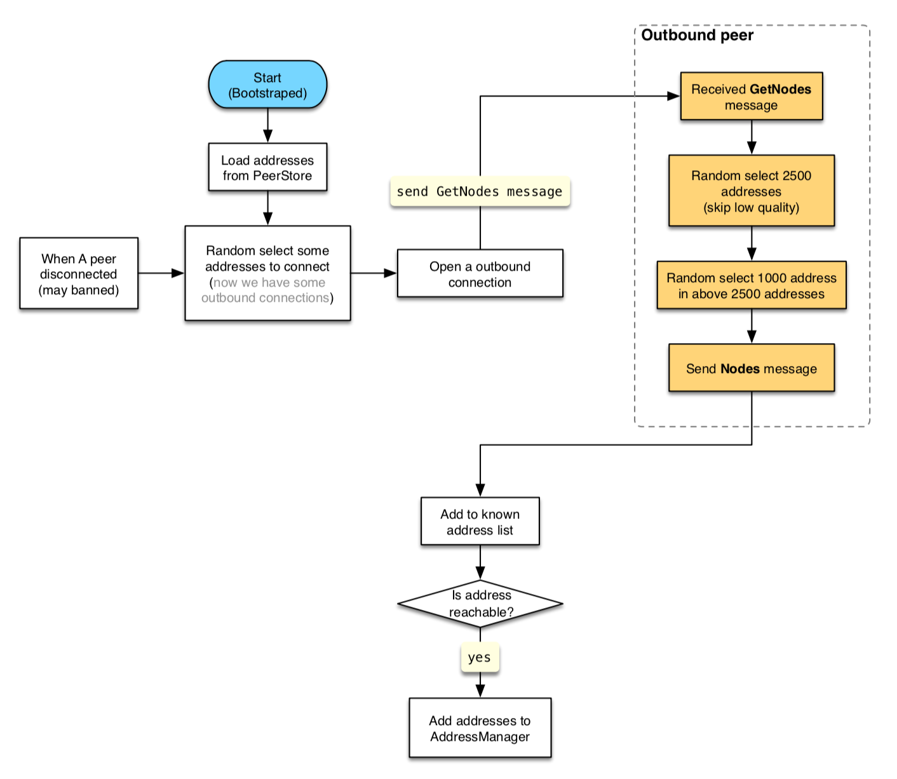
Announce Connected Nodes

Number: "0013"
Category: Standards Track
Status: Proposal
Author: Dingwei Zhang
Organization: Nervos Foundation
Created: 2019-01-02
get_block_template
Abstract
This RFC describes the decentralized CKB mining protocol.
Motivation
The original get_work [btc eth] mining protocol simply issues block headers for a miner to solve, the miner is kept in the dark, and has no influence over block creation. get_block_template moves block creation to the miner, the entire block structure is sent, and left to the miner to (optionally) customize and assemble, miner are enabled to audit and possibly modify the block before hashing it, this improves the security of the CKB network by making blocks decentralized.
Specification
Block Template Request
A JSON-RPC method is defined, called get_block_template. It accepts exactly three argument:
| Key | Required | Type | Description |
|---|---|---|---|
| cycles_limit | No | Number | maximum number of cycles to include in template |
| bytes_limit | No | Number | maximum number of bytes to use for the entire block |
| max_version | No | Number | highest block version number supported |
For cycles_limit, bytes_limit and max_version, if omitted, the default limit (consensus level) is used.
Servers SHOULD respect these desired maximums (if those maximums exceed consensus level limit, Servers SHOULD instead return the consensus level limit), but are NOT required to, clients SHOULD check that the returned template satisfies their requirements appropriately.
get_block_template MUST return a JSON Object containing the following keys:
| Key | Required | Type | Description |
|---|---|---|---|
| version | Yes | Number | block version |
| difficulty | Yes | String | difficulty in hex-encoded string |
| current_time | Yes | Number | the current time as seen by the server (recommended for block time) |
| number | Yes | Number | the number of the block we are looking for |
| parent_hash | Yes | String | the hash of the parent block, in hex-encoded string |
| cycles_limit | No | Number | maximum number of cycles allowed in blocks |
| bytes_limit | No | Number | maximum number of bytes allowed in blocks |
| commit_transactions | Should | Array of Objects | objects containing information for CKB transactions (excluding cellbase) |
| proposal_transactions | Should | Array of String | array of hex-encoded transaction proposal_short_id |
| cellbase | Yes | Object | information for cellbase transaction |
| work_id | No | String | if provided, this value must be returned with results (see Block Submission) |
Transaction Object
The Objects listed in the response's "commit_transactions" key contains these keys:
| Key | Required | Type | Description |
|---|---|---|---|
| hash | Yes | String | the hash of the transaction |
| required | No | Boolean | if provided and true, this transaction must be in the final block |
| cycles | No | Number | total number of cycles, if key is not present, cycles is unknown and clients MUST NOT assume there aren't any |
| depends | No | Array of Numbers | other transactions before this one (by 1-based index in "transactions" list) that must be present in the final block if this one is; if key is not present, dependencies are unknown and clients MUST NOT assume there aren't any |
| data | Yes | String | transaction Molecule bytes in hex-encoded string |
Block Submission
A JSON-RPC method is defined, called submit_block. to submit potential blocks (or shares). It accepts two arguments: the first is always a String of the hex-encoded block Molecule bytes to submit; the second is String of work_id.
| Key | Required | Type | Description |
|---|---|---|---|
| data | Yes | String | block Molecule bytes in hex-encoded string |
| work_id | No | String | if the server provided a workid, it MUST be included with submissions |
References
- bitcoin Getwork, https://en.bitcoin.it/wiki/Getwork
- ethereum Getwork, https://github.com/ethereum/wiki/wiki/JSON-RPC#eth_getwork
- Molecule Encoding
Number: "0014"
Category: Standards Track
Status: Proposal
Author: Xuejie Xiao
Organization: Nervos Foundation
Created: 2019-01-04
VM Cycle Limits
Introduction
This RFC describes cycle limits used to regulate VM scripts.
CKB VM is a flexible VM that is free to implement many control flow constructs, such as loops or branches. As a result, we will need to enforce certain rules in CKB VM to prevent malicious scripts, such as a script with infinite loops.
We introduce a concept called cycles, each VM instruction or syscall will consume some amount of cycles. At consensus level, a scalar max_block_cycles field is defined so that the sum of cycles consumed by all scripts in a block cannot exceed this value. Otherwise, the block will be rejected. This way we can guarantee all scripts running in CKB VM will halt, or result in error state.
Consensus Change
As mentioned above, a new scalar max_block_cycles field is added to chain spec as a consensus rule, it puts a hard limit on how many cycles a block's scripts can consume. No block can consume cycles larger than max_block_cycles.
Note there's no limit on the cycles for an individual transaction or a script. As long as the whole block consumes cycles less than max_block_cycles, a transaction or a script in that block are free to consume how many cycles they want.
Cycle Measures
Here we will specify the cycles needed by each CKB VM instructions or syscalls. Note right now in the RFC, we define hard rules for each instruction or syscall here, in future this might be moved into consensus rules so we can change them more easily.
The cycles consumed for each operation are determined based on the following rules:
- Cycles for RISC-V instructions are determined based on real hardware that implement RISC-V ISA.
- Cycles for syscalls are measured based on real runtime performance metrics obtained while benchmarking current CKB implementation.
Initial Loading Cycles
For each byte loaded into CKB VM in the initial ELF loading phase, 0.25 cycles will be charged. This is to encourage dapp developers to ship smaller smart contracts as well as preventing DDoS attacks using large binaries. Notice fractions will be rounded up here, so 30.25 cycles will become 31 cycles.
Instruction Cycles
All CKB VM instructions consume 1 cycle except the following ones:
| Instruction | Cycles |
|---|---|
| JALR | 3 |
| JAL | 3 |
| J | 3 |
| JR | 3 |
| BEQ | 3 |
| BNE | 3 |
| BLT | 3 |
| BGE | 3 |
| BLTU | 3 |
| BGEU | 3 |
| BEQZ | 3 |
| BNEZ | 3 |
| LD | 2 |
| SD | 2 |
| LDSP | 2 |
| SDSP | 2 |
| LW | 3 |
| LH | 3 |
| LB | 3 |
| LWU | 3 |
| LHU | 3 |
| LBU | 3 |
| SW | 3 |
| SH | 3 |
| SB | 3 |
| LWSP | 3 |
| SWSP | 3 |
| MUL | 5 |
| MULW | 5 |
| MULH | 5 |
| MULHU | 5 |
| MULHSU | 5 |
| DIV | 32 |
| DIVW | 32 |
| DIVU | 32 |
| DIVUW | 32 |
| REM | 32 |
| REMW | 32 |
| REMU | 32 |
| REMUW | 32 |
| ECALL | 500 (see note below) |
| EBREAK | 500 (see note below) |
Syscall Cycles
As shown in the above chart, each syscall will have 500 initial cycle consumptions. This is based on real performance metrics gathered benchmarking CKB implementation, certain bookkeeping logics are required for each syscall here.
In addition, for each byte loaded into CKB VM in the syscalls, 0.25 cycles will be charged. Notice fractions will also be rounded up here, so 30.25 cycles will become 31 cycles.
Guidelines
In general, the cycle consumption rules above follow certain guidelines:
- Branches are more expensive than normal instructions.
- Memory accesses are more expensive than normal instructions. Since CKB VM is a 64-bit system, loading 64-bit value directly will cost less cycle than loading smaller values.
- Multiplication and divisions are much more expensive than normal instructions.
- Syscalls include 2 parts: the bookkeeping part at first, and a plain memcpy phase. The first bookkeeping part includes quite complex logic, which should consume much more cycles. The memcpy part is quite cheap on modern hardware, hence less cycles will be charged.
Looking into the literature, the cycle consumption rules here resemble a lot like the performance metrics one can find in modern computer archtecture.
Number: "0015"
Category: Informational
Status: Draft
Author: Kevin Wang, Jan Xie, Jiasun Li, David Zou
Organization: Nervos Foundation
Created: 2019-03-08
Crypto-Economics of the Nervos Common Knowledge Base
1. The Objectives of a Token Economics Design
Public permission-less blockchains are open and distributed systems with diverse groups of participants. A well-designed crypto-economics model is to provide incentives so that participants' pursuit of own economic interests leads to desired emergent behaviors in alignment with the protocol, to contribute to the blockchain network's success.
More specifically, the design of a crypto-economic system must provide answers to the following questions:
- How can the economic model ensure the security of the protocol?
- How can the economic model ensure long term sustainability of the protocol?
- How can the economic model align the objectives of different actors to grow the value of the protocol network?
2. The Crypto-economics Design of Bitcoin
The Bitcoin protocol uses its native currency to incentivize miners to validate and produce blocks. The Nakamoto Consensus considers the longest chain as the valid chain, which encourages block producing miners to propagate new blocks as soon as they produce them and validate blocks as soon as they receive them. This ensures that the whole network achieves consensus on the global state.
The native tokens of the Bitcoin network function both as a utility token and an asset. When bitcoins function as a utility, they represent a "Medium of Exchange" (MoE) and can be used to pay transaction fees; when they function as an asset, they represent a "Store of Value" (SoV) and can be used to preserve value over time. The two use cases are not mutually exclusive. They are both important for the network to function. However, it's important to study the economic motives of the users of both use cases as a guide to analyze the sustainability of the Bitcoin network.
The Bitcoin protocol constrains the network's transaction throughput by using a fixed block size limit. Users bid with fees on the limited throughput to have their transactions processed. With this auction like mechanism, transaction fees are determined by the transaction demand - the more demand there is on the network, the higher the transaction fee a user has to pay to beat the competition and have their transaction included in the block.
Bitcoin as a Medium of Exchange Network
The Medium of Exchange use case views the Bitcoin network primarily as a peer to peer value transfer network. MoE users don't have to hold bitcoins to benefit from the network - it's the transactions in themselves that provide value. In fact, there are specialized Bitcoin payment services to provide access to liquidity and allow senders and receivers to acquire and dispose of Bitcoins just in time to perform the value transfer, without having to hold the cryptocurrency. MoE users are not concerned with price or the movement of price but care about the fiat equivalent cost of the transaction fees.
It's challenging for Bitcoin to become a dominant MoE network. If the protocol calibrates its block time and the block size limit, thereby fixing the supply of transactions, the success of the network will necessarily increase the cost of transactions and reduce its competitiveness among other similar purposed blockchains as well as its own forks; If the protocol aims to keep the transaction cost low and increase the supply of transactions with faster block time or bigger blocks, it could compromise both security and decentralization through higher fork rate and increased cost of consensus participation.
Bitcoin as a Store of Value Network
Store of Value users view the Bitcoin network as a protocol to provide security to its native cryptocurrency as an asset that can preserve value over time. They see the Medium of Exchange use case as the necessary function to go in and out of this asset. A store of value user, especially the ones who hold the cryptocurrency for a long time, doesn't care much about the transaction cost, as they can amortize it over time. They do care about the value of a Bitcoin, which depends on the network's security and decentralization - if the network becomes less secure and can be attacked easily, it'll stop being perceived as a store of value and the tokens will lose value; if the network becomes centralized, Bitcoin as an asset no longer has independent value, but has to assume counter-party risk.
For Bitcoin to succeed as an SoV network, it must continue to keep its monetary policy stable and its network secure and decentralized. However, Bitcoin's monetary policy has a hard cap, and after all the coins are mined, the network can only pay for the miners with transaction fees. It's still an open question whether this model could be sustainable, especially considering Store of Value networks themselves tend not to produce many transactions.
Who Compensates the Miners Over the Long Run?
Security and decentralization are two essential properties of a blockchain network, and they come with a high cost that must be paid to the operators of the network. Bitcoin's current model has network security entirely paid with transaction fees after all the coins are mined. However, the MoE users have very limited time exposure to the network's security risk, therefore won't be willing to pay for it; the SoV users have prolonged exposure to the network's security risk and are willing to pay for it, but they produce nearly no transactions.
Bitcoin's consensus mechanism incentivizes miners to recognize the longest chain as the network's canonical state. Miner's ongoing supply of hashing power doesn't only provide security for the current block, but the immutability of all the blocks before it on the canonical chain. Relying on the SoV users to make one time payments for the ongoing security protection they receive from miners is not sustainable.
In an SoV network, relying on inflation to fund network security is more incentive compatible with the users. An inflation based block reward mechanism represents indirect payments from the beneficiaries of the network's ongoing security to the providers of such security, in proportion to the duration that they enjoy the service.
3. Preservational and Transactional Smart Contract Platforms
Smart contract platforms like Ethereum come with Turing-complete programmability and can support a much wider variety of use cases. The native tokens are typically used to price and pay for the cost of decentralized computation. Like the Bitcoin network, smart contract platforms also have the dual functions of preserving value and performing transactions. They differ from the payment networks in that the value they preserve is not only their own native tokens but also the internal states of decentralized applications, for example, crypto-assets ownership in ERC20 smart contracts.
Another significant difference is that transactions on smart contract platforms are much more "portable". It's much easier to take advantage of the more advanced scripting capability of smart contract platforms to develop interoperability protocols to move transactions to a more cost-effective transactional blockchain and then securely settle back to the main "system of record" blockchains.
The economic models of smart contract platforms face similar polarization tendency of payment networks. With their superior interoperable capabilities, smart contract platforms are going to be even more specialized into transactional platforms and preservation platforms. Economically, this bifurcation comes from the fact that the two use cases have different ways of utilizing system resources - transactions consume instantaneous but renewable computation and bandwidth resources, and preservation requires long term occupation of the global state. An economic model optimized for one is unlikely to be optimal for the other.
Competitive transactional platforms need to prioritize for low transaction cost. Transactional users are willing to accept less-optimal security, because of their only moment-in-time, limited exposure to security risk. They're willing to accept the possibility of censored transactions, as long as there are options to take their transactions elsewhere. A transactional platform that invests in either security or censorship resistance will have higher cost of transactions, reflected either with higher transaction fees or high capital cost for stakes in a "stake for access" model, making the network less competitive. This is especially true when a well-designed inter-blockchain protocol can allow trust-less state transfers and fraud repudiation of transactions. We already see examples of transactional users prioritizing cost over security in centralized crypto-asset exchanges and not-so-decentralized blockchains - despite their flaws, they're still popular because of their transactional efficiency.
Competitive preservation platforms need to be sustainably secure and censorship-resistant. It requires an economic model designed not around transactions that happen moment-in-time, but around the ongoing occupation of the global state, and have users pay for the network infrastructure metered in their consumption of this critical resource.
4. Store of Assets
One of the most important use cases for smart contract platforms is to issue tokens to represent ownership of assets. These crypto-assets can have their own communities and markets, and their values are independent of the value of their platform tokens. On the other hand, these assets depend on the platform to process transactions and provide security. Payment networks like Bitcoin can be seen as single asset platforms, where smart contract platforms are multi-asset platforms. Similar to the concept of "Store of Value" in the context of Bitcoin, we call the utility that smart contract platforms preserve the value of its crypto-assets "Store of Assets".
Preservation focused smart contract platforms must have a Store of Assets token economics design. The level of platform security has to grow along with the asset value it preserves. Otherwise, as asset value grows, it will be increasingly profitable to "double-spend" assets by attacking the consensus process of the platform.
None of the current smart contract platforms are designed as Store of Assets platforms. Their token economics are designed either to facilitate transactions (for example, Ethereum's native tokens are to pay for the decentralized computation) or to fulfill staking requirements. In either case, the growth in asset value doesn't necessarily raise miner's income to provide more security.
Every multi-asset platform is an ecosystem of independent projects. The security of the platform can be seen as "public goods" that benefit all projects. To make the ecosystem sustainable from a security point of view, there has to be a clear mechanism that the platform captures the economic success of the ecosystem to raise its own level of security. In other words, a Store of Assets platform has to be able to translate the demand of crypto-assets to the revenue of its miners, often through raising the value of the native tokens with which the miners are compensated. Otherwise, the platform's level of security becomes the ceiling of assets' value. When the value of an asset rises such that typical transactions can no longer be sufficiently protected by the platform, the liquidity would dry up and the demand of the asset would fade.
Decentralized multi-assets smart contract platforms have to be Store of Assets to be sustainable.
5. Decentralization and the Need for Bounded State
Like other long term store of value systems, a Store of Assets platform has to be neutral and free of risks of censorship and confiscation. These are the properties that made gold the world's favorite the store of value for thousands of years. For open, permission-less blockchain networks, censorship resistance comes down to having the broadest consensus scope with a low barrier for consensus and full node participation. Compared to payment networks, running a full node for a smart contract system is more resource intensive. Therefore a Store of Assets platform must take measures to protect the operating cost of full nodes to keep the network sufficiently decentralized.
Both Bitcoin and Ethereum throttle transaction throughput to ensure participation is not limited to only "super computers" - Bitcoin throttles on bandwidth and Ethereum throttles on computation. However, they haven't taken effective measures to contain the ever growing global state necessary for consensus participation and independent transaction validation. This is especially a centralization force for high throughput smart contract platforms, where the global state grows even faster.
In Bitcoin, the global state is the UTXO set, and its growth rate is effectively capped with the block size limit. Users are encouraged to create UTXOs efficiently, since every new UTXO adds overhead to the transaction where it's created, making the transaction more expensive. However, once a UTXO is created, it doesn't cost anything to have it occupy the global state forever.
In Ethereum, the global state is represented with the EVM's state trie, the data structure that contains the balances and internal states of all accounts. When new accounts or new contract values are created, the size of the global state expands. Ethereum charges fixed amounts of Gas for inserting new values into its state storage and offers fixed amounts of Gas as transaction refund when values are removed. Ethereum's approach is a step in the right direction, but still has several issues:
- Neither the size nor the growth rate of the global state is bounded, this gives very little certainty in the cost of full node participation.
- The system raises one-time revenue for expanding the state storage, but miners and full nodes have to bear the cost of storage over time.
- There's no obvious reason why the cost of expanding storage should be priced in fixed Gas amounts, which is designed as measurement to price units of computation.
- The "pay once, occupy forever" state storage model gives very little incentive for users to voluntarily clear state, and do so sooner than later.
The Ethereum community is actively working on this problem, and the leading solution is to charge smart contract "state rent" - contracts have to periodically pay fees based on the size of its state. If the rent is not paid, the contract goes to "hibernation" and is not accessible before the payment is current again. We see several difficult-to-solve problems with this approach:
- Many contracts, especially popular ERC20 contracts, represent decentralized communities and express asset ownership of many users. It's a difficult problem to coordinate all the users to pay for state rent in a fair and efficient way.
- Even if a contract is current on its rent payment, it still may not be fully functional because some of its dependent contracts may be behind on their payments.
- The user experience for contracts with state rent is sub-optimal
We believe a well-designed mechanism to regulate the state storage has to be able to achieve the following goals:
- The growth of the global state has to be bounded to give predictability for full node participation. Ideally, the cost is well within the range of non-professional participants to keep the network maximally decentralized. Keeping this barrier low allows participants of the decentralized network to verify history and state independently, without having to trust a third party or service. This is fundamentally the reason why public blockchains are valuable.
- With bounded growth of the global state, the price for expanding it and the rewards for reducing it should be determined by the market. In particular, it's desirable to have the cost of expanding state storage higher when it's mostly full, and lower when it's mostly empty.
- The system has to be able to continuously raise revenue from its state users to pay miners for providing this resource. This serves both purposes of balancing miner's economics and providing incentives for users to clear unnecessary states sooner than later.
Just like how Bitcoin throttles and forces pricing on bandwidth and Ethereum throttles and forces pricing on computation, to keep a blockchain network long term decentralized and sustainable, we have to come up with a way to constrain and price the global state. This is especially important for preservation focused, Store of Assets networks, where usage of the network is not about transactions that mostly happen off-chain, but ongoing occupation of the global state.
6. The Economic Model of the Nervos Common Knowledge Base
The Nervos Common Knowledge Base (Nervos CKB for short) is a preservation focused, "Store of Assets" blockchain. Architecturally, it's designed to best support on-chain state and off-chain computation; economically, it's designed to provide sustainable security and decentralization. Nervos CKB is the base layer of the overall Nervos Network.
Native Tokens
The native token for the Nervos CKB is the "Common Knowledge Byte", or "CK Byte" for short. The CK Bytes represent cell capacity in bytes, and they give owners the ability to occupy a piece of the blockchain's overall global state. For example, if Alice owns 1000 CK Bytes, she can create a cell with 1000 bytes in capacity, or multiple cells that add up to 1000 bytes in capacity. She can use the 1000 bytes to store assets, application state, or other types of common knowledge.
A cell's occupied capacity could be equal to or less than its specified capacity. For example, for a 1000 byte cell, 4 bytes would be used to specify its own capacity, 64 bytes for the lock script and 128 bytes for storing state. Then the cell's current occupied capacity is 196 bytes, but with room to grow up to 1000 bytes.
The smallest unit of the native token is "CK Shannon": 1 CK Byte = 100_000_000 CK Shannons.
"CK Shannon" is the indivisible unit.
"CK Shannon" is designed for the scenes that people want to transfer value less than one "CK Byte".
Token Issuance
There are two types of native token issuance. The "base issuance" has a finite total supply with a Bitcoin like issuance schedule - the number of base issuance halves approximately every 4 years until all the base issuance tokens are mined out. All base issuance tokens are rewarded to the miners as incentives to protect the network.
The "secondary issuance" is designed to collect state rent, and has issuance amount that is constant over time. After base issuance stops, there will only be secondary issuance.
Collecting State Rent with Secondary Issuance and the NervosDAO
Since the native tokens represent right to expand the global state, the issuance policy of the native tokens bounds the state growth. As state storage is bounded and becomes a scarce resource like bandwidth in Bitcoin and computation throughput in Ethereum, they can be market priced and traded. State rent adds the necessary time dimension to the fee structure of state storage occupation. Instead of mandating periodic rent payments, we use a two-step approach as a "targeted inflation" scheme to collect this rent:
- On top of the base issuance, we add the secondary issuance which can be seen as "inflation tax" to all existing token holders. For users who use their CK Bytes to store state, this recurring inflation tax is how they pay state rent to the miners.
- However, we would have also collected rent from the CK Bytes that are not used to store state, and we need to return to them what we collected. We allow those users to deposit and lock their native tokens into a special contract called the NervosDAO. The NervosDAO receives part of the "secondary issuance" to make up for the otherwise unfair dilution.
Let's suppose at the time of a secondary issuance event, 60% of all CK Bytes are used to store state, 35% of all CK Bytes are deposited and locked in the NervosDAO, and 5% of all CK Bytes are kept liquid. Then 60% of the secondary issuance goes to the miners, 35% of the issuance goes to the NervosDAO to be distributed to the locked tokens proportionally. The use of the rest of the secondary issuance - in this example, 5% of the that issuance - is determined by the community through the governance mechanism. Before the community can reach agreement, this part of the secondary issuance is going to be burned.
For long term token holders, as long as they lock their tokens in the NervosDAO, the inflationary effect of secondary issuance is only nominal. For them it's as if the secondary issuance doesn't exist, and they're holding hard-capped tokens like Bitcoin.
Miner Compensation
Miners are compensated with both block rewards and transaction fees. They receive all the base issuance, and part of the secondary issuance. In the long term when base issuance stops, miners still receive state rent income that's independent of transactions but tied to the adoption of the common knowledge base.
Paying for Transaction Fees
A decentralized blockchain network's transaction capacity is always limited. Transaction fees serve the dual purposes of establishing a market for the limited transaction capacity and as protection against spams. In Bitcoin, transaction fees are expressed with the difference between the outputs and inputs; In Ethereum, the user specify the per computation unit price they're willing to pay with gasprice, and use gaslimit to establish a budget for the entire transaction.
To ensure decentralization, the Nervos CKB restricts both computation and bandwidth throughput, effectively making it an auction for users to use those system resources. When submitting a transaction, the user can leave the total input cell capacities exceeding the total output cell capacities, leaving the difference as transaction fees expressed in the native tokens, payable to the miner that creates the block containing the transaction.
The number of units of computation (called "cycles") are added to the peer-to-peer messages between the full nodes. When producing blocks, miners order transactions based on both transaction fees and the number of computation cycles necessary for transaction validation, maximizing its per-computation-cycle income within the computation and bandwidth throughput restrictions.
In the Nervos CKB, the transaction fees can be paid with the native tokens, user defined tokens or a combination of both.
Paying for Transaction Fees with User Defined Tokens
Users are also free to use other tokens (for example, stable coins) to pay transactions fees, a concept known as "Economic Abstraction". Note that even without explicit protocol support, it's always possible to have users make arrangements with miners to pay transaction fees in other tokens outside of the protocol. This is often seen as a threat for many platforms - if the platform's native tokens are purely to facilitate transactions, this would take away its intrinsic value and cause a collapse.
With the Nervos CKB, economic abstraction is possible because the payment methods are not hard-coded in transactions. We embrace economic abstraction and the benefits it brings. Since the intrinsic value of the native tokens is based not on transaction payment, economic abstraction doesn't pose a threat to the stability of our economic model. We do expect, however, the native tokens themselves are going to be the payment method of choice for vast majority of users and use cases - the native tokens are going to be the most widely held tokens in the Nervos ecosystem, and everyone who owns assets necessarily owns the Nervos natives tokens as state storage capacity that the assets occupy.
For more a more detailed analysis on transaction payments, please see Appendix 1.
7. An Economic Model Designed for Preservation
The economic model of the Nervos CKB is designed specifically to preserve assets and other types of common knowledge. Let's bring back the 3 high level design goals and examine our design in this context:
- How can the economic model ensure the security of the protocol?
- How can the economic model ensure long term sustainability of the protocol?
- How can the economic model align the objectives of different actors to grow the value of the protocol network?
Security and Sustainability of the Protocol
The main design choices we made to ensure security of the Nervos CKB as a "Store of Assets" protocol are:
- Our native tokens represent claim to capacity in the state storage. This means the demand to holding assets on the platform directly puts demand on owning the native tokens. This creates an effective value capture mechanism into the native tokens from the assets they preserve. We claim that this is the only sustainable way that a "Store of Assets" platform can grow its security budget over time, instead of entirely basing it on speculation and altruism.
- The secondary issuance makes sure miner compensation is predictable and based on preservation demand instead of transactional demand. It also eliminates potential incentive incompatibility of the Nakamoto Consensus nodes after block reward stops. This is also important in a future when most transactions move to the layer 2, leaving a starved layer 1.
- The NervosDAO serves as the counter-force to the inflationary effects of secondary issuance, to ensure long term token holders are not diluted by this issuance.
For a purpose of keeping the network decentralized and censorship resistant, we believe it's important to limit the resource requirements of consensus and full nodes. We protect the operating cost of nodes by regulating the throughput of computation and bandwidth, similar to how it's accomplished with Bitcoin and Ethereum. We regulate the state storage with a combination of a "cap and trade" pricing scheme and opportunity cost based cost model for storage users.
Aligning the Interests of Network Participants
In a typical smart contract platform, participants of the network have different interests - users want cheaper transactions, developers want adoption of their applications, miners want higher income, and holders want appreciation of their tokens. Those interests are not well aligned, and oftentimes in conflict - for example, more adoption won't give cheaper transactions (they'll be more expensive as more demand is put on the blockchain); cheaper transactions won't give more income to the miners; higher token price won't help with transaction cost (the opposite could happen if users don't adjust their local transaction fee setting). Decentralized computation platforms provide value through processing transactions. The price of their tokens doesn't materially change the intrinsic value of the network. For example, Ether's price doubling doesn't increase or decrease Ethereum's intrinsic value as a decentralized computation platform, because the introduction of Gas in the first place is to de-couple the price of computations from the price actions of Ether the cryptocurrency. This makes token holders of Ethereum only take the role of a speculator, instead of active contributors that can increase the value of the network.
In the Nervos CKB, Store of Assets users want security of their assets; developers want more adoption, reflected in more assets preserved; miners want higher income and token holders want price appreciation of their tokens. Higher token price supports everyone's objective - the network would be more secure, miners get higher income, and token holders get better return.
Aligning all participants' incentives allows the network to best harness network effects to grow its intrinsic value. It also produces a more cohesive community and makes the system less prone to governance challenges.
Bootstrapping Network Effect and Network Growth
As the network grows to secure more assets and common knowledge, more native tokens of the Nervos CKB are going to become occupied. This accrues value to the native tokens by reducing circulating supply and providing positive support to the market price of the tokens. The higher price and increased share of secondary issuance motivate miners to expand operations and make the network more secure, increasing the intrinsic value of the network and the native tokens, attracting more and higher value preservation usage.
The pro-cyclical loop of the network's adoption and network's intrinsic value provides a powerful growth engine for the network. Combined with how the network's value accrues to the native tokens and gets captured by long term holders, it makes the network's native token an excellent candidate for store of value. Compared to Bitcoin as a monetary store of value, the Nervos CKB is similarly designed to be secure and long term decentralized. We believe Nervos CKB has a more balanced and sustainable economic model than Bitcoin, and also comes with the intrinsic utility of securing crypto-assets and common knowledge.
Developer's Cost in a "First Class Asset" Platform
In Ethereum, the top-level abstraction is its accounts. Assets are expressed as state owned by smart contract accounts. In the Nervos CKB, assets are the first class abstraction with cells, where ownership is expressed with the lock script of a transaction output, a concept known as "First Class Assets". In other words, just like Bitcoin, assets in the Common Knowledge Base are owned by users directly instead of being kept custody in a smart contract.
The "First Class Asset" design allows the state storage cost of owning assets put not on developers, but on individual users. For example, a developer could create a User Defined Token with 400 bytes of code as validation rules, and every record of asset ownership would take 64 bytes. Even if the assets were to have 10,000 owners, the developer would still only need to use 400 CK Bytes.
For developers, we expect the capital cost of building projects on the CKB is moderate even in a scenario that the price of the native tokens were to go up degrees of magnitude higher. For users, the cost of the 64 CK Bytes to own an asset on the Nervos CKB would also be trivial for a long time even in the most aggressive adoption assumption of the platform.
In the future where those cost were to become meaningfully expensive, it's always possible for developers to rely on lending to bootstrap their projects and for users to move their assets off the Common Knowledge Base on to other transaction blockchains in the Nervos Network if they're willing to take the corresponding trade-offs. Please see the "Nervos Network" section for more details.
Lending
Nervos CKB will support native token lending to improve the liquidity of the CK Bytes thanks to the programming ability provided by CKB-VM and the Cell model. Since the utility of the native token is realized through possession instead of transactions, it's possible to have risk-free un-collateralized lending for CK Bytes locked for known duration of time. Entrepreneurs can borrow the CK Bytes they need with much lower capital cost for a period such as 6 months to work on prototypes and prove their business model. Long term users can lend out their tokens to earn extra income.
The effective interest rate of lending is determined by the market supply and demand, but the current state of token utilization also plays a big role. Higher utilization of the available global state means fewer tokens can be made available for lending. This makes the lending interest higher and makes it more attractive to release state and lock tokens in the NervosDAO to earn income. It serves the purpose to help reduce the global state: lower utilization of the available state means more tokens can be lent out. It makes the lending interest rate lower to encourage adoption.
Nervos Network
The Nervos CKB is the base layer of the Nervos Network with the highest security, decentralization, transaction cost and state storage cost. Just like how Bitcoin and Ethereum could scale off-chain with lightning network and plasma solutions, Nervos CKB also embraces off-chain scaling solutions and allow users to preserve and transact assets off-chain. When using off-chain solutions, users and developers can choose their own trade-offs between cost, security, latency and liveness properties.
Owning and transacting assets on the Nervos CKB come with the highest capital and transaction cost, but is also the most secure. It's best suited for high value assets and long term asset preservation; Layer 2 solutions can provide scaling for both transaction throughput and state storage, but they would come with either weakened security assumptions or mandate extra steps of repudiation. They also often require participants to be online within a time window. If both are acceptable (likely for owning and transacting low value assets for short duration), the Nervos CKB can be used as security anchor to other transaction blockchains, to effectively magnify both its transaction and state storage capacities.
If operators of transaction blockchains don't want to introduce extra security assumptions, they can mandate that high value assets be issued on the CKB and low value assets be issued on transactional blockchains. Then they can use CK Bytes on the CKB to store periodic block commits, challenges and proofs from the transactional blockchains - critical common knowledge for secure off-chain transaction repudiation. If a transaction chain doesn't mind introducing an extra layer of security assumption with a committee-based consensus protocol, they could also have their validators bond CK Bytes on the CKB to explicitly adjust security parameters.
8. Applications of the Token Economics Model
The economic model of the Nervos CKB provides building blocks that application developers can use directly as part of their own economic model. We'll list subscriptions and liquidity income as two such possible building blocks.
Subscriptions
Recurring payment or subscription is a typical economic model for services offered on the blockchain that span over some duration of time. One such example is the off-chain transaction monitoring service that's often needed for layer 2 solutions. On the Nervos CKB, duration based services can ask their users to lock certain amount of native tokens in the NervosDAO and designate the service providers as the beneficiaries of the generated interest income in a subscription based model. Users can stop using the services by withdrawing their tokens from the NervosDAO.
In fact, Store of Assets users that occupy global state can be seen as paying an ongoing subscription metered by the size of their state, and the beneficiaries are the miners that provide the security service.
Liquidity Income
In a Plasma like layer 2 solution, a typical pattern is that users would deposit native tokens in a smart contract on the layer 1 blockchain in exchange for transaction tokens on the layer 2. A layer 2 operator with sufficient reputation can have users commit to fixed duration deposits, and then use such deposits to provide liquidity to the lending market and earn income. This gives operators of layer 2 solutions an additional revenue stream on top of the fees collected on layer 2.
Appendix 1: Transaction Cost Analysis
Nervos CKB uses Proof of Work based Nakamoto consensus, similar to what's used in Bitcoin - for more details, please see the "Nervos Consensus Paper"
The economics of the consensus process is designed to incentivize nodes to participate in the consensus process and provide measurements that nodes can use to prioritize transactions. At the core, it's designed to help consensus nodes answer the question: "Is this transaction worth to be included in the next block if I had the opportunity to produce the block?"
A block producing node can do a cost/benefit analysis to answer this question. The benefit of including a transaction is to be able to collect its transaction fee, and the cost of including a transaction in a block has three parts:
- Fee Estimation Cost (
 ): this is the cost to estimate the maximum possible income if a node where to include a transaction
): this is the cost to estimate the maximum possible income if a node where to include a transaction - Transaction Verification Cost (
 ): blocks containing invalid transactions will be rejected by the consensus process, therefore block producing nodes have to verify transactions before including them in a new block.
): blocks containing invalid transactions will be rejected by the consensus process, therefore block producing nodes have to verify transactions before including them in a new block. - State Transition Cost (
 : after a block is produced, the block producing node has to perform local state transitions defined by state machines of the transactions in the block.
: after a block is produced, the block producing node has to perform local state transitions defined by state machines of the transactions in the block.
In particular, transaction verification,  has two possible steps:
has two possible steps:
-
 : Authorization Verification Cost
: Authorization Verification Cost -
 : State Transition Verification Cost
: State Transition Verification Cost
We use CPC and EVC to represent Complete Processing Cost and Estimation and Verification Cost:
- CPC: Complete Processing Cost
- EVC: Estimation and Verification Cost;


Bitcoin's Transaction Cost Analysis
Bitcoin allows flexible authorization verification with the Bitcoin Script. Users can script the authorization rules and build smart contracts through  when creating transactions. Bitcoin has a fixed state transition semantic, which is to spend and create new UTXOs. In Bitcoin, the result of the state transitions are already included in transactions, therefore the State Transition Cost (STC) is 0.
when creating transactions. Bitcoin has a fixed state transition semantic, which is to spend and create new UTXOs. In Bitcoin, the result of the state transitions are already included in transactions, therefore the State Transition Cost (STC) is 0.
Bitcoin uses the amount difference of the inputs and outputs to express transaction fees. Therefore, the cost of estimating transaction fees scales to  where
where  is the total number of inputs and outputs.
is the total number of inputs and outputs.
Authorization verification in Bitcoin requires running scripts of all inputs. Because the Bitcoin Script prohibits JUMP/looping, the computation complexity can roughly scale to the length of the input scripts, as , where
, where  is the number of inputs and
is the number of inputs and  is the average script length of an input. Therefore, the total cost of
is the average script length of an input. Therefore, the total cost of  roughly scales to the size of total transaction.
roughly scales to the size of total transaction.
Bitcoin's state transition rules are simple, and nodes only have to verify the total input amount is the same as the total output amount. Therefore, the  in Bitcoin is the same as
in Bitcoin is the same as  , also scaling to
, also scaling to  .
.
In total, Bitcoin's cost of processing a transaction roughly scales to the size of the transaction:

Ethereum's Transaction Cost Analysis
Ethereum comes with Turing-complete scriptability, and gives users more flexibility to customize state transition rules with smart contracts. Ethereum transactions include gaslimit and gasprice, and the transaction fees are calculated using the product of their multiplication. Therefore,  is
is  .
.
Unlike Bitcoin, Ethereum's transactions only include the computation commands of state transitions, instead of the results of the state transitions. Therefore, Ethereum's transaction verification is limited to authorization verification, and doesn't have state transition verification. The rules of authorization verification in Ethereum are:
- Verify the validility of the Secp256k1 signatures, with computation complexity of

- Verify the nonce match of the transaction and the account that starts the transaction, with computation complexity of

- Verify the account that starts transaction has enough ether to pay for the transaction fees and the amount transferred. This requires access to the account's current balance. Ignoring the global state size's impact on account access, we can assume the complexity of this step is also .
Based on the above, the overall authorization verification complexity in Ethereum is  .
.
Since every byte of the transaction data comes with cost  , the larger
, the larger  is, the more gas it needs, up to the gaslimit
is, the more gas it needs, up to the gaslimit  specified. Therefore,
specified. Therefore,

Ethereum comes with a Turing complete VM, and the computation of the result state could include logic of any complexity. Ethereum transaction's  caps the upper bound of computation, therefore
caps the upper bound of computation, therefore  To summarize all the above:
To summarize all the above:


Different from Bitcoin,  for the Ethereum nodes is less than
for the Ethereum nodes is less than  . This is because Ethereum nodes only compute the result state after transactions are included in the block. This is also the reason that transaction results on Ethereum could be invalid, (e.g. exceptions in contract invocation or the gas limit is exceeded), but the Bitcoin blockchain only has successfully executed transactions and valid results.
. This is because Ethereum nodes only compute the result state after transactions are included in the block. This is also the reason that transaction results on Ethereum could be invalid, (e.g. exceptions in contract invocation or the gas limit is exceeded), but the Bitcoin blockchain only has successfully executed transactions and valid results.
Nervos CKB's Transaction Cost Analysis
Nervos CKB's transactions are structured with inputs and outputs, similar to Bitcoin's. Therefore, the  and
and  for the Nervos CKB are the same as those of Bitcoin's:
for the Nervos CKB are the same as those of Bitcoin's:


Because CKB transactions include the result of the transactions as outputs, therefore:

Cycles as Measurement Units of Computation Complexity
We introduce "cycle" as a unit of measurement for computation complexity in the CKB, similar to the "gas" concept in Ethereum. Nervos CKB's VM is a RISC-V CPU simulator, therefore cycles here refer to real CPU computation cycles in the VM. The cycle number for an instruction represents the relative computation cost of that instruction. Transactions in the Nervos CKB require the sender to specify the number of cycles required for its verification. Nodes can opt to set an acceptable cycle upper bound cyclemax, and only process transactions with fewer cycles. We'll also introduce cycles to a block, with its value equal to the sum of all specified transaction cycles. The value of cycles in a block can't exceed the value blockcyclesmax, which are set and can be automatically adjusted by the system.
Nodes can set their cyclemax to different values. cyclemax only impacts how a block producing node accepts new transactions, not how a node accepts transactions in a new block. Therefore, it's not going to cause inconsistency in the validation of blocks. A valid block needs valid proof of work, and this cost discourages a block producing node to include an invalid transaction with high cycles value.
The following table shows the runtime differences in Bitcoin, Ethereum and the Nervos CKB.
Authorization ( | State Validation ( ) ) | State Transition | |
|---|---|---|---|
| Bitcoin | Generalized | Fixed | None |
| Ethereum | Fixed | None | Generalized |
| CKB | Generalized | Generalized | None |
Here's a summary of the computational complexity of different parts of the consensus process for Bitcoin, Ethereum and Nervos CKB ( means cycle limit)
means cycle limit)
 |  |  |  |  | |
|---|---|---|---|---|---|
| Bitcoin |  |  |  | | |
| Ethereum |  | |  | | |
| CKB | |  | | | |
Number: "0017"
Category: Standards Track
Status: Proposal
Author: Jinyang Jiang
Organization: Nervos Foundation
Created: 2019-03-11
Transaction valid since
Abstract
This RFC suggests adding a new consensus rule to prevent a cell to be spent before a certain block timestamp or a block number.
Summary
Transaction input adds a new u64 (unsigned 64-bit integer) type field since, which prevents the transaction to be mined before an absolute or relative time.
The highest 8 bits of since is flags, the remain 56 bits represent value, flags allow us to determine behaviours:
flags & (1 << 7)representrelative_flag.flags & (1 << 6)andflags & (1 << 5)together representmetric_flag.sinceuse a block based lock-time ifmetric_flagis00,valuecan be explained as a block number or a relative block number.sinceuse an epoch based lock-time ifmetric_flagis01,valuecan be explained as an absolute epoch or relative epoch.sinceuse a time based lock-time ifmetric_flagis10,valuecan be explained as a block timestamp(unix time) or a relative seconds.metric_flag11is invalid.
- other 5
flagsbits remain for other use.
The consensus to validate this field described as follow:
- iterate inputs, and validate each input by following rules.
- ignore this validate rule if all 64 bits of
sinceare 0. - check
metric_flagflag:- the lower 56 bits of
sincerepresent block number ifmetric_flagis00. - the lower 56 bits of
sincerepresent epoch ifmetric_flagis01. - the lower 56 bits of
sincerepresent block timestamp ifmetric_flagis10.
- the lower 56 bits of
- check
relative_flag:- consider field as absolute lock time if
relative_flagis0:- fail the validation if tip's block number or epoch or block timestamp is less than
sincefield.
- fail the validation if tip's block number or epoch or block timestamp is less than
- consider field as relative lock time if
relative_flagis1:- find the block which produced the input cell, get the block timestamp or block number or epoch based on
metric_flagflag. - fail the validation if tip's number or epoch or timestamp minus block's number or epoch or timestamp is less than
sincefield.
- find the block which produced the input cell, get the block timestamp or block number or epoch based on
- consider field as absolute lock time if
- Otherwise, the validation SHOULD continue.
A cell lock script can check the since field of an input and return invalid when since not satisfied condition, to indirectly prevent cell to be spent.
This provides the ability to implement time-based fund lock scripts:
# absolute time lock
# The cell can't be spent unless block number is greater than 10000.
def unlock?
input = CKB.load_current_input
# fail if it is relative lock
return false if input.since[63] == 1
# fail if metric_flag is not block_number
return false (input.since & 0x6000_0000_0000_0000) != (0b0000_0000 << 56)
input.since > 10000
end
# relative time lock
# The cell can't be spent unless 3 days(blockchain time) later since the cell gets confirmed on-chain.
def unlock?
input = CKB.load_current_input
# fail if it is absolute lock
return false if input.since[63].zero?
# fail if metric_flag is not timestamp
return false (input.since & 0x6000_0000_0000_0000) != (0b0100_0000 << 56)
# extract lower 56 bits and convert to seconds
time = since & 0x00ffffffffffffff
# check time must greater than 3 days
time > 3 * 24 * 3600
end
# relative time lock with epoch
# The cell can't be spent in the next epoch
def unlock?
input = CKB.load_current_input
# fail if it is absolute lock
return false if input.since[63].zero?
# fail if metric_flag is not epoch information
return false (input.since & 0x6000_0000_0000_0000) != (0b0010_0000 << 56)
# extract lower 56 bits
epoch = since & 0x00ffffffffffffff
# extract epoch information
epoch_number = epoch & 0xffffff
# enforce only can unlock in next or further epochs
epoch_number >= 1
end
Examples
# Absolute time lock
0x0000_0000_0000_3039 # The tx failed verification unless the block number is greater than #12345
0x4000_0000_5e83_d980 # The tx failed verification unless current blockchain date is later than 2020-04-01
0x2000_0000_0000_0400 # The tx failed verification unless the epoch number is greater than 1024
# Relative time lock
0x8000_0000_0000_0064 # The tx failed verification unless it is 100 blocks later since the input cell get confirmed on-chain
0xc000_0000_0012_7500 # The tx failed verification unless it is 14 days(blockchain time) later since the input cell get confirmed on-chain
0xa000_0000_0000_0018 # The tx failed verification unless it is 24 epochs later since the input cell get confirmed on-chain
Detailed Specification
since SHOULD be validated with the median timestamp of the past 11 blocks to instead the block timestamp when metric flag is 10, this prevents miner lie on the timestamp for earning more fees by including more transactions that immature.
The median block time calculated from the past 37 blocks timestamp (from block's parent), we pick the older timestamp as median if blocks number is not enough and is odd, the details behavior defined as the following code:
#![allow(unused)] fn main() { pub trait BlockMedianTimeContext { fn median_block_count(&self) -> u64; /// Return timestamp and block_number of the corresponding bloch_hash, and hash of parent block fn timestamp_and_parent(&self, block_hash: &H256) -> (u64, BlockNumber, H256); /// Return past block median time, **including the timestamp of the given one** fn block_median_time(&self, block_hash: &H256) -> u64 { let median_time_span = self.median_block_count(); let mut timestamps: Vec<u64> = Vec::with_capacity(median_time_span as usize); let mut block_hash = block_hash.to_owned(); for _ in 0..median_time_span { let (timestamp, block_number, parent_hash) = self.timestamp_and_parent(&block_hash); timestamps.push(timestamp); block_hash = parent_hash; if block_number == 0 { break; } } // return greater one if count is even. timestamps.sort(); timestamps[timestamps.len() >> 1] } } }
Validation of transaction since defined as follow code:
#![allow(unused)] fn main() { const LOCK_TYPE_FLAG: u64 = 1 << 63; const METRIC_TYPE_FLAG_MASK: u64 = 0x6000_0000_0000_0000; const VALUE_MASK: u64 = 0x00ff_ffff_ffff_ffff; const REMAIN_FLAGS_BITS: u64 = 0x1f00_0000_0000_0000; enum SinceMetric { BlockNumber(u64), EpochNumberWithFraction(EpochNumberWithFraction), Timestamp(u64), } /// RFC 0017 #[derive(Copy, Clone, Debug)] pub(crate) struct Since(pub(crate) u64); impl Since { pub fn is_absolute(self) -> bool { self.0 & LOCK_TYPE_FLAG == 0 } #[inline] pub fn is_relative(self) -> bool { !self.is_absolute() } pub fn flags_is_valid(self) -> bool { (self.0 & REMAIN_FLAGS_BITS == 0) && ((self.0 & METRIC_TYPE_FLAG_MASK) != METRIC_TYPE_FLAG_MASK) } fn extract_metric(self) -> Option<SinceMetric> { let value = self.0 & VALUE_MASK; match self.0 & METRIC_TYPE_FLAG_MASK { //0b0000_0000 0x0000_0000_0000_0000 => Some(SinceMetric::BlockNumber(value)), //0b0010_0000 0x2000_0000_0000_0000 => Some(SinceMetric::EpochNumberWithFraction(EpochNumberWithFraction::from_full_value(value))), //0b0100_0000 0x4000_0000_0000_0000 => Some(SinceMetric::Timestamp(value * 1000)), _ => None, } } } /// https://github.com/nervosnetwork/rfcs/blob/master/rfcs/0017-tx-valid-since/0017-tx-valid-since.md#detailed-specification pub struct SinceVerifier<'a, M> { rtx: &'a ResolvedTransaction, block_median_time_context: &'a M, block_number: BlockNumber, epoch_number_with_fraction: EpochNumberWithFraction, parent_hash: Byte32, median_timestamps_cache: RefCell<LruCache<Byte32, u64>>, } impl<'a, M> SinceVerifier<'a, M> where M: BlockMedianTimeContext, { pub fn new( rtx: &'a ResolvedTransaction, block_median_time_context: &'a M, block_number: BlockNumber, epoch_number_with_fraction: EpochNumberWithFraction, parent_hash: Byte32, ) -> Self { let median_timestamps_cache = RefCell::new(LruCache::new(rtx.resolved_inputs.len())); SinceVerifier { rtx, block_median_time_context, block_number, epoch_number_with_fraction, parent_hash, median_timestamps_cache, } } fn parent_median_time(&self, block_hash: &Byte32) -> u64 { let (_, _, parent_hash) = self .block_median_time_context .timestamp_and_parent(block_hash); self.block_median_time(&parent_hash) } fn block_median_time(&self, block_hash: &Byte32) -> u64 { if let Some(median_time) = self.median_timestamps_cache.borrow().get(block_hash) { return *median_time; } let median_time = self.block_median_time_context.block_median_time(block_hash); self.median_timestamps_cache .borrow_mut() .insert(block_hash.clone(), median_time); median_time } fn verify_absolute_lock(&self, since: Since) -> Result<(), Error> { if since.is_absolute() { match since.extract_metric() { Some(SinceMetric::BlockNumber(block_number)) => { if self.block_number < block_number { return Err(TransactionError::Immature).into()); } } Some(SinceMetric::EpochNumberWithFraction(epoch_number_with_fraction)) => { if self.epoch_number_with_fraction < epoch_number_with_fraction { return Err(TransactionError::Immature).into()); } } Some(SinceMetric::Timestamp(timestamp)) => { let tip_timestamp = self.block_median_time(&self.parent_hash); if tip_timestamp < timestamp { return Err(TransactionError::Immature).into()); } } None => { return Err(TransactionError::InvalidSince).into()); } } } Ok(()) } fn verify_relative_lock(&self, since: Since, cell_meta: &CellMeta) -> Result<(), Error> { if since.is_relative() { let info = match cell_meta.transaction_info { Some(ref transaction_info) => Ok(transaction_info), None => Err(TransactionError::Immature), }?; match since.extract_metric() { Some(SinceMetric::BlockNumber(block_number)) => { if self.block_number < info.block_number + block_number { return Err(TransactionError::Immature).into()); } } Some(SinceMetric::EpochNumberWithFraction(epoch_number_with_fraction)) => { let a = self.epoch_number_with_fraction.to_rational(); let b = info.block_epoch.to_rational() + epoch_number_with_fraction.to_rational(); if a < b { return Err(TransactionError::Immature).into()); } } Some(SinceMetric::Timestamp(timestamp)) => { // pass_median_time(current_block) starts with tip block, which is the // parent of current block. // pass_median_time(input_cell's block) starts with cell_block_number - 1, // which is the parent of input_cell's block let cell_median_timestamp = self.parent_median_time(&info.block_hash); let current_median_time = self.block_median_time(&self.parent_hash); if current_median_time < cell_median_timestamp + timestamp { return Err(TransactionError::Immature).into()); } } None => { return Err(TransactionError::InvalidSince).into()); } } } Ok(()) } pub fn verify(&self) -> Result<(), Error> { for (cell_meta, input) in self .rtx .resolved_inputs .iter() .zip(self.rtx.transaction.inputs()) { // ignore empty since let since: u64 = input.since().unpack(); if since == 0 { continue; } let since = Since(since); // check remain flags if !since.flags_is_valid() { return Err(TransactionError::InvalidSince).into()); } // verify time lock self.verify_absolute_lock(since)?; self.verify_relative_lock(since, cell_meta)?; } Ok(()) } } }
Number: "0019"
Category: Informational
Status: Draft
Author: Xuejie Xiao
Organization: Nervos Foundation
Created: 2019-03-26
Data Structures of Nervos CKB
This documents explains all the basic data structures used in CKB.
Cell
Example
{
"capacity": "0x19995d0ccf",
"lock": {
"code_hash": "0x9bd7e06f3ecf4be0f2fcd2188b23f1b9fcc88e5d4b65a8637b17723bbda3cce8",
"args": "0x0a486fb8f6fe60f76f001d6372da41be91172259",
"hash_type": "type"
},
"type": null
}
Description
| Name | Type | Description |
|---|---|---|
capacity | uint64 | The size of the cell (in shannons). When a new cell is generated (via transaction), one of the verification rule is capacity_in_bytes >= len(capacity) + len(data) + len(type) + len(lock). This value also represents the balance of CKB coin, just like the nValue field in the Bitcoin's CTxOut. (E.g. Alice owns 100 CKB coins means she can unlock a group of cells that has 100 amount of bytes (which is 10_000_000_000 amount of shannons) in total.). The actual value is returned in hex string format. |
type | Script | A Script that defines the type of the cell. It limits how the data field of the new cells can be changed from old cells. type is required to has a data structure of script. This field is optional. |
lock | Script | A Script that defines the ownership of the cell, just like the scriptPubKey field in the Bitcoin's CTxOut. Whoever can provide unlock arguments that makes the execution of this script success can consume this cell as input in an transaction (i.e. has the ownership of this cell). |
More information about Cell can be found in the whitepaper.
Script
Example
{
"code_hash": "0x9bd7e06f3ecf4be0f2fcd2188b23f1b9fcc88e5d4b65a8637b17723bbda3cce8",
"args": "0x0a486fb8f6fe60f76f001d6372da41be91172259",
"hash_type": "type"
}
Description
| Name | Type | Description |
|---|---|---|
code_hash | H256(hash) | The hash of ELF formatted RISC-V binary that contains a CKB script. For space efficiency consideration, the actual script is attached to current transaction as a dep cell. Depending on the value of hash_type, the hash specified here should either match the hash of cell data part in the dep cell, or the hash of type script in the dep cell. The actual binary is loaded into an CKB-VM instance when they are specified upon the transaction verification. |
args | Bytes | The argument as the script input. The argument here is imported into the CKB-VM instance as the input argument for the scripts. |
hash_type | String, could be type or data | The interpretation of code hash when looking for matched dep cells. If this is data, code_hash should match the blake2b hash of data in a dep cell; if this is type, code_hash should instead match the type script hash of a dep cell. |
When a script is validated, CKB will run it in a RISC-V VM, args must be loaded via special CKB syscalls. UNIX standard argc/argv convention is not used in CKB. For more information on the CKB VM please refer to CKB VM RFC.
For more information regarding how Script structure is implemented please refer to the CKB repo.
Transaction
Example
{
"version": "0x0",
"cell_deps": [
{
"out_point": {
"tx_hash": "0xbd864a269201d7052d4eb3f753f49f7c68b8edc386afc8bb6ef3e15a05facca2",
"index": "0x0"
},
"dep_type": "dep_group"
}
],
"header_deps": [
"0xaa1124da6a230435298d83a12dd6c13f7d58caf7853f39cea8aad992ef88a422"
],
"inputs": [
{
"previous_output": {
"tx_hash": "0x8389eba3ae414fb6a3019aa47583e9be36d096c55ab2e00ec49bdb012c24844d",
"index": "0x1"
},
"since": "0x0"
}
],
"outputs": [
{
"capacity": "0x746a528800",
"lock": {
"code_hash": "0x9bd7e06f3ecf4be0f2fcd2188b23f1b9fcc88e5d4b65a8637b17723bbda3cce8",
"args": "0x56008385085341a6ed68decfabb3ba1f3eea7b68",
"hash_type": "type"
},
"type": null
},
{
"capacity": "0x1561d9307e88",
"lock": {
"code_hash": "0x9bd7e06f3ecf4be0f2fcd2188b23f1b9fcc88e5d4b65a8637b17723bbda3cce8",
"args": "0x886d23a7858f12ebf924baaacd774a5e2cf81132",
"hash_type": "type"
},
"type": null
}
],
"outputs_data": [
"0x",
"0x"
],
"witnesses": [
"0x55000000100000005500000055000000410000004a975e08ff99fa000142ff3b86a836b43884b5b46f91b149f7cc5300e8607e633b7a29c94dc01c6616a12f62e74a1415f57fcc5a00e41ac2d7034e90edf4fdf800"
]
}
Description
Transaction
| Name | Type | Description |
|---|---|---|
version | uint32 | The version of the transaction. Its used to distinguish transactions when there's a fork happened to the blockchain system. |
cell_deps | [CellDep] | An array of outpoint pointing to the cells that are dependencies of this transaction. Only live cells can be listed here. The cells listed are read-only. |
header_deps | [H256(hash)] | An array of H256 hashes pointing to block headers that are dependencies of this transaction. Notice maturity rules apply here: a transaction can only reference a header that is at least 4 epochs old. |
inputs | [CellInput] | An array of referenced cell inputs. See below for explanations of underlying data structure |
outputs | [Cells], see above for details | An array of cells that are used as outputs, i.e. the newly generated cells. These are the cells may be used as inputs for other transactions. Each of the Cell has the same structure to the Cell section above. |
outputs_data | [Bytes] | An array of cell data for each cell output. The actual data are kept separated from outputs for the ease of CKB script handling and for the possibility of future optimizations. |
witnesses | [Bytes] | Witnesses provided by transaction creator to make the execution of corresponding lock script success. One example here, is that signatures might be include here to make sure a signature verification lock script passes. |
CellDep
| Name | Type | Description |
|---|---|---|
out_point | OutPoint | A cell outpoint that point to the cells used as deps. Dep cells are dependencies of a transaction, it could be used to include code that are loaded into CKB VM, or data that could be used in script execution. |
dep_type | String, either code or dep_group | The way to interpret referenced cell deps. A cell dep could be referenced in 2 ways: for a cell dep with code as dep_type, the dep cell is directly included in the transaction. If a cell dep dep_type uses dep_group, however, CKB would first load this dep cell, assume the content of this cell contains a list of cell deps, then use the extracted list of cell deps to replace current cell dep, and include them in current transaction. This provides a quicker and smaller(in terms of transaction size) to include multiple commonly used dep cells in one CellDep construct. |
CellInput
| Name | Type | Description |
|---|---|---|
previous_output | OutPoint | A cell outpoint that point to the cells used as inputs. Input cells are in fact the output of previous transactions, hence they are noted as previous_output here. These cells are referred through outpoint, which contains the transaction hash of the previous transaction, as well as this cell's index in its transaction's output list. |
since | uint64 | Since value guarding current referenced inputs. Please refer to the Since RFC for details on this field. |
OutPoint
| Name | Type | Description |
|---|---|---|
hash | H256(hash) | The hash of the transaction that this cell belongs to. |
index | uint32 | The index of the cell in its transaction's output list. |
More information about the Transaction of Nervos CKB can be found in whitepaper.
Block
Example
{
"uncles": [
{
"proposals": [
],
"header": {
"compact_target": "0x1a9c7b1a",
"hash": "0x87764caf4a0e99302f1382421da1fe2f18382a49eac2d611220056b0854868e3",
"number": "0x129d3",
"parent_hash": "0x815ecf2140169b9d283332c7550ce8b6405a120d5c21a7aa99d8a75eb9e77ead",
"nonce": "0x78b105de64fc38a200000004139b0200",
"timestamp": "0x16e62df76ed",
"transactions_root": "0x66ab0046436f97aefefe0549772bf36d96502d14ad736f7f4b1be8274420ca0f",
"proposals_hash": "0x0000000000000000000000000000000000000000000000000000000000000000",
"uncles_hash": "0x0000000000000000000000000000000000000000000000000000000000000000",
"version": "0x0",
"epoch": "0x7080291000049",
"dao": "0x7088b3ee3e738900a9c257048aa129002cd43cd745100e000066ac8bd8850d00"
}
}
],
"proposals": [
"0x5b2c8121455362cf70ff"
],
"transactions": [
{
"version": "0x0",
"cell_deps": [
],
"header_deps": [
],
"inputs": [
{
"previous_output": {
"tx_hash": "0x0000000000000000000000000000000000000000000000000000000000000000",
"index": "0xffffffff"
},
"since": "0x129d5"
}
],
"outputs": [
{
"capacity": "0x1996822511",
"lock": {
"code_hash": "0x9bd7e06f3ecf4be0f2fcd2188b23f1b9fcc88e5d4b65a8637b17723bbda3cce8",
"args": "0x2ec3a5fb4098b14f4887555fe58d966cab2c6a63",
"hash_type": "type"
},
"type": null
}
],
"outputs_data": [
"0x"
],
"witnesses": [
"0x590000000c00000055000000490000001000000030000000310000009bd7e06f3ecf4be0f2fcd2188b23f1b9fcc88e5d4b65a8637b17723bbda3cce801140000002ec3a5fb4098b14f4887555fe58d966cab2c6a6300000000"
],
"hash": "0x84395bf085f48de9f8813df8181e33d5a43ab9d92df5c0e77d711e1d47e4746d"
}
],
"header": {
"compact_target": "0x1a9c7b1a",
"hash": "0xf355b7bbb50627aa26839b9f4d65e83648b80c0a65354d78a782744ee7b0d12d",
"number": "0x129d5",
"parent_hash": "0x4dd7ae439977f1b01a8c9af7cd4be2d7bccce19fcc65b47559fe34b8f32917bf",
"nonce": "0x91c4b4746ffb69fe000000809a170200",
"timestamp": "0x16e62dfdb19",
"transactions_root": "0x03c72b4c2138309eb46342d4ab7b882271ac4a9a12d2dcd7238095c2d131caa6",
"proposals_hash": "0x0000000000000000000000000000000000000000000000000000000000000000",
"uncles_hash": "0x90eb89b87b4af4c391f3f25d0d9f59b8ef946d9627b7e86283c68476fee7328b",
"version": "0x0",
"epoch": "0x7080293000049",
"dao": "0xae6c356c8073890051f05bd38ea12900939dbc2754100e0000a0d962db850d00"
}
}
Description
Block
| Name | Type | Description |
|---|---|---|
header | Header | The block header of the block. This part contains some metadata of the block. See the Header section below for the details of this part. |
transactions | [Transaction] | An array of committed transactions contained in the block. Each element of this array has the same structure as the Transaction structure above. |
proposals | [string] | An array of hex-encoded short transaction ID of the proposed transactions. |
uncles | [UncleBlock] | An array of uncle blocks of the block. See the UncleBlock section below for the details of this part. |
Header
(header is a sub-structure of block and UncleBlock.)
| Name | Type | Description |
|---|---|---|
compact_target | uint32 | The difficulty of the PoW puzzle represented in compact target format. |
number | uint64 | The block height. |
parent_hash | H256(hash) | The hash of the parent block. |
nonce | uint128 | The nonce. Similar to the nonce in Bitcoin. Represent the solution of the PoW puzzle |
timestamp | uint64 | A Unix time timestamp in milliseconds. |
transactions_root | H256(hash) | The hash of concatenated transaction hashes CBMT root and transaction witness hashes CBMT root. |
proposals_hash | H256(hash) | The hash of concatenated proposal ids. (all zeros when proposals is empty) |
uncles_hash | H256(hash) | The hash of concatenated hashes of uncle block headers. all zeros when uncles is empty) |
version | uint32 | The version of the block. This is for solving the compatibility issues might be occurred after a fork. |
epoch | uint64 | Current epoch information. Assume number represents the current epoch number, index represents the index of the block in the current epoch(start at 0), length represents the length of current epoch. The value store here will then be (number & 0xFFFFFF) \| ((index & 0xFFFF) << 24) \| ((length & 0xFFFF) << 40) |
dao | Bytes | Data containing DAO related information. Please refer to Nervos DAO RFC for details on this field. |
UncleBlock
(UncleBlock is a sub-structure of Block.)
| Name | Type | Description |
|---|---|---|
header | Header | The block header of the uncle block. The inner structure of this part is same as the Header structure above. |
proposals | [string] | An array of short transaction IDs of the proposed transactions in the uncle block. |
Number: "0020"
Category: Informational
Status: Draft
Author: Ren Zhang
Organization: Nervos Foundation
Created: 2019-6-19
CKB Consensus Protocol
Abstract
Bitcoin's Nakamoto Consensus (NC) is well-received due to its simplicity and low communication overhead. However, NC suffers from two kinds of drawback: first, its transaction processing throughput is far from satisfactory; second, it is vulnerable to a selfish mining attack, where attackers can gain more block rewards by deviating from the protocol's prescribed behavior.
The CKB consensus protocol is a variant of NC that raises its performance limit and selfish mining resistance while keeping its merits. By identifying and eliminating the bottleneck in NC's block propagation latency, our protocol supports very short block interval without sacrificing security. The shortened block interval not only raises the throughput, but also lowers the transaction confirmation latency. By incorporating all valid blocks in the difficulty adjustment, selfish mining is no longer profitable in our protocol.
Motivation
Although a number of non-NC consensus mechanisms have been proposed, NC has the following threefold advantage comparing with its alternatives. First, its security is carefully scrutinized and well-understood [1, 2, 3, 4, 5, 6, 7, 8], whereas alternative protocols often open new attack vectors, either unintentionally [1, 2] or by relying on security assumptions that are difficult to realize in practice [1, 2]. Second, NC minimizes the consensus protocol's communication overhead. In the best-case scenario, propagating a 1MB block in Bitcoin is equivalent to broadcasting a compact block message of roughly 13KB [1, 2]; valid blocks are immediately accepted by all honest nodes. In contrast, alternative protocols often demand a non-negligible communication overhead to certify that certain nodes witness a block. For example, Algorand demands that each block be accompanied by 300KB of block certificate. Third, NC's chain-based topology ensures that a transaction global order is determined at block generation, which is compatible with all smart contract programming models. Protocols adopting other topologies either abandon the global order or establish it after a long confirmation delay [1, 2], limiting their efficiency or functionality.
Despite NC's merits, a scalability barrier hinders it from processing more than a few transactions per second. Two parameters collectively cap the system's throughput: the maximum block size and the expected block interval. For example, Bitcoin enforces a roughly 4MB block size upper bound and targets a 10-minute block interval and with its difficulty adjustment mechanism, translating to roughly ten transactions per second (TPS). Increasing the block size or reducing the block interval leads to longer block propagation latency or more frequent block generation events, respectively; both approaches raise the fraction of blocks generated during other blocks' propagation, thus raising the fraction of competing blocks. As at most one block among the competing ones contributes to transaction confirmation, the nodes' bandwidth on propagating other orphaned blocks is wasted, limiting the system's effective throughput. Moreover, raising the orphan rate downgrades the protocol's security by lowering the difficulty of double-spending attacks [1, 2].
Moreover, the security of NC is undermined by a selfish mining attack, which allows attackers to gain unfair block rewards by deliberately orphaning blocks mined by other miners. Researchers observe that the unfair profit roots in NC's difficulty adjustment mechanism, which neglects orphaned blocks when estimating the network's computing power. Through this mechanism, the increased orphan rate caused by selfish mining leads to lower mining difficulty, enabling the attacker's higher time-averaged block reward [1, 2, 3].
In this RFC, we present the CKB consensus protocol, a consensus protocol that raises NC's performance limit and selfish mining resistance while keeping all NC's merits. Our protocol supports very short block interval by reducing the block propagation latency. The shortened block interval not only raises the blockchain's throughput, but also minimizes the transaction confirmation latency without decreasing the level of confidence, as the orphan rate remains low. Selfish mining is no longer profitable as we incorporate all blocks, including uncles, in the difficulty adjustment when estimating the network's computing power, so that the new difficulty is independent of the orphan rate.
Technical Overview
Our consensus protocol makes three changes to NC.
Eliminating the Bottleneck in Block Propagation
Bitcoin's developers identify that when the block interval decreases, the bottleneck in block propagation latency is transferring fresh transactions, which are newly broadcast transactions that have not finished propagating to the network when embedded in the latest block. Nodes that have not received these transactions must request them before forwarding the block to their neighbors. The resulted delay not only limits the blockchain's performance, but can also be exploited in a de facto selfish mining attack, where attackers deliberately embed fresh transactions in their blocks, hoping that the longer propagation latency gives them an advantage in finding the next block to gain more rewards.
Departing from this observation, our protocol eliminates the bottleneck by decoupling NC's transaction confirmation into two separate steps: propose and commit. A transaction is proposed if its truncated hash, named txpid, is embedded in the proposal zone of a blockchain block or its uncles---orphaned blocks that are referred to by the blockchain block. Newly proposed transactions affect neither the block validity nor the block propagation, as a node can start transferring the block to its neighbors before receiving these transactions. The transaction is committed if it appears in the commitment zone in a window starting several blocks after its proposal. This two-step confirmation rule eliminates the block propagation bottleneck, as committed transactions in a new block are already received and verified by all nodes when they are proposed. The new rule also effectively mitigates de facto selfish mining by limiting the attack time window.
Utilizing the Shortened Latency for Higher Throughput
Our protocol prescribes that blockchain blocks refer to all orphaned blocks as uncles. This information allows us to estimate the current block propagation latency and dynamically adjust the expected block interval, increasing the throughput when the latency improves. Accordingly, our difficulty adjustment targets a fixed orphan rate to utilize the shortened latency without compromising security. The protocol hard-codes the upper and lower bounds of the interval to defend against DoS attacks and avoid overloading the nodes. In addition, the block reward is adjusted proportionally to the expected block interval within an epoch, so that the expected time-averaged reward is independent of the block interval.
Mitigating Selfish Mining Attacks
Our protocol incorporate all blocks, including uncles, in the difficulty adjustment when estimating the network's computing power, so that the new difficulty is independent of the orphan rate, following the suggestion of Vitalik, Grunspan and Perez-Marco.
In addition, we prove that selfish mining is no longer profitable in our protocol. This prove is non-trivial as Vitalik, Grunspan and Perez-Marco's informal arguments do not rule out the possibility that the attacker adapts to the modified mechanism and still gets unfair block reward. For example, the attacker may temporarily turn off some mining gears in the first epoch, causing the modified difficulty adjustment algorithm to underestimate the network's computing power, and starts selfish mining in the second epoch for a higher overall time-averaged reward. We prove that in our protocol, selfish mining is not profitable regardless of how the attacker divides its mining power among honest mining, selfish mining and idle, and how many epochs the attack involves. The detailed proof will be released later.
Specification
Two-Step Transaction Confirmation
In our protocol, we use a two-step transaction confirmation to eliminate the aforementioned block propagation bottleneck, regardless of how short the block interval is. We start by defining the two steps and the block structure, and then introduce the new block propagation protocol.
Definitions
Definition 1: A transactions proposal id
txpidis defined as the first l bits of the transaction hashtxid.
In our protocol, txpid does not need to be as globally unique as txid, as a txpid is used to identify a transaction among several neighboring blocks. Since we embed txpids in both blocks and compact blocks, sending only the truncated txids could reduce the bandwidth consumption.
When multiple transactions share the same txpids, all of them are considered proposed. In practice, we can set l to be large enough so that the computational effort of finding a collision is non-trivial.
Definition 2: A block B1 is considered to be the uncle of another block B2 if all of the following conditions are met: (1) B1 and B2 are in the same epoch, sharing the same difficulty; (2) height(B2) > height(B1); (3) B2 is the first block in its chain to refer to B1.
Our uncle definition is different from that of Ethereum, in that we do not consider how far away the two blocks' first common ancestor is, as long as the two blocks are in the same epoch.
Definition 3: A transaction is proposed at height hp if its
txpidis in the proposal zone of the main chain block with height hp and this blocks uncles.
It is possible that a proposed transaction is previously proposed, in conflict with other transactions, or even malformed. These incidents do not affect the blocks validity, as the proposal zone is used to facilitate transaction synchronization.
Definition 4: A non-coinbase transaction is committed at height hc if all of the following conditions are met: (1) the transaction is proposed at height hp of the same chain, and wclose hc hp wfar (2) the transaction is in the commitment zone of the main chain block with height hc; (3) the transaction is not in conflict with any previously-committed transactions in the main chain. The coinbase transaction is committed at height hc if it satisfies (2).
wclose and wfar define the closest and farthest on-chain distance between a transactions proposal and commitment. We require wclose to be large enough so that wclose block intervals are long enough for a transaction to be propagated to the network.
These two parameters are also set according to the maximum number of transactions in the proposed transaction pool of a nodes memory. As the total number of proposed transactions is limited, they can be stored in the memory so that there is no need to fetch a newly committed transaction from the hard disk in most occasions.
A transaction is considered embedded in the blockchain when it is committed. Therefore, a receiver that requires confirmations needs to wait for at least wclose + blocks after the transaction is broadcast to have confidence in the transaction.
In practice, this wclose - block extra delay is compensated by our protocols shortened block interval, so that the usability is not affected.
Block and Compact Block Structure
A block in our protocol includes the following fields:
| Name | Description |
|---|---|
| header | block metadata |
| commitment zone | transactions committed in this block |
| proposal zone | txpids proposed in this block |
| uncle headers | headers of uncle blocks |
| uncles proposal zones | txpids proposed in the uncles |
Similar to NC, in our protocol, a compact block replaces a blocks commitment zone with the transactions shortids, a salt and a list of prefilled transactions. All other fields remain unchanged in the compact block.
Additional block structure rules:
- The total size of the first four fields should be no larger than the hard-coded block size limit. The main purpose of implementing a block size limit is to avoid overloading public nodes' bandwidth. The uncle blocks proposal zones do not count in the limit as they are usually already synchronized when the block is mined.
- The number of
txpids in a proposal zone also has a hard-coded upper bound.
Two heuristic requirements may help practitioners choose the parameters. First, the upper bound number of txpids in a proposal zone should be no smaller than the maximum number of committed transactions in a block, so that even if wclose=wfar, this bound is not the protocol's throughput bottleneck. Second, ideally the compact block should be no bigger than 80KB. According to a 2016 study by Croman et al., messages no larger than 80KB have similar propagation latency in the Bitcoin network; larger messages propagate slower as the network throughput becomes the bottleneck. This number may change as the network condition improves.
Block Propagation Protocol
In line with [1, 2, 3], nodes should broadcast all blocks with valid proofs-of-work, including orphans, as they may be referred to in the main chain as uncles. Valid proofs-of-work cannot be utilized to pollute the network, as constructing them is time-consuming.
Our protocols block propagation protocol removes the extra round trip of fresh transactions in most occasions. When the round trip is inevitable, our protocol ensures that it only lasts for one hop in the propagation. This is achieved by the following three rules:
-
If some committed transactions are previously unknown to the sending node, they will be embedded in the prefilled transaction list and sent along with the compact block. This only happens in a de facto selfish mining attack, as otherwise transactions are synchronized when they are proposed. This modification removes the extra round trip if the sender and the receiver share the same list of proposed, but-not-broadcast transactions.
-
If certain committed transactions are still missing, the receiver queries the sender with a short timeout. Triggering this mechanism requires not only a successful de facto selfish mining attack, but also an attack on transaction propagation to cause inconsistent proposed transaction pools among the nodes. Failing to send these transactions in time leads to the receiver disconnecting and blacklisting the sender. Blocks with incomplete commitment zones will not be propagated further.
-
As long as the commitment zone is complete and valid, a node can start forwarding the compact block before receiving all newly-proposed transactions. In our protocol, a node requests the newly-proposed transactions from the upstream peer and sends compact blocks to other peers simultaneously. This modification does not downgrade the security as transactions in the proposal zone do not affect the blocks validity.
The first two rules ensure that the extra round trip caused by a de facto selfish mining attack never lasts for more than one hop.
Dynamic Difficulty Adjustment Mechanism
We modify the Nakamoto Consensus difficulty adjustment mechanism, so that: (1) Selfish mining is no longer profitable; (2) Throughput is dynamically adjusted based on the networks bandwidth and latency. To achieve (1), our protocol incorporates all blocks, instead of only the main chain, in calculating the adjusted hash rate estimation of the last epoch, which determines the amount of computing effort required in the next epoch for each reward unit. To achieve (2), our protocol calculates the number of main chain blocks in the next epoch with the last epochs orphan rate. The block reward and target are then computed by combining these results.
Additional constraints are introduced to maximize the protocols compatibility:
-
All epochs have the same expected length Lideal, and the maximum block reward issued in an epoch R(i) depends only on the epoch number i, so that the dynamic block interval does not complicate the reward issuance policy.
-
Several upper and lower bounds are applied to the hash rate estimation and the number of main chain blocks, so that our protocol does not harm the decentralization or attack-resistance of the network.
Notations
Similar to Nakamoto Consensus , our protocols difficulty adjustment algorithm is executed at the end of every epoch. It takes four inputs:
| Name | Description |
|---|---|
| Ti | Last epochs target |
| Li | Last epochs duration: the timestamp difference between epoch i and epoch (i 1)s last blocks |
| Ci,m | Last epochs main chain block count |
| Ci,o | Last epochs orphan block count: the number of uncles embedded in epoch is main chain |
Among these inputs, Ti and Ci,m are determined by the last iteration of difficulty adjustment; Li and Ci,o are measured after the epoch ends. The orphan rate oi is calculated as Ci,o / Ci,m. We do not include Ci,o in the denominator to simplify the equation. As some orphans at the end of the epoch might be excluded from the main chain by an attack, oi is a lower bound of the actual number. However, the proportion of deliberately excluded orphans is negligible as long as the epoch is long enough, as the difficulty of orphaning a chain grows exponentially with the chain length.
The algorithm outputs three values:
| Name | Description |
|---|---|
| Ti+1 | Next epochs target |
| Ci+1,m | Next epochs main chain block count |
| ri+1 | Next epochs block reward |
If the network hash rate and block propagation latency remains constant, oi+1 should reach the ideal value oideal, unless Ci+1,m is equal to its upper bound Cmmax or its lower bound Cmmin . Epoch i + 1 ends when it reaches Ci+1,m main chain blocks, regardless of how many uncles are embedded.
Computing the Adjusted Hash Rate Estimation
The adjusted hash rate estimation, denoted as HPSi is computed by applying a dampening factor to the last epochs actual hash rate  . The actual hash rate is calculated as follows:
. The actual hash rate is calculated as follows:

where:
- HSpace is the size of the entire hash space, e.g., 2^256 in Bitcoin,
- HSpace/Ti is the expected number of hash operations to find a valid block, and
- Ci,m + Ci,o is the total number of blocks in epoch i
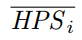 is computed by dividing the expected total hash operations with the duration Li
Now we apply the dampening filter:
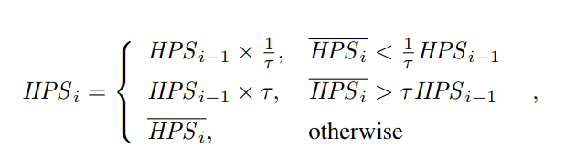
where HPSi1 denotes the adjusted hash rate estimation output by the last iteration of the difficulty adjustment algorithm. The dampening factor ensures that the adjusted hash rate estimation does not change more than a factor of between two consecutive epochs. This adjustment is equivalent to the Nakamoto Consensus application of a dampening filter. Bounding the adjustment speed prevents the attacker from arbitrarily biasing the difficulty and forging a blockchain, even if some victims network is temporarily controlled by the attacker.
Modeling Block Propagation
It is difficult, if not impossible, to model the detailed block propagation procedure, given that the network topology changes constantly over time. Luckily, for our purpose, it is adequate to express the influence of block propagation with two parameters, which will be used to compute Ci+1,m later.
We assume all blocks follow a similar propagation model, in line with [1, 2]. In the last epoch, it takes d seconds for a block to be propagated to the entire network, and during this process, the average fraction of mining power working on the blocks parent is p. Therefore, during this d seconds, HPSi dp hash operations work on the parent, thus not contributing to extending the blockchain, while the rest HPSi d(1 p) hashes work on the new block. Consequently, in the last epoch, the total number of hashes that do not extend the blockchain is HPSi dp Ci,m. If some of these hashes lead to a block, one of the competing blocks will be orphaned. The number of hash operations working on observed orphaned blocks is HSpace/Ti Ci,o. If we ignore the rare event that more than two competing blocks are found at the same height, we have:
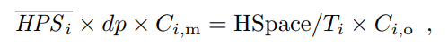
namely
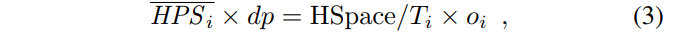
If we join this equation with Equation (2), we can solve for dp:

where oi is last epochs orphan rate.
Computing the Next Epochs Main Chain Block Number
If the next epochs block propagation proceeds identically to the last epoch, the value dp should remain unchanged. In order to achieve the ideal orphan rate oideal and the ideal epoch duration Lideal, following the same reasoning with Equation (4). We should have:
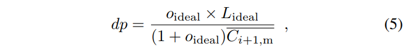
where  is the number of main chain blocks in the next epoch, if our only goal is to achieve oideal and Lideal .
is the number of main chain blocks in the next epoch, if our only goal is to achieve oideal and Lideal .
By joining Equation (4) and (5), we can solve for :
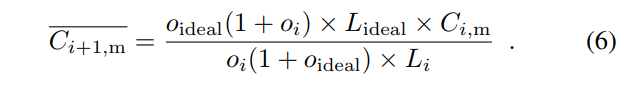
Now we can apply the upper and lower bounds to and get Ci+1,m:
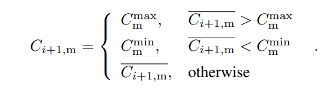
Applying a lower bound ensures that an attacker cannot mine orphaned blocks deliberately to arbitrarily increase the block interval; applying an upper bound ensures that our protocol does not confirm more transactions than the capacity of most nodes.
Determining the Target Difficulty
First, we introduce an adjusted orphan rate estimation 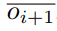, which will be used to compute the target:
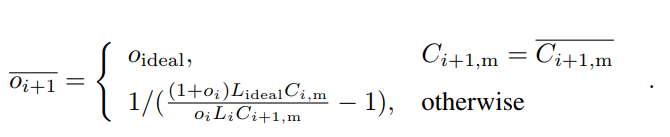
Using instead of oideal prevents some undesirable situations when the main chain block number reaches the upper or lower bound. Now we can compute Ti+1:

where  is the total hashes,
is the total hashes,  is the total number of blocks.
is the total number of blocks.
The denominator in Equation (7) is the number of hashes required to find a block.
Note that if none of the edge cases are triggered, such as 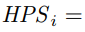 or
or  , we can combine Equations (2), (6), and (7) and get:
, we can combine Equations (2), (6), and (7) and get:

This result is consistent with our intuition. On one hand, if the last epochs orphan rate oi is larger than the ideal value oideal, the target lowers, thus increasing the difficulty of finding a block and raising the block interval if the total hash rate is unchanged. Therefore, the orphan rate is lowered as it is more unlikely to find a block during another blocks propagation. On the other hand, the target increases if the last epochs orphan rate is lower than the ideal value, decreasing the block interval and raising the systems throughput.
Computing the Reward for Each Block
Now we can compute the reward for each block:
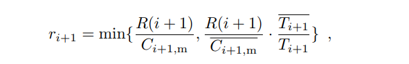
The two cases differ only in the edge cases. The first case guarantees that the total reward issued in epoch i + 1 will not exceed R(i + 1).
Number: "0021"
Category: Standards Track
Status: Proposal
Author: Cipher Wang
Organization: Nervos Foundation
Created: 2019-01-20
CKB Address Format
Abstract
CKB Address Format is an application level cell lock script display recommendation. The lock script consists of three key parameters, including code_hash, hash_type and args. CKB address packages lock script into a single line, verifiable, and human read friendly format.
Data Structure
Payload Format Types
To generate a CKB address, we firstly encode lock script to bytes array, name payload. And secondly, we wrap the payload into final address format.
There are several methods to convert lock script into payload bytes array. We use 1 byte to identify the payload format.
| format type | description |
|---|---|
| 0x01 | short version for locks with popular code_hash |
| 0x02 | full version with hash_type = "Data" |
| 0x04 | full version with hash_type = "Type" |
Short Payload Format
Short payload format is a compact format which identifies common used code_hash by 1 byte code_hash_index instead of 32 bytes code_hash.
payload = 0x01 | code_hash_index | args
To translate payload to lock script, one can convert code_hash_index to code_hash and hash_type with the following popular code_hash table. And args as the args.
| code_hash_index | code_hash | hash_type | args |
|---|---|---|---|
| 0x00 | SECP256K1 + blake160 | Type | blake160(PK)* |
| 0x01 | SECP256K1 + multisig | Type | multisig script hash** |
| 0x02 | anyone_can_pay | Type | blake160(PK) |
* The blake160 here means the leading 20 bytes truncation of Blake2b hash result.
** The multisig script hash is the 20 bytes blake160 hash of multisig script. The multisig script should be assembled in the following format:
S | R | M | N | blake160(Pubkey1) | blake160(Pubkey2) | ...
Where S/R/M/N are four single byte unsigned integers, ranging from 0 to 255, and blake160(Pubkey1) it the first 160bit blake2b hash of SECP256K1 compressed public keys. S is format version, currently fixed to 0. M/N means the user must provide M of N signatures to unlock the cell. And R means the provided signatures at least match the first R items of the Pubkey list.
For example, Alice, Bob, and Cipher collectively control a multisig locked cell. They define the unlock rule like "any two of us can unlock the cell, but Cipher must approve". The corresponding multisig script is:
0 | 1 | 2 | 3 | Pk_Cipher_h | Pk_Alice_h | Pk_Bob_h
Full Payload Format
Full payload format directly encodes all data field of lock script.
payload = 0x02/0x04 | code_hash | args
The first byte identifies the lock script's hash_type, 0x02 for "Data", 0x04 for "Type".
Wrap to Address
We follow Bitcoin base32 address format (BIP-173) rules to wrap payload into address, which uses Bech32 encoding and a BCH checksum.
The original version of Bech32 allows at most 90 characters long. Similar with BOLT, we simply remove the length limit. The error correction function is disabled when the Bech32 string is longer than 90. We don't intent to use this function anyway, because there is a risk to get wrong correction result.
A Bech32 string consists of the human-readable part, the separator, and the data part. The last 6 characters of data part is checksum. The data part is base32 encoded. Here is the readable translation of base32 encoding table.
| 0 | 1 | 2 | 3 | 4 | 5 | 6 | 7 | |
|---|---|---|---|---|---|---|---|---|
| +0 | q | p | z | r | y | 9 | x | 8 |
| +8 | g | f | 2 | t | v | d | w | 0 |
| +16 | s | 3 | j | n | 5 | 4 | k | h |
| +24 | c | e | 6 | m | u | a | 7 | l |
The human-readable part is "ckb" for CKB mainnet, and "ckt" for the testnet. The separator is always "1".

Examples and Demo Code
== short address (code_hash_index = 0x00) test ==
args to encode: b39bbc0b3673c7d36450bc14cfcdad2d559c6c64
address generated: ckb1qyqt8xaupvm8837nv3gtc9x0ekkj64vud3jqfwyw5v
== short address (code_hash_index = 0x01) test ==
multi sign script: 00 | 01 | 02 | 03 | bd07d9f32bce34d27152a6a0391d324f79aab854 | 094ee28566dff02a012a66505822a2fd67d668fb | 4643c241e59e81b7876527ebff23dfb24cf16482
args to encode: 4fb2be2e5d0c1a3b8694f832350a33c1685d477a
address generated: ckb1qyq5lv479ewscx3ms620sv34pgeuz6zagaaqklhtgg
== full address test ==
code_hash to encode: 9bd7e06f3ecf4be0f2fcd2188b23f1b9fcc88e5d4b65a8637b17723bbda3cce8
with args to encode: b39bbc0b3673c7d36450bc14cfcdad2d559c6c64
full address generated: ckb1qjda0cr08m85hc8jlnfp3zer7xulejywt49kt2rr0vthywaa50xw3vumhs9nvu786dj9p0q5elx66t24n3kxgj53qks
Demo code: https://github.com/CipherWang/ckb-address-demo
Number: "0022"
Category: Informational
Status: Draft
Author: Ian Yang
Organization: Nervos Foundation
Created: 2019-08-26
CKB Transaction Structure
This RFC is about an essential data structure in CKB, the transaction. CKB is under active development. At the time of writing, the corresponding CKB version is v0.25.0.
The document contains two parts. The first one covers the core transaction features, and the second one introduces some extensions.

The diagram above is an overview of the transaction structure. Instead of explaining field by field, the following paragraphs introduce various features which the CKB transaction provides and how the fields play their roles in these features.
TOC
Part I: Core Features
Value Storage
CKB adopts UTXO model. A transaction destroys some outputs created in previous transactions and creates some new outputs. We call the transaction output a cell in CKB. Thus the name cell and transaction output are interchangeable.
The following diagram shows the fields used in this layer.
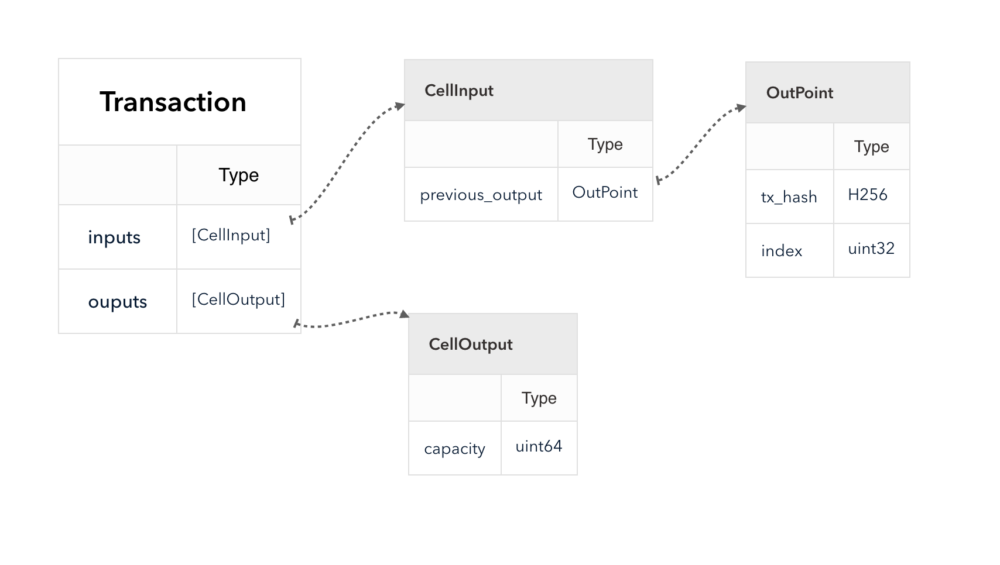
The transaction destroys the cells in inputs and creates the cells in outputs.
The CKB chain packages transactions into blocks. We can use block number to refer to a block in the chain, which is an increasing non-negative integer starting from 0, the genesis block. The transactions in a block are also ordered. We say a block is older if it has a smaller block number, a transaction is older if either it is in an older block, or its position in a block is before another transaction. In the following example, Block i is older than Block i + 1. Transaction tx1 is older than tx2 and is older than tx3.

A live cell is the one that appears as an output but not as an input in all the older transactions. A dead cell has already been used as an input in any older transaction. A transaction can only use live cells as inputs.
We can compute the transaction hash from all transaction fields except witnesses. See Appendix A how to calculate the transaction hash.
The transaction hash is considered unique. Since cell is always created by a transaction, and every new cell has its position in the transaction outputs array, we can refer to a cell by transaction hash and outputs index. The structure OutPoint is just such reference type. The transaction uses OutPoint in inputs to reference the previously created cells instead of embedding them.
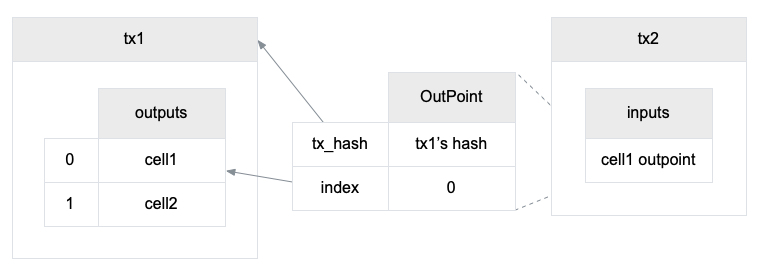
The cell stores the CKB Token in the field capacity. A transaction cannot mint capacities from the air, so a transaction must meet the following rule:
sum(cell's capacity for each cell in inputs)
sum(cell's capacity for each cell in outputs)
Miners can collect the difference as a fee.
fee = sum(cell's capacity for each cell in inputs)
- sum(cell's capacity for each cell in outputs)
If you are familiar with Bitcoin, you'll find out that the Value Storage layer is similar to Bitcoin, but lacking the locking script to protect the transaction output ownership. CKB does have that feature, but before that, I have to introduce Cell Data and Code Locating layer, which are the dependencies of any scripting feature in CKB.
Cell Data
Instead of holding only the token value, CKB cell can store arbitrary data as well.

The field outputs_data is a parallel array of outputs. The data of the i-th cell in outputs is the i-th item in outputs_data.

The capacity in the cell is not only just the amount of the stored tokens, but it is also a limit on how many data the cell can store. That's where the name comes from, It is the storage capacity of the cell.
The capacity is not only used to store data but it also has to cover all the fields in the cell, including data, lock, type, and capacity itself.
The specification to compute occupied capacity will have its RFC in the future, which is still a draft now.
The transaction must create an output cell which occupied capacity is less than the cell capacity.
occupied(cell) cell's capacity
Code Locating
The cell has two fields which type is Script. The CKB VM will run the lock scripts of all the cells in inputs, and run the type scripts of all the cells in both inputs and outputs.
We differentiate the terms script and code.
- A script is the script structure.
- The code is the RISC-V binary.
- A code cell is cell which data is code.
The script does not include the code directly. See the script structure below. Let's ignore the hash type Type and the field args now.
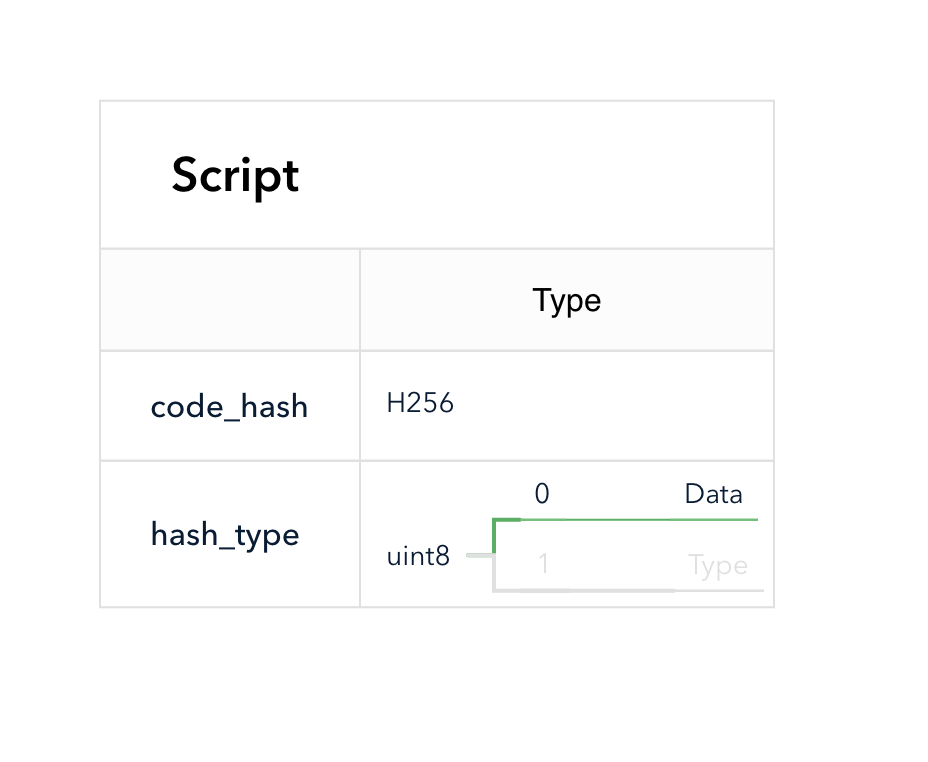
When a CKB VM needs to run a script, it must find its code first. The fields code_hash and hash_type are used to locate the code.
In CKB, the script code is compiled into RISC-V binary. The binary is stored as the data in a cell. When hash_type is "Data", the script locates a cell which data hash equals the script's code_hash. The cell data hash, as the name suggests, is computed from the cell data (see Appendix A). The scope is limited in the transaction, script can only find a matched cell from cell_deps.

The following diagram shows how CKB finds a matched script code.

If you want to use a script in CKB, follow the code locating rules:
- Compile your code into RISC-V binary. You can find some examples in the repository which builds the code for system cells.
- Create a cell which stores the binary as data in a transaction, and send the transaction to the chain.
- Construct a script structure, which
hash_typeis "Data", andcode_hashis just the hash of the built binary. - Use the script as the type or the lock script in a cell.
- If the script has to run in a transaction, include the code cell's out point in the
cell_deps.
The cells in cell_deps must be live, just like inputs. Unlike inputs, a cell only used in cell_deps is not considered dead.
The following two chapters will talk about how the script is used in a transaction to lock the cells and establish contracts on cells.
Lock Script
Every cell has a lock script. The lock script must run when the cell is used as an input in a transaction. When the script only appears in the outputs, it is not required to reveal the corresponding code in cell_deps. A transaction is valid only when all the lock scripts in the inputs exit normally. Since the script runs on inputs, it acts as the lock to control who can unlock and destroy the cell, as well as spend the capacity stored in the cell.

Following is an example lock script code which always exits normally. Anyone can destroy the cell if it uses the code as the lock script.
int main(int argc, char *argv[]) {
return 0;
}
The most popular way to lock a digital asset is the digital signature created by asymmetric cryptography.
The signature algorithm has two requirements:
- The cell must contain the information of the public key, so only the real private key can create a valid signature.
- The transaction must contain the signatures, which usually signs the whole transaction as the message.
In CKB, the public key fingerprint can be stored in the args field in the script structure, and the signature can be stored in the witnesses fields in transaction. I use "can" because it is just a convention and the recommended way, and is used in the default secp256k1 lock script. The script code is able to read any part of a transaction, so the lock script can choose a different convention, for example, storing the public key information in the cell data. However, if all the lock scripts follow the recommended convention, it can simplify the apps which create transactions, such as a wallet.

Now let's see how the script code is located and loaded, and how the code accesses inputs, script args, and witnesses.
First, pay attention that, CKB does not run the lock script input by input. It first groups the inputs by lock script and runs the same script only once. CKB runs a script in 3 steps: script grouping, code locating and running.

The diagram above shows the first two steps.
- First, CKB groups inputs by lock script. In the example transaction, there are two different lock scripts used in inputs. Although they locate to the same code, they have different args. Let's focus on g1. It has two inputs with index 0 and 2. The script and the input indices will be used in step 3 later.
- Then CKB locates the code from cell deps. It resolves to the cell with data hash
Hsand will use its data as the code.
Now CKB can load the script code binary and run the code starting from the entry function. The script can read itself via syscall ckb_load_script.
ckb_load_script(addr, len, offset)
Various CKB syscalls are designed to read data from the transaction. These syscalls have an argument to specify where to read the data. For example, to load the first witness:
ckb_load_witness(addr, len, offset, 0, CKB_SOURCE_INPUT);
The first three arguments control where to store the read data and how many bytes to read. Let's ignore them in the following paragraphs.
The fifth argument is the data source. CKB_SOURCE_INPUT means reading from transaction inputs, and the fourth argument 0 is the index into the inputs array. CKB_SOURCE_INPUT is also used to read witnesses.
Remember that we have saved the indices of the input when grouping inputs by the lock script. This info is used to create the virtual witnesses and inputs array for the group. The code can read input or witness using the index in the virtual array via a special source CKB_SOURCE_GROUP_INPUT. Reading a witness using CKB_SOURCE_GROUP_INPUT just reads the witnesses which has the same position with the specified input.
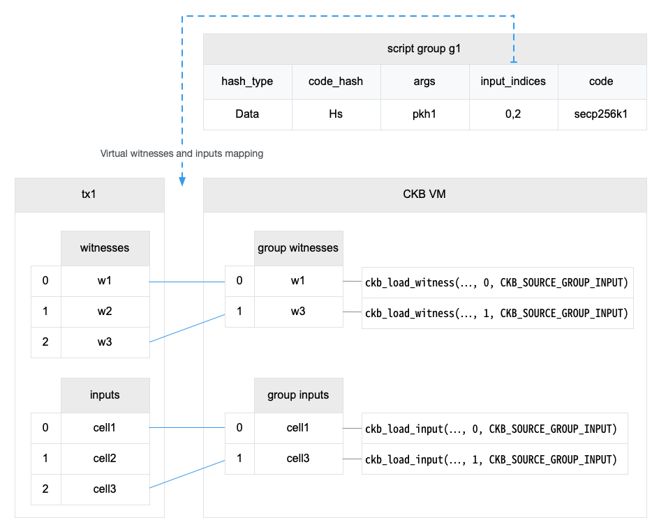
All the syscalls that read data related to the input, can use CKB_SOURCE_GROUP_INPUT and the index in the virtual inputs array, such as ckb_load_cell_* syscalls family.
Type Script
Type script is very similar to lock script, with two differences:
- Type script is optional.
- In a transaction, CKB must run the type scripts in both inputs and outputs.
Although we can only keep only one type of script in the cell, we don't want to mess the different responsibilities in a single script.
The lock script is only executed for inputs, so its primary responsibility is protecting the cells. Only the owner is allowed to use the cell as input and spend the token stored along with it.
The type script is intended to establish some contracts on the cells. When you get a cell with a specified type, you can ensure that the cell has passed the verification in the specific code. And the code is also executed when the cell is destroyed. A typical scenario of type script is user-defined token. The type script must run on outputs, so the token issuance must be authorized.
Running type script on inputs is very important for contracts, for example, a contract to let user mortgage some amount of CKB tokens to rent an asset offline. If the type script does not run on inputs, the user can get back the CKB tokens without authority from the contract by merely destroying the cells and transfer the capacity to a new cell without type script.
The steps to run type script is also similar to lock script. Except that
- Cells without a type script are ignored.
- The script group contains both inputs and outputs.

Like CKB_SOURCE_GROUP_INPUT, there's a special data source CKB_SOURCE_GROUP_OUTPUT to use the index into the virtual outputs array in the script group.
Recap of The Transaction Structure in Part I
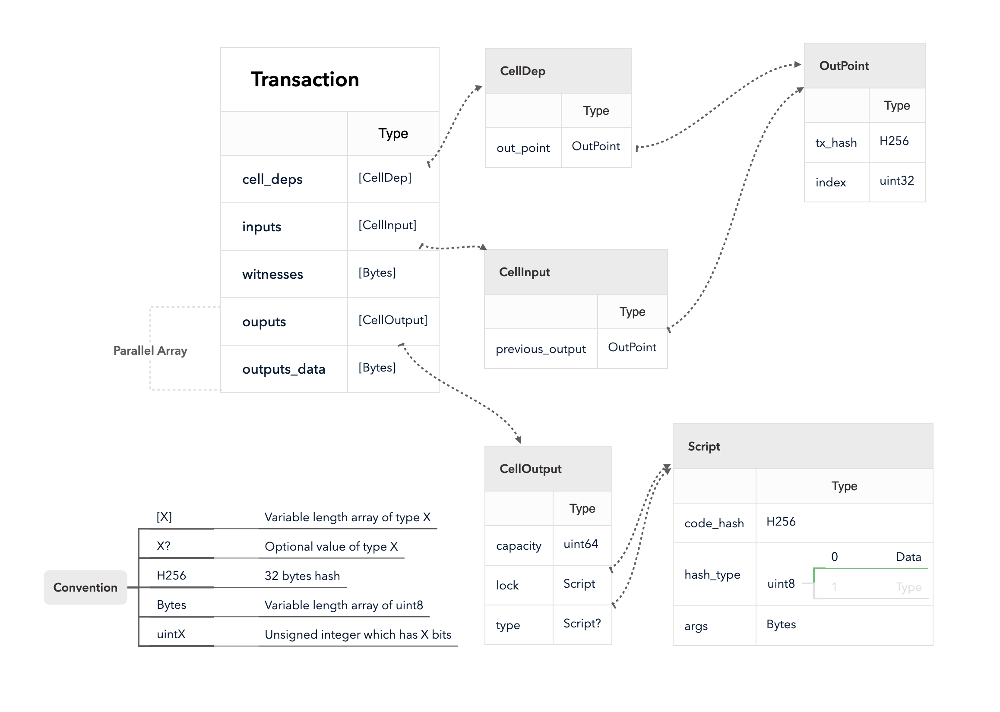
Part II: Extensions
In part I, I have introduced the core features which the transaction provides. The features introduced in this part are some extensions that CKB can work without them, but these extensions will make the cell model better.
The diagram below is the overview of the new fields covered in this part.

Dep Group
Dep Group is a cell which bundles several cells as its members. When a dep group cell is used in cell_deps, it has the same effect as adding all its members into cell_deps.
Dep Group stores the serialized list of OutPoint in cell data. Each OutPoint points to one of the group members.
The structure CellDep has a field dep_type to differentiate the normal cells which provide the code directly, and the dep groups which is expanded to its members inside cell_deps.

The dep group is expanded before locating and running code, in which only the expanded cell_deps are visible.
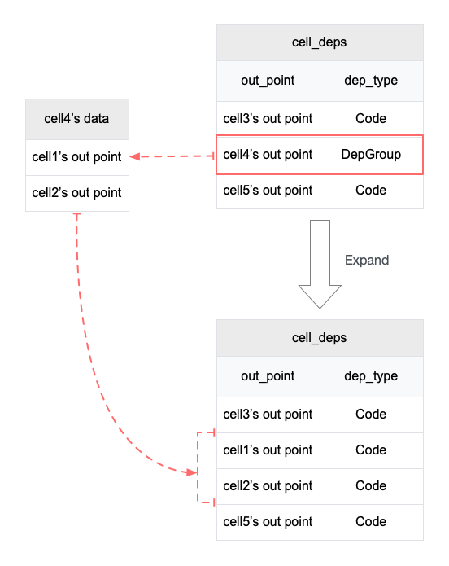
In v0.19.0, the lock script secp256k1 is split into code cell and data cell. The code cell loads the data cell via cell_deps. So if a transaction needs to unlock a cell locked by secp256k1, it must add both cells in cell_deps. With dep group, the transaction only needs the dep group.
There are two reasons why we split the secp256k1 cell.
- The code cell is small, which allows us to update it when the block size limit is low.
- The data cell can be shared. For example, we have implemented another lock script which uses ripemd160 to verify the public key hash. This script reuses the data cell.
Upgradable Script
In the chapter Lock Script in Part I, I have described how a script locates its code via cell data hash. Once a cell is created, its associated script code cannot change, since it is known infeasible to find a different piece of code that has the same hash.
Script has another option for hash_type, Type.
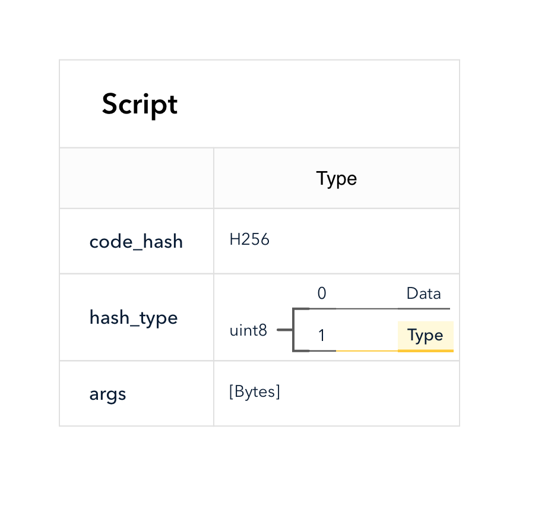
When the script uses the hash type Type, it matches the cell which type script hash equals the code_hash. The type script hash is computed from the cell type field (see Appendix A).

Now it is possible to upgrade code if the cell uses a script which locates code via type script hash by creating a new cell with the same type script. The new cell has the updated code. The transaction which adds the new cell in dep_cells will use the new version.
However, this only solves one problem that the script can refer to different versions of code. It is not safe if an adversary can create a cell with the same type script but using the forged code as the data. The adversary can bypass the script verification by using the fake cell as a dep. The following chapter will describe a script to solve the second problem.
Because the code referenced by type script hash can change, you must trust the script author to use such kind of type scripts. Although which version is used depends on which cell is added in the transaction in dep_cells, user can always inspect the code before signing the transaction. But if the script is used to unlock a cell, even the signature checking can be skipped.
Type ID
There's a reason we choose cell type script hash to support upgradable script. If the adversary wants to create a cell with a specific type script, the transaction must be verified by the type script code.
Type ID is such a kind of type script. As the name suggests, it ensures the uniqueness of the type script.
This feature involves several type scripts, so I have to use different terms to differentiate them:
- The Type ID code cell is the cell which stores the code to verify that a type id is unique.
- The Type ID code cell has a type script as well. We don't care the actual content for now, let's assume the type script hash is TI.
- A Type ID is a type script which
hash_typeis "Type", andcode_hashis TI.

In the chapter Type Script in Part I, we know that type script groups inputs and outputs first. In other words, if the type script is a type ID, the inputs and outputs in the group all have the same type ID.
The Type ID code verifies that, in any type id group, there is at most one input and at most one output. But a transaction is allowed to have multiple type id groups. Depends on the numbers of inputs and outputs, the type id groups are categorized into three different types:
- Type ID Creation Group has only one output.
- Type ID Deletion Group has only one input.
- Type ID Transfer Group has one input and one output.
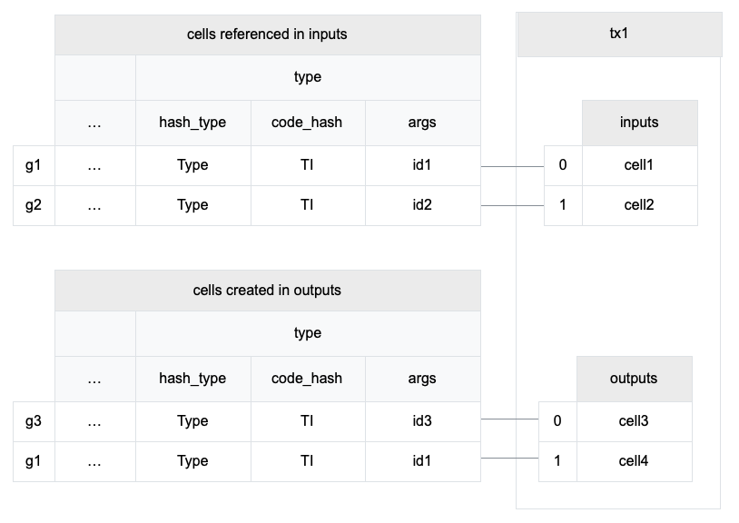
The transaction in the diagram above has all the three kinds of type id group.
- G1 is a Type ID Transfer Group which transfers the type id from cell1 to cell4.
- G2 is a Type ID Deletion Group which deletes the type id along with cell2.
- G3 is a Type ID Creation Group which creates a new type id for cell3.
In the Type ID Creation Group, the only argument in args is the hash of this transaction first CellInput structure and the output index of the cell in the group. For example, in the group g3, id3 is a hash on tx.inputs[0] and 0 (cell3's index in tx.outputs).
There are two ways to create a new cell with a specific type id.
- Create a transaction where the hash of
tx.inputs[0]and any index equal to a specific value. Since a cell can only be used as an input once in the chain,tx.inputs[0]must different in each transaction, so this problem is equivalent to find out a hash collision, which probability is negligible. - Destroy the old cell in the same transaction.
We assume that method 2 is the only way to create a cell which equals to an existing type id. And this way requires the authorization of the original owner.
The Type ID code can be implemented via only CKB VM code, but we choose to implement it in the CKB node as a special system script. Because if we want to be able to upgrade Type ID code itself later, it has to use itself as the type script via type script hash, which is a recursive dependency.

The Type ID code cell uses a special type script hash, which is just the ascii codes in hex of the text TYPE_ID.
0x00000000000000000000000000000000000000000000000000545950455f4944
Header Deps
Header Deps allows the script to read block headers. This feature has some limitation to ensure the transaction is determined.
We say a transaction is determined that if all the scripts in the transaction have the determined results.
Header Deps allows the scripts to read a block header which hashes are listed in header_deps. There's another precondition that the transaction can only be added to the chain if all the block listed in header_deps are already in the chain (uncles excluded).
There are two ways to load a header in a script using syscall ckb_load_header:
- Via header deps index.
- Via an input or a cell dep. The syscall will return the block in which the cell is created if that block is listed in
header_deps.
The second way to load a header has another benefit that the script knows the cell is in the loaded block. DAO withdraw transaction uses it to get the block number where the capacity was deposited.

Here are some examples of loading header In the diagram above.
// Load the first block in header_deps, the block Hi
load_header(..., 0, CKB_SOURCE_HEADER_DEP);
// Load the second block in header_deps, the block Hj
load_header(..., 1, CKB_SOURCE_HEADER_DEP);
// Load the block in which the first input is created, the block Hi
load_header(..., 0, CKB_SOURCE_INPUT);
// Load the block in which the second input is created.
// Since the block creating cell2 is not in header_deps, this call loads nothing.
load_header(..., 1, CKB_SOURCE_INPUT);
Other Fields
The field since prevents a transaction been mined before a specific time. It already has its own RFC.
The field version is reserved for future usage. It must equal 0 in current version.
Exceptions
There are two special transactions in the system.
The first one is the cellbase, which is the first transaction in every block. The cellbase transaction has only one dummy input. In the dummy input, the previous_outpoint does not refer to any cell but set to a special value. The since must be set to the block number.
The outputs of the cellbase are the reward and transaction fees for an older block in the chain.
Cellbase is special because the output capacities do not come from inputs.
Another special transaction is the DAO withdraw transaction. It also has a portion of output capacities that do not come from inputs. This portion is the interest by locking the cells in the DAO. CKB recognizes the DAO withdraw transaction by check whether there's any input uses DAO as the type script.
Appendix A: Compute Various Hash
Crypto Primitives
ckbhash
CKB uses blake2b as the default hash algorithm. We use ckbhash to denote the blake2b hash function with following configuration:
- output digest size: 32
- personalization: ckb-default-hash
Transaction Hash
Transaction hash is ckbhash(molecule_encode(tx_excluding_witness)) where
molecule_encodeserializes a structure into binary using molecule.tx_excluding_witnessis the transaction structure excluding the witness field. See the definitionRawTransactionin the schema file.
Cell Data Hash
Cell data hash is just ckbhash(data).
Script Hash
Script hash is ckbhash(molecule_encode(script)) where molecule_encode turns the script structure into a block of binary via molecule. See the definition Script in the schema file.
Number: "0023"
Category: Standards Track
Status: Proposal
Author: Jan Xie, Xuejie Xiao, Ian Yang
Organization: Nervos Foundation
Created: 2019-10-30
Deposit and Withdraw in Nervos DAO
Abstract
This document describes deposit and withdraw transaction in Nervos DAO.
Note: a Common Gotchas page is maintained at here, including common and very important points you should be aware to use Nervos DAO well without losing CKBs. Please pay attention to this page even if you might want to skip some parts of this RFC.
Motivation
Nervos DAO is a smart contract, with which users can interact the same way as any smart contract on CKB. One function of Nervos DAO is to provide an dilution counter-measure for CKByte holders. By deposit in Nervos DAO, holders get proportional secondary rewards, which guarantee their holding are only affected by hardcapped primary issuance as in Bitcoin.
Holders can deposit their CKBytes into Nervos DAO at any time. Nervos DAO deposit is a time deposit with a minimum deposit period (counted in blocks). Holders can only withdraw after a full deposit period. If the holder does not withdraw at the end of the deposit period, those CKBytes should enter a new deposit period automatically, so holders' interaction with CKB could be minimized.
Background
CKB's token issuance curve consists of two components:
- Primary issuance: Hardcapped issuance for miners, using the same issuance curve as Bitcoin, half at every 4 years.
- Secondary issuance: Constant issuance, the same amount of CKBytes will be issued at every epoch, which means secondary issuance rate approaches zero gradually over time. Because epoch length is dynamically adjusted, secondary issuance at every block is a variable.
If there's only primary issuance but no secondary issuance in CKB, the total supply of CKBytes would have a hardcap and the issuance curve would be the exact same as Bitcoin. To counter the dilution effect caused by secondary issuance, CKBytes locked in Nervos DAO will get the proportion of secondary issuance equals to the locked CKByte's percentage in circulation.
For more information of Nervos DAO and CKB's economic model, please check Nervos RFC #0015.
Deposit
Users can send a transaction to deposit CKBytes into Nervos DAO at any time. CKB includes a special Nervos DAO type script in the genesis block. To deposit to Nervos DAO, one simply needs to create any transaction containing new output cell with the following requirements:
- The type script of the created output cell must be set to the Nervos DAO script.
- The output cell must have 8 byte length cell data, filled with all zeros.
For convenience, a cell satisfying the above conditions will be called a Nervos DAO deposit cell. To obey CKB's script validation logic, one also needs to include a reference to Nervos DAO type script in the cell_deps part of the enclosing transaction. Notice there's no limit on the number of deposits completed in one transaction, more than one Nervos DAO deposit cell can be created in a single valid transaction.
Withdraw
Users can send a transaction to withdraw deposited CKBytes from Nervos DAO at any time(but a locking period will be applied to determine when exactly the tokens can be withdrawed). The compensation gained by a Nervos DAO cell will only be issued in the withdraw phase, this means for a transaction including Nervos DAO withdraw, the sum of capacities from all output cells might exceed the sum of capacities from all input cells. Unlike the deposit, withdraw is a 2-phase process:
- In phase 1, the first transaction transforms a
Nervos DAO deposit cellinto aNervos DAO withdrawing cell. - In phase 2, a second transaction will be used to withdraw tokens from Nervos DAO withdrawing cell.
Withdraw Phase 1
Phase 1 is used to transform Nervos DAO deposit cell into Nervos DAO withdrawing cell, the purpose here, is to determine the duration a cell has been deposited into Nervos DAO. Once phase 1 transaction is included in CKB blockchain, the duration betwen Nervos DAO deposit cell and Nervos DAO withdrawing cell can then be used to calculate compensation, as well as remaining lock period of the deposited tokens.
A phase 1 transaction should satisfying the following conditions:
- One or more Nervos DAO deposit cells should be included in the transaction as inputs.
- For each Nervos DAO deposit cell, the transaction should also include reference to its associated including block in
header_deps, which will be used by Nervos DAO type script as the starting point of deposit. - For a Nervos DAO deposit cell at input index
i, a Nervos DAO withdrawing cell should be created at output indexiwith the following requirements:- The withdrawing cell should have the same lock script as the deposit cell
- The withdrawing cell should have the same Nervos DAO type script as the deposit cell
- The withdrawing cell should have the same capacity as the deposit cell
- The withdrawing cell should also have 8 byte length cell data, but instead of 8 zero, the cell data part should store the block number of the deposit cell's including block. The number should be packed in 64-bit unsigned little endian integer format.
- The Nervos DAO type script should be included in the
cell_depsof withdraw transaction.
Once this transaction is included in CKB, the user can start preparing phase 2 transaction.
Withdraw Phase 2
Phase 2 transaction is used to withdraw deposited tokens together with compensation from Nervos DAO. Notice unlike phase 1 transaction which can be sent at any time the user wish, the assembled phase 2 transaction here, will have a since field set to fulfill lock period requirements, so it might be possible that one can only generate a transaction first, but has to wait for some time before he/she can send the transaction to CKB.
A phase 2 transaction should satisfying the following conditions:
- One or more Nervos DAO withdrawing cells should be included in the transaction as inputs.
- For each Nervos DAO withdrawing cell, the transaction should also include the reference to its associated including block in
header_deps, which will be used by Nervos DAO type script as the end point of deposit. - For a Nervos DAO withdrawing cell at input index
i, the user should locate the deposit block header, meaning the block header in which the original Nervos DAO deposit cell is included. With the deposit block header, 2 operations are required:- The deposit block header hash should be included in
header_depsof current transaction - The index of the deposit block header hash in
header_depsshould be kept using 64-bit unsigned little endian integer format in the part belonging to input cell's type script of corresponding witness at indexi. A separate RFC would explain current argument organization in the witness. An example will also show this process in details below.
- The deposit block header hash should be included in
- For a Nervos DAO withdrawing cell, the
sincefield in the cell input should reflect the Nervos DAO cell's lock period requirement, which is 180 epoches. For example, if one deposits into Nervos DAO at epoch 5, he/she can only expect to withdraw Nervos DAO at epoch 185, 365, 545, etc. Notice the calculation of lock period is independent of the calculation of compensation. It's totally valid to deposit at epoch 5, use awithdraw blockat epoch 100, and use asincefield at 185. Please refer to the since RFC on how to represent valid epoch numbers, Nervos DAO type script only accepts absolute epoch numbers as since values now. - The compensation calculation logic is totally separate from the lock period calculation logic, we will explain the compensation calculation logic in the next section.
- The Nervos DAO type script requires the sum of all input cells' capacities plus compensation is larger or equaled to the sum of all output cells' capacities.
- The Nervos DAO type script should be included in the
cell_deps.
As hinted in the above steps, it's perfectly possible to do multiple withdraws in one transaction. What's more, Nervos DAO doesn't limit the purpose of withdrawed tokens, it's also valid to deposit the newly withdrawed tokens again to Nervos DAO right away in the same transaction. In fact, one transaction can be used to freely mix all the following actions together:
- Deposit tokens into Nervos DAO.
- Transform some Nervos DAO deposit cells to Nervos DAO withdrawing cells.
- Withdraw from other Nervos DAO withdrawing cells.
Calculation
This section explains the calculation of Nervos DAO compensation and relevant fields in the CKB block header.
CKB's block header has a special field named dao containing auxiliary information for Nervos DAO's use. Specifically, the following data are packed in a 32-byte dao field in the following order:
C_i: the total issuance up to and including blocki.AR_i: the currentaccumulated rateat blocki.AR_j / AR_ireflects the CKByte amount if one deposit 1 CKB to Nervos DAO at blocki, and withdraw at blockj.S_i: the total unissued secondary issuance up to and including blocki, including unclaimed Nervos DAO compensation and treasury funds.U_i: the totaloccupied capacitiescurrently in the blockchain up to and including blocki. Occupied capacity is the sum of capacities used to store all cells.
Each of the 4 values is stored as unsigned 64-bit little endian number in the dao field. To maintain enough precision AR_i is stored as the original value multiplied by 10 ** 16 .
For a single block i, it's easy to calculate the following values:
p_i: primary issuance for blockis_i: secondary issuance for blockiU_{in,i}: occupied capacities for all input cells in blockiU_{out,i}: occupied capacities for all output cells in blockiC_{in,i}: total capacities for all input cells in blockiC_{out,i}: total capacities for all output cells in blockiI_i: total withdrawed Nervos DAO compensation in blocki(not includes withdrawing compensation)
In genesis block, the values are defined as follows:
C_0:C_{out,0}-C_{in,0}+p_0+s_0U_0:U_{out,0}-U_{in,0}S_0:s_0AR_0:10 ^ 16
Then from the genesis block, the values for each succeeding block can be calculated in an induction way:
C_i:C_{i-1}+p_i+s_iU_i:U_{i-1}+U_{out,i}-U_{in,i}S_i:S_{i-1}-I_i+s_i- floor(s_i*U_{i-1}/C_{i-1})AR_i:AR_{i-1}+ floor(AR_{i-1}*s_i/C_{i-1})
With those values, it's now possible to calculate the Nervos DAO compensation for a deposited cell. Assuming a Nervos DAO cell is deposited at block m (also meaning the Nervos DAO deposit cell is included at block m), the user chooses to start withdrawing process from block n (meaning the Nervos DAO withdrawing cell is included at block n), the total capacity for the Nervos DAO cell is c_t, the occupied capacity for the Nervos DAO cell is c_o. The Nervos DAO compensation is calculated with the following formula:
( c_t - c_o ) * AR_n / AR_m - ( c_t - c_o )
Meaning that the maximum total withdraw capacity one can get from this Nervos DAO input cell is:
( c_t - c_o ) * AR_n / AR_m + c_o
Example
The following type script represents the Nervos DAO script on CKB mainnet:
{
"code_hash": "0x82d76d1b75fe2fd9a27dfbaa65a039221a380d76c926f378d3f81cf3e7e13f2e",
"args": "0x",
"hash_type": "type"
}
And the following OutPoint refers to cell containing NervosDAO script:
{
"out_point": {
"tx_hash": "0xe2fb199810d49a4d8beec56718ba2593b665db9d52299a0f9e6e75416d73ff5c",
"index": "0x2"
},
"dep_type": "code"
}
The following transaction deposits 200 CKB into Nervos DAO:
{
"version": "0x0",
"cell_deps": [
{
"out_point": {
"tx_hash": "0x71a7ba8fc96349fea0ed3a5c47992e3b4084b031a42264a018e0072e8172e46c",
"index": "0x0"
},
"dep_type": "dep_group"
},
{
"out_point": {
"tx_hash": "0xe2fb199810d49a4d8beec56718ba2593b665db9d52299a0f9e6e75416d73ff5c",
"index": "0x2"
},
"dep_type": "code"
}
],
"header_deps": [],
"inputs": [
{
"previous_output": {
"tx_hash": "0xeb4644164c4dc64f195bb3b0c6e4f417e11519b1931e5f7177ff8008d96dbe83",
"index": "0x1"
},
"since": "0x0"
}
],
"outputs": [
{
"capacity": "0x2e90edd000",
"lock": {
"code_hash": "0x9bd7e06f3ecf4be0f2fcd2188b23f1b9fcc88e5d4b65a8637b17723bbda3cce8",
"args": "0xe5f99902495d04d9dcb013aefc96093d365b77dc",
"hash_type": "type"
},
"type": {
"code_hash": "0x82d76d1b75fe2fd9a27dfbaa65a039221a380d76c926f378d3f81cf3e7e13f2e",
"args": "0x",
"hash_type": "type"
}
},
{
"capacity": "0x101db898cb1",
"lock": {
"code_hash": "0x9bd7e06f3ecf4be0f2fcd2188b23f1b9fcc88e5d4b65a8637b17723bbda3cce8",
"args": "0x9776eaa16af9cd8b6a2d169ae95671b0bcb8b0c4",
"hash_type": "type"
},
"type": null
}
],
"outputs_data": [
"0x0000000000000000",
"0x"
],
"witnesses": [
"0x5500000010000000550000005500000041000000c22c72efb85da607ac48b220ad5b7132dc7abe50c3337c9a51e75102e8efaa5557e8b0567f9e0d9753016ebd52be3091bd55d4b87d7d4845f0d56ccf06e6ffe400"
],
"hash": "0x81c400a761b0b5f1d8b00d8939e5a729d21d25a08e14e54f0661cb4f6fc6fb81"
}
This transaction is actually committed in the following block:
{
"compact_target": "0x1a2158d9",
"hash": "0x37ef8cf2407044d74a71f927a7e3dcd3be7fc5e7af0925c0b685ae3bedeec3bc",
"number": "0x105f",
"parent_hash": "0x36990fe91a0ee3755fd6faaa2563349425b56319f06aa70d2846af47e3132262",
"nonce": "0x19759fb43000000000000000b28a9573",
"timestamp": "0x16e80172dbf",
"transactions_root": "0x66866dcfd5426b2bfeecb3cf4ff829d353364b847126b2e8d2ce8f8aecd28fb8",
"proposals_hash": "0x0000000000000000000000000000000000000000000000000000000000000000",
"uncles_hash": "0x0000000000000000000000000000000000000000000000000000000000000000",
"version": "0x0",
"epoch": "0x68d0288000002",
"dao": "0x8268d571c743a32ee1e547ea57872300989ceafa3e710000005d6a650b53ff06"
}
As mentioned above, dao field here contains 4 fields, AR is the second field in the list, extracting the little endian integer from offset 8 through offset 16, the current deposit AR is 10000435847357921, which is 1.0000435847357921 considering AR is stored with the original value multiplied by 10 ** 16 .
The following transaction, can then be used to start phase 1 of withdrawing process, which transforms Nervos DAO deposit cell to Nervos DAO withdrawing cell:
{
"version": "0x0",
"cell_deps": [
{
"out_point": {
"tx_hash": "0x71a7ba8fc96349fea0ed3a5c47992e3b4084b031a42264a018e0072e8172e46c",
"index": "0x0"
},
"dep_type": "dep_group"
},
{
"out_point": {
"tx_hash": "0xe2fb199810d49a4d8beec56718ba2593b665db9d52299a0f9e6e75416d73ff5c",
"index": "0x2"
},
"dep_type": "code"
}
],
"header_deps": [
"0x37ef8cf2407044d74a71f927a7e3dcd3be7fc5e7af0925c0b685ae3bedeec3bc"
],
"inputs": [
{
"previous_output": {
"tx_hash": "0x81c400a761b0b5f1d8b00d8939e5a729d21d25a08e14e54f0661cb4f6fc6fb81",
"index": "0x0"
},
"since": "0x0"
},
{
"previous_output": {
"tx_hash": "0x043639b6aedcd0d897583e3d056e5a9c4875538533733818aca31fbeabfd5fba",
"index": "0x1"
},
"since": "0x0"
}
],
"outputs": [
{
"capacity": "0x2e90edd000",
"lock": {
"code_hash": "0x9bd7e06f3ecf4be0f2fcd2188b23f1b9fcc88e5d4b65a8637b17723bbda3cce8",
"args": "0xe5f99902495d04d9dcb013aefc96093d365b77dc",
"hash_type": "type"
},
"type": {
"code_hash": "0x82d76d1b75fe2fd9a27dfbaa65a039221a380d76c926f378d3f81cf3e7e13f2e",
"args": "0x",
"hash_type": "type"
}
},
{
"capacity": "0x179411d65",
"lock": {
"code_hash": "0x9bd7e06f3ecf4be0f2fcd2188b23f1b9fcc88e5d4b65a8637b17723bbda3cce8",
"args": "0x5df75f10330a05ec9f862dec9bb37b5e11171475",
"hash_type": "type"
},
"type": null
}
],
"outputs_data": [
"0x5f10000000000000",
"0x"
],
"witnesses": [
"0x5500000010000000550000005500000041000000d952a9b844fc441529dd310e49907cc5eba009dcf0fcd7a5fb1394017c29b90b7c68e1d0db52c67d444accec4c04670d197630656837b33d07f0cbdd1f33907d01",
"0x5500000010000000550000005500000041000000d8e77676d57742b9b1e3a47e53f023ade294af5ca501f33406e992af01b1d0dd4a4f22d478c9497b184b04ea56c4ce71fccd9f0d4c25f503324edff5f2b26f0d00"
],
"hash": "0x9ab05d622dc6d9816f70094242740cca594e677009b88c3f2b367d8b32f928fd"
}
There're couple of important points worth mentioning in this transaction:
- The input Nervos DAO deposit cell is included in
0x37ef8cf2407044d74a71f927a7e3dcd3be7fc5e7af0925c0b685ae3bedeec3bcblock, hence it is included inheader_deps. - The including block number is
4191, which is0x5f10000000000000packed in 64-bit unsigned little endian integer number also in HEX format. - Looking at the above 2 transactions together, the output cell in this transaction has the same type and capacity as previous Nervos DAO deposit cell, while uses a different cell data.
Assume this transaction is included in the following block:
{
"compact_target": "0x1a2dfb48",
"hash": "0xba6eaa7e0acd0dc78072c5597ed464812391161f0560c35992ae0c96cd1d6073",
"number": "0x11ea4",
"parent_hash": "0x36f16c9a1abea1cb44bc1d923feb9f62ff45b9327188dca954968dfdecc03bd0",
"nonce": "0x74e39f370400000000000000bb4b3299",
"timestamp": "0x16ea78c300f",
"transactions_root": "0x4efccc5beeeae3847aa65f2e987947957d68f13687af069f52be361d0648feb8",
"proposals_hash": "0x0000000000000000000000000000000000000000000000000000000000000000",
"uncles_hash": "0x0000000000000000000000000000000000000000000000000000000000000000",
"version": "0x0",
"epoch": "0x645017e00002f",
"dao": "0x77a7c6ea619acb2e4b841a96c88e2300b6b274a096c1080000ea07db0efaff06"
}
The following phase 2 transaction can finally be used to withdraw tokens from Nervos DAO:
{
"version": "0x0",
"cell_deps": [
{
"out_point": {
"tx_hash": "0x71a7ba8fc96349fea0ed3a5c47992e3b4084b031a42264a018e0072e8172e46c",
"index": "0x0"
},
"dep_type": "dep_group"
},
{
"out_point": {
"tx_hash": "0xe2fb199810d49a4d8beec56718ba2593b665db9d52299a0f9e6e75416d73ff5c",
"index": "0x2"
},
"dep_type": "code"
}
],
"header_deps": [
"0x37ef8cf2407044d74a71f927a7e3dcd3be7fc5e7af0925c0b685ae3bedeec3bc",
"0xba6eaa7e0acd0dc78072c5597ed464812391161f0560c35992ae0c96cd1d6073"
],
"inputs": [
{
"previous_output": {
"tx_hash": "0x9ab05d622dc6d9816f70094242740cca594e677009b88c3f2b367d8b32f928fd",
"index": "0x0"
},
"since": "0x20068d02880000b6"
}
],
"outputs": [
{
"capacity": "0x2e9a2ed603",
"lock": {
"code_hash": "0x9bd7e06f3ecf4be0f2fcd2188b23f1b9fcc88e5d4b65a8637b17723bbda3cce8",
"args": "0x89e1914565e6fcc74e36d6c7bec4bdfa222b3a25",
"hash_type": "type"
},
"type": null
}
],
"outputs_data": [
"0x"
],
"witnesses": [
"0x61000000100000005500000061000000410000006114fee94f91ed089a32df9c3b0cda0ca1e1e97879d0aae253d0785fc6f7019b20cccbc7ea338ea96e64172f4a810ef531ab5ca1570a9742f0fb23378e260d9f01080000000000000000000000"
],
"hash": "0x1c375948bae003ef1a9e86e6b049199480987d7dcf96bdfa2a914ecd4dadd42b"
}
There're couple of important points worth mentioning in this transaction:
- The
header_depsin this transaction contains 2 headers:0x37ef8cf2407044d74a71f927a7e3dcd3be7fc5e7af0925c0b685ae3bedeec3bccontains block header hash in which the original Nervos DAO deposit cell is included, while0xba6eaa7e0acd0dc78072c5597ed464812391161f0560c35992ae0c96cd1d6073is the block in which the Nervos DAO withdrawing cell is included. - Since
0x37ef8cf2407044d74a71f927a7e3dcd3be7fc5e7af0925c0b685ae3bedeec3bcis at index 0 inheader_deps. The number0will be packed in 64-bit little endian unsigned integer, which is0000000000000000, and appended to the end of the witness corresponding with the Nervos DAO input cell. - The Nervos DAO input cell has a
sincefield of0x20068d02880000b6, this is calculated as follows:- The deposit block header has an epoch value of
0x68d0288000002, which means the2 + 648 / 1677epoch - The block header in which withdrawing cell is included has an epoch value of
0x645017e00002f, which means the47 + 382 / 1605epoch - The closest epoch that is past
47 + 382 / 1605but still satisfies lock period is182 + 648 / 1677epoch, which in the correct format, is0x68d02880000b6. - Since absolute epoch number is used in the since field, necessary flags are needed to make the value
0x20068d02880000b6. Please refer to since RFC for more details on the format here.
- The deposit block header has an epoch value of
Using the same calculation as above, the AR for the withdrawing block 0xba6eaa7e0acd0dc78072c5597ed464812391161f0560c35992ae0c96cd1d6073 is 1.0008616347796555.
Now the maximum capacity that can be withdrawed from the above NervosDAO input cell can be calculated:
total_capacity = 200000000000
occupied_capacity = 10200000000 (8 bytes for capacity, 53 bytes for lock script, 33 bytes for type script and another 8 bytes for cell data part are needed cost, the sum of those is 102 bytes, which is exactly 10200000000 shannons)
counted_capacity = 200000000000 - 10200000000 = 189800000000
maximum_withdraw_capacity = 189800000000 * 10008616347796555 / 10000435847357921 + 10200000000 = 200155259131
200155259131 is hence the maximum capacity that can be withdrawed. The transaction has one output containing 0x2e9a2ed603 = 200155256323, it also pays a transaction fee of 2808 shannons. It's now trivial to test 200155259131 = 200155256323 + 2808, which validates the math here.
Number: "0024"
Category: Informational
Status: Draft
Author: Dylan Duan
Organization: Nervos Foundation
Created: 2020-05-21
CKB System Script List
Abstract
System scripts are the smart contracts built and deployed by the CKB core team. System scripts complement the function of CKB in a flexible way. System scripts can provide core functions (e.g. SECP256k1/blake160 and Nervos DAO), shared standard implementations (e.g. Simple UDT) or other auxiliary infrastructure components. This document presents the information of all Nervos CKB system scripts, including a brief introduction and code_hash, hash_type, out_point(tx_hash and index), dep_type on mainnet Lina and testnet Aggron.
Motivation
System scripts are used frequently in dapps, wallets, and other application development. A list of system scripts provides a handy reference to developers.
List of System Scripts
To construct transactions with system scripts, the code_hash, hash_type, out_point and dep_type of system scripts in mainnet Lina and testnet Aggron are needed.
Locks
SECP256K1/blake160
SECP256K1/blake160 (Source Code) is the default lock script to verify CKB transaction signature.
SECP256K1/blake160 script is for lock script:
- Lina
| parameter | value |
|---|---|
code_hash | 0x9bd7e06f3ecf4be0f2fcd2188b23f1b9fcc88e5d4b65a8637b17723bbda3cce8 |
hash_type | type |
tx_hash | 0x71a7ba8fc96349fea0ed3a5c47992e3b4084b031a42264a018e0072e8172e46c |
index | 0x0 |
dep_type | dep_group |
Note:
The dep_type of SECP256K1/blake160 in Lina is dep_group means that the content of this dep cell contains two cell deps which are secp256k1_data and secp256k1_blake160_sighash_all whose dep_type are code.
The out_point of secp256k1_data is
{
tx_hash: 0xe2fb199810d49a4d8beec56718ba2593b665db9d52299a0f9e6e75416d73ff5c,
index: 0x3
}
and the out_point of secp256k1_blake160_sighash_all is
{
tx_hash: 0xe2fb199810d49a4d8beec56718ba2593b665db9d52299a0f9e6e75416d73ff5c,
index: 0x1
}
- Aggron
| parameter | value |
|---|---|
code_hash | 0x9bd7e06f3ecf4be0f2fcd2188b23f1b9fcc88e5d4b65a8637b17723bbda3cce8 |
hash_type | type |
tx_hash | 0xf8de3bb47d055cdf460d93a2a6e1b05f7432f9777c8c474abf4eec1d4aee5d37 |
index | 0x0 |
dep_type | dep_group |
Note:
The dep_type of SECP256K1/blake160 in Aggron is dep_group means that the content of this dep cell contains two cell deps which are secp256k1_data and secp256k1_blake160_sighash_all whose dep_type are code.
The out_point of secp256k1_data is
{
tx_hash: 0x8f8c79eb6671709633fe6a46de93c0fedc9c1b8a6527a18d3983879542635c9f,
index: 0x3
}
and the out_point of secp256k1_blake160_sighash_all is
{
tx_hash: 0x8f8c79eb6671709633fe6a46de93c0fedc9c1b8a6527a18d3983879542635c9f,
index: 0x1
}
SECP256K1/multisig
SECP256K1/multisig (Source Code) is a script which allows a group of users to sign a single transaction.
SECP256K1/multisig script is for lock script:
- Lina
| parameter | value |
|---|---|
code_hash | 0x5c5069eb0857efc65e1bca0c07df34c31663b3622fd3876c876320fc9634e2a8 |
hash_type | type |
tx_hash | 0x71a7ba8fc96349fea0ed3a5c47992e3b4084b031a42264a018e0072e8172e46c |
index | 0x1 |
dep_type | dep_group |
Note:
The dep_type of SECP256K1/multisig in Lina is dep_group means that the content of this dep cell contains two cell deps which are secp256k1_data and secp256k1_blake160_multisig_all whose dep_type are code.
The out_point of secp256k1_data is
{
tx_hash: 0xe2fb199810d49a4d8beec56718ba2593b665db9d52299a0f9e6e75416d73ff5c,
index: 0x3
}
and the out_point of secp256k1_blake160_multisig_all is
{
tx_hash: 0xe2fb199810d49a4d8beec56718ba2593b665db9d52299a0f9e6e75416d73ff5c,
index: 0x4
}
- Aggron
| parameter | value |
|---|---|
code_hash | 0x5c5069eb0857efc65e1bca0c07df34c31663b3622fd3876c876320fc9634e2a8 |
hash_type | type |
tx_hash | 0xf8de3bb47d055cdf460d93a2a6e1b05f7432f9777c8c474abf4eec1d4aee5d37 |
index | 0x1 |
dep_type | dep_group |
Note:
The dep_type of SECP256K1/blake160 in Aggron is dep_group means that the content of this dep cell contains two cell deps which are secp256k1_data and secp256k1_blake160_multisig_all whose dep_type are code.
The out_point of secp256k1_data is
{
tx_hash: 0x8f8c79eb6671709633fe6a46de93c0fedc9c1b8a6527a18d3983879542635c9f,
index: 0x3
}
and the out_point of secp256k1_blake160_multisig_all is
{
tx_hash: 0x8f8c79eb6671709633fe6a46de93c0fedc9c1b8a6527a18d3983879542635c9f,
index: 0x4
}
anyone_can_pay
anyone_can_pay (Source Code) allows a recipient to provide cell capacity in asset transfer.
anyone_can_pay script is for lock script:
- Lina
| parameter | value |
|---|---|
code_hash | 0xd369597ff47f29fbc0d47d2e3775370d1250b85140c670e4718af712983a2354 |
hash_type | type |
tx_hash | 0x4153a2014952d7cac45f285ce9a7c5c0c0e1b21f2d378b82ac1433cb11c25c4d |
index | 0x0 |
dep_type | dep_group |
Note:
The dep_type of anyone_can_pay in Lina is dep_group means that the content of this dep cell contains two cell deps which are secp256k1_data and anyone_can_pay whose dep_type are code.
The out_point of secp256k1_data is
{
tx_hash: 0xe2fb199810d49a4d8beec56718ba2593b665db9d52299a0f9e6e75416d73ff5c,
index: 0x3
}
and the out_point of anyone_can_pay whose dep_type is code is
{
tx_hash: 0x58eb58e2e3dd9852099a19424cf6e63b5238afe92e3085561b8feafced6d6876,
index: 0x0
}
- Aggron
| parameter | value |
|---|---|
code_hash | 0x3419a1c09eb2567f6552ee7a8ecffd64155cffe0f1796e6e61ec088d740c1356 |
hash_type | type |
tx_hash | 0xec26b0f85ed839ece5f11c4c4e837ec359f5adc4420410f6453b1f6b60fb96a6 |
index | 0x0 |
dep_type | dep_group |
Note:
The dep_type of anyone_can_pay in Aggron is dep_group means that the content of this dep cell contains two cell deps which are secp256k1_data and anyone_can_pay whose dep_type are code.
The out_point of secp256k1_data is
{
tx_hash: 0x8f8c79eb6671709633fe6a46de93c0fedc9c1b8a6527a18d3983879542635c9f,
index: 0x3
}
and the out_point of anyone_can_pay is
{
tx_hash: 0xce29e27734b3eb6f8b6a814cef217753ac2ccb4e4762ecc8b07d05634d8ba374,
index: 0x0
}
cheque
cheque (Source Code) allows a sender to temporarily provide cell capacity in asset transfer.
cheque script is for lock script:
- Lina
| parameter | value |
|---|---|
code_hash | 0xe4d4ecc6e5f9a059bf2f7a82cca292083aebc0c421566a52484fe2ec51a9fb0c |
hash_type | type |
tx_hash | 0x04632cc459459cf5c9d384b43dee3e36f542a464bdd4127be7d6618ac6f8d268 |
index | 0x0 |
dep_type | dep_group |
Note:
The dep_type of cheque in Lina is dep_group means that the content of this dep cell contains two cell deps which are secp256k1_data and cheque whose dep_type are code.
The out_point of secp256k1_data is
{
tx_hash: 0xe2fb199810d49a4d8beec56718ba2593b665db9d52299a0f9e6e75416d73ff5c,
index: 0x3
}
and the out_point of cheque whose dep_type is code is
{
tx_hash: 0x0a34aeea122d9795e06e185746a92e88bca0ad41b0e5842a960e5fd1d43760a6,
index: 0x0
}
- Aggron
| parameter | value |
|---|---|
code_hash | 0x60d5f39efce409c587cb9ea359cefdead650ca128f0bd9cb3855348f98c70d5b |
hash_type | type |
tx_hash | 0x7f96858be0a9d584b4a9ea190e0420835156a6010a5fde15ffcdc9d9c721ccab |
index | 0x0 |
dep_type | dep_group |
Note:
The dep_type of cheque in Aggron is dep_group means that the content of this dep cell contains two cell deps which are secp256k1_data and cheque whose dep_type are code.
The out_point of secp256k1_data is
{
tx_hash: 0x8f8c79eb6671709633fe6a46de93c0fedc9c1b8a6527a18d3983879542635c9f,
index: 0x3
}
and the out_point of cheque is
{
tx_hash: 0x1b16769dc508c8349803fe65558f49aa8cf04ca495fbead42513e69e46608b6c,
index: 0x0
}
Types
Nervos DAO
Nervos DAO (Source Code) is the script implements Nervos DAO.
Nervos DAO script is for type script:
- Lina
| parameter | value |
|---|---|
code_hash | 0x82d76d1b75fe2fd9a27dfbaa65a039221a380d76c926f378d3f81cf3e7e13f2e |
hash_type | type |
tx_hash | 0xe2fb199810d49a4d8beec56718ba2593b665db9d52299a0f9e6e75416d73ff5c |
index | 0x2 |
dep_type | code |
- Aggron
| parameter | value |
|---|---|
code_hash | 0x82d76d1b75fe2fd9a27dfbaa65a039221a380d76c926f378d3f81cf3e7e13f2e |
hash_type | type |
tx_hash | 0x8f8c79eb6671709633fe6a46de93c0fedc9c1b8a6527a18d3983879542635c9f |
index | 0x2 |
dep_type | code |
Standards
Simple UDT
Simple UDT (Source Code) implements the minimum standard for user defined tokens on Nervos CKB.
Simple UDT script is for type script:
- Lina
| parameter | value |
|---|---|
code_hash | 0x5e7a36a77e68eecc013dfa2fe6a23f3b6c344b04005808694ae6dd45eea4cfd5 |
hash_type | type |
tx_hash | 0xc7813f6a415144643970c2e88e0bb6ca6a8edc5dd7c1022746f628284a9936d5 |
index | 0x0 |
dep_type | code |
- Aggron
| parameter | value |
|---|---|
code_hash | 0xc5e5dcf215925f7ef4dfaf5f4b4f105bc321c02776d6e7d52a1db3fcd9d011a4 |
hash_type | type |
tx_hash | 0xe12877ebd2c3c364dc46c5c992bcfaf4fee33fa13eebdf82c591fc9825aab769 |
index | 0x0 |
dep_type | code |
Number: "0025"
Category: Standards Track
Status: Proposal
Author: Xuejie Xiao
Organization: Nervos Foundation
Created: 2020-09-03
Simple UDT
This RFC defines the Simple User Defined Tokens(Simple UDT or SUDT) specification. Simple UDT provides a way for dapp developers to issue custom tokens on Nervos CKB. The simple part in Simple UDT means we are defining a minimal standard that contains whats absolutely needed, more sophisticated actions are left to CKBs flexibility to achieve.
Data Structure
SUDT Cell
A SUDT cell in Simple UDT specification looks like following:
data:
amount: uint128
type:
code_hash: simple_udt type script
args: owner lock script hash (...)
lock:
<user_defined>
The following rules should be met in a SUDT Cell:
- Simple UDT Rule 1: a SUDT cell must store SUDT amount in the first 16 bytes of cell data segment, the amount should be stored as little endian, 128-bit unsigned integer format. In the case of composable scripts, the SUDT amount must still be located at the initial 16 bytes in the data segment which corresponds to the composed SUDT script
- Simple UDT Rule 2: the first 32 bytes of the SUDT cells type script args must store the lock script hash of owner lock. Owner lock will be explained below
- Simple UDT Rule 3: each SUDT must have unique type script, in other words, 2 SUDT cells using the same type script are considered to be the same SUDT.
User shall use any lock script as they wish in the SUDT Cell.
Owner lock script
Owner lock shall be used for governance purposes, such as issuance, mint, burn as well as other operations. The SUDT specification does not enforce specific rules on the behavior of owner lock script. It is expected that owner lock script should at least provide enough security to ensure only token owners can perform governance operations.
Operations
This section describes operations that must be supported in Simple UDT implementation
Transfer
Transfer operation transfers SUDTs from one or more SUDT holders to other SUDT holders.
// Transfer
Inputs:
<vec> SUDT_Cell
Data:
amount: uint128
Type:
code_hash: simple_udt type script
args: owner lock script hash (...)
Lock:
<user defined>
<...>
Outputs:
<vec> SUDT_Cell
Data:
amount: uint128
Type:
code_hash: simple_udt type script
args: owner lock script hash (...)
Lock:
<user defined>
<...>
Transfer operation must satisfy the following rule:
- Simple UDT Rule 4: in a transfer transaction, the sum of all SUDT tokens from all input cells must be larger or equal to the sum of all SUDT tokens from all output cells. Allowing more input SUDTs than output SUDTs enables burning tokens.
Governance Operations
This section describes governance operations that should be supported by Simple UDT Implementation. All goverance operations must satisfy the following rule:
- Simple UDT Rule 5: in a governance operation, at least one input cell in the transaction should use owner lock specified by the SUDT as its cell lock.
Issue/Mint SUDT
This operation enables issuing new SUDTs.
// Issue new SUDT
Inputs:
<... one of the input cell must have owner lock script as lock>
Outputs:
SUDT_Cell:
Data:
amount: uint128
Type:
code_hash: simple_udt type script
args: owner lock script hash (...)
Lock:
<user defined>
Notes
An implementation of the Simple UDT spec above has been deployed to Lina CKB mainnet at here.
Reproducible build is supported to verify the deploy script. To bulid the deployed Simple UDT script above, one can use the following steps:
$ git clone https://github.com/nervosnetwork/ckb-miscellaneous-scripts
$ cd ckb-miscellaneous-scripts
$ git checkout 175b8b0933340f9a7b41d34106869473d575b17a
$ git submodule update --init
$ make all-via-docker
Now you can compare the simple udt script generated at build/simple_udt with the one deployed to CKB, they should be identical.
A draft of this specification has already been released, reviewed, and discussed in the community at here for quite some time.
Number: "0026"
Category: Standards Track
Status: Proposal
Author: Xuejie Xiao
Organization: Nervos Foundation
Created: 2020-09-03
Anyone-Can-Pay Lock
This RFC describes a new lock script for CKB that can accept any amount of Simple UDT or CKB payment. Previously, one can only transfer to another user at least 61 CKBytes when using the default lock, possibly more when using other lock scripts or type scripts. This is becoming a bigger problem when UDT support lands in CKB: a naive UDT transfer operation will not only require UDTs, but CKByte to keep the UDTs in a cell as well.
Here we try to solve the problem by introducing a new anyone-can-pay lock script, which can be unlocked not only by the validation of a signature, but also by accepting any amount of payment. This way, a user should be able to send any amount of CKBytes or UDTs to a cell using anyone-can-pay lock instead of always creating a new cell. It thus provides a solution to both problems above.
Script Structure
The anyone-can-pay lock is built upon the default secp256k1-blake2b-sighash-all lock with additions to the script args part. The new anyone-can-pay lock can accept any of the following script args format:
<20 byte blake160 public key hash>
<20 byte blake160 public key hash> <1 byte CKByte minimum>
<20 byte blake160 public key hash> <1 byte CKByte minimum> <1 byte UDT minimum>
The additions of CKByte & UDT minimums enforce the minimal amount that one can transfer to the anyone-can-pay lock. This provides a mitigation against DDoSing on the cell level: if a cell is setup using the anyone-can-pay lock, an attacker can keep creating transactions that transfer only 1 shannon or 1 UDT to the cell, making it difficult for the cell owner to claim the tokens stored in the cell. By providing a minimal transfer amount, a user can raise the attacking cost, hence protecting his/her own cells against DDoS attacks. This mechanism won't prevent all kinds of DDoS of course, but it serves as a quick solution to mitigate cheaper ones.
The value stored in CKByte & UDT minimum are interpreted in the following way: if x is stored in the field, the minimal transfer amount will be 10^x, for example:
- If 3 is stored in CKByte minimum, it means the minimal amount that can be accepted by the cell is 1000 shannons
- If 4 is stored in UDT base unit minimum, it means the minimal amount that can be accepted by the cell is 10000 UDT base units.
Note the minimum fields are completely optional. If a minimum is not provided, we will treat the minimum value as 0, meaning no minimum is enforced on the transfer operation. It is worth mentioning that different minimums also lead to different lock scripts used by the cell.
UDT Interpretation
The anyone-can-pay lock assumes that the locked cell follows the Simple UDT specification, thus the cell 1) has a type script; 2) has at least 16 bytes in the cell data part. Its up to the user to ensure one only uses anyone-can-pay lock with a type script implementing Simple UDT specification.
Unlock Rules
The anyone-can-pay lock will work following the rules below:
-
If a signature is provided, it works exactly as the default secp256k1-blake2b-sighash-all lock, if a signature is provide in witness and can be validated, the lock returns with a success state.
1.a. If the provided signature fails validation, the lock returns with an error state
-
If a signature is not provided, the lock continues with the added anyone-can-pay logic below:
2.a. It loops through all input cells using the current anyone-can-pay lock script(notice here the lock script we refer to include public key hash, meaning if a transaction contains 2 cells using the same anyone-can-pay lock code, but different public key hash, they will be treated as different lock script, and each will perform the script unlock rule checking independently), if 2 input cells are using the same type script, or are both missing type scripts, the lock returns with an error state
2.b. It loops through all output cells using the current anyone-can-pay lock script, if 2 output cells are using the same type script, or are both missing type scripts, the lock returns with an error state
2.c. It loops through all input cells and output cells using the current anyone-can-pay lock script, if there is a cell that is missing type script, but has cell data set, it returns with an error state.
2.d. It loops through all input cells and output cells using the current anyone-can-pay lock script, if there is a cell that has type script, but a cell data part with less than 16 bytes of data, it returns with an error state.
2.e. It then pairs input cells and output cells with matching type scripts(input cell without type script will match with output cell without type script). If there is an input cell without matching output cell, or if there is an output cell without matching input cell, it returns with an error state.
2.f. It loops through all pairs of input & output cells, if there is a pair in which the input cell has more CKBytes than the output cell; or if the pair of cells both have type script and cell data part, but the input cell has more UDT than the output cell, it returns with an error state.
2.g. If CKByte minimum or UDT minimum is set, it loops through all pairs of input & output cells. If it could find a pair of input & output cells in which the output amount is less than the input amount plus the set minimum, it returns with an error state. Note only one minimum needs to be matched if both CKByte minimum and UDT minimum are set.
The reason of limiting one input cell and one output cell for each lock/type script combination, is that the lock script should prevent attackers from merging or splitting cells:
- Allowing merging anyone-can-pay cells can result in less cells being available, resulting in usability problems. For example, an exchange might create hundreds of anyone-can-pay cells to perform sharding so deposit transactions are less likely to conflict with each other.
- Allowing splitting anyone-can-pay cells has 2 problems: 1) it increases CKByte usage on chain, putting unwanted pressure on miners; 2) it might result in fee increase when later the owner wants to claim tokens in anyone-can-pay cells, since more input cells than expect would result in both transaction size increase, and validation cycle increase
Giving those considerations, anyone-can-pay lock script here forbids merging or splitting anyone-can-pay cells from non-owners, as allowing more than one input/output anyone-can-pay cell in each lock/type combination would only complicate lock validation rules without significant gains.
Examples
Here we describe useful transaction examples involving anyone-can-pay lock.
Create an Anyone-can-pay Cell
Inputs:
Normal Cell:
Capacity: 1000 CKBytes
Lock:
code_hash: secp256k1_blake2b lock
args: <public key hash A>
Outputs:
Anyone-can-pay Cell:
Capacity: 999.99 CKBytes
Type:
code_hash: simple udt lock
args: <owner lock C>
Lock:
code_hash: anyone-can-pay lock
args: <public key hash B> <CKByte minimum: 9> <UDT minimum: 5>
Data:
Amount: 0 UDT
Witnesses:
<valid signature for public key hash A>
Note here we assume 0.01 CKByte is paid as the transaction fee, in production one should calculate the fee based on factors including transaction size, running cycles as well as network status. 0.01 CKByte will be used in all examples as fees for simplicity. The new anyone-can-pay cell created by this transaction impose a minimum transfer value of 10^9 shannons (10 CKBytes) and 10^5 UDT base units respectively.
Unlock via Signature
Inputs:
Anyone-can-pay Cell:
Capacity: 1000 CKBytes
Lock:
code_hash: anyone-can-pay lock
args: <public key hash A> <CKByte minimum: 2>
Outputs:
Normal Cell:
Capacity: 999.99 CKBytes
Lock:
code_hash: secp256k1_blake2b lock
args: <public key hash B>
Witnesses:
<valid signature for public key hash A>
When a signature is provided, the cell can be unlocked in anyway the owner wants, anyone-can-pay lock here just behaves as a normal cell. In this example an anyone-can-pay cell is converted back to a normal cell.
Unlock via CKB Payment on Cells with No Type Script
Inputs:
Deposit Normal Cell:
Capacity: 500 CKBytes
Lock:
code_hash: secp256k1_blake2b lock
args: <public key hash B>
Anyone-can-pay Cell:
Capacity: 1000 CKBytes
Lock:
code_hash: anyone-can-pay lock
args: <public key hash A> <CKByte minimum: 2>
Outputs:
Deposit Change Cell:
Capacity: 479.99 CKBytes
Lock:
code_hash: secp256k1_blake2b lock
args: <public key hash B>
Anyone-can-pay Cell:
Capacity: 1020 CKBytes
Lock:
code_hash: anyone-can-pay lock
args: <public key hash A> <CKByte minimum: 2>
Witnesses:
<valid signature for public key hash B>
Here the transaction doesnt contain signature for the anyone-can-pay cell, yet the anyone-can-pay lock succeeds the validation when it detects that someone deposits 20 CKBytes into itself. Note this use case does not involve in UDT at all, anyone-can-pay lock is used to overcome the 61 CKBytes requirement of plain transfer.
Unlock via UDT Payment
Inputs:
Deposit Normal Cell:
Capacity: 500 CKBytes
Lock:
code_hash: secp256k1_blake2b lock
args: <public key hash B>
Type:
code_hash: simple udt lock
args: <owner lock C>
Data:
Amount: 200000 UDT
Anyone-can-pay Cell:
Capacity: 1000 CKBytes
Lock:
code_hash: anyone-can-pay lock
args: <public key hash A>
Type:
code_hash: simple udt lock
args: <owner lock C>
Data:
Amount: 3000 UDT
Outputs:
Deposit Change Cell:
Capacity: 499.99 CKB
Lock:
code_hash: secp256k1_blake2b lock
args: <public key hash B>
Type:
code_hash: simple udt lock
args: <owner lock C>
Data:
Amount: 199999 UDT
Anyone-can-pay Cell:
Capacity: 1000 CKBytes
Lock:
code_hash: anyone-can-pay lock
args: <public key hash A>
Type:
code_hash: simple udt lock
args: <owner lock C>
Data:
Amount: 3001 UDT
Witnesses:
<valid signature for public key hash B>
Here we are depositing 1 UDT to the anyone-can-pay cell. Because theres no extra arguments in the anyone-can-pay lock script except a public key hash, the cell enforces no minimum on the CKByte or UDT one can transfer, a transfer of 1 UDT will be accepted here.
Unlock via CKByte Payment With Minimums
Inputs:
Deposit Normal Cell:
Capacity: 500 CKBytes
Lock:
code_hash: secp256k1_blake2b lock
args: <public key hash B>
Type:
code_hash: simple udt lock
args: <owner lock C>
Data:
Amount: 200000 UDT
Anyone-can-pay Cell:
Capacity: 1000 CKBytes
Lock:
code_hash: anyone-can-pay lock
args: <public key hash A> <CKByte minimum: 9> <UDT minimum: 5>
Type:
code_hash: simple udt lock
args: <owner lock C>
Data:
Amount: 3000 UDT
Outputs:
Deposit Change Cell:
Capacity: 489.99 CKBytes
Lock:
code_hash: secp256k1_blake2b lock
args: <public key hash B>
Type:
code_hash: simple udt lock
args: <owner lock C>
Data:
Amount: 200000 UDT
Anyone-can-pay Cell:
Capacity: 1010 CKBytes
Lock:
code_hash: anyone-can-pay lock
args: <public key hash A> <CKByte minimum: 9> <UDT minimum: 5>
Type:
code_hash: simple udt lock
args: <owner lock C>
Data:
Amount: 3000 UDT
Witnesses:
<valid signature for public key hash B>
Here CKByte minimum is set to 9, which means in each transaction, one must at least transfers 10^9 shannons, or 10 CKBytes into the anyone-can-pay cell. Note that even though UDT minimum is set to 5, meaning one should at least transfer 100000 UDT base units to the anyone-can-pay cell, satisfying the CKByte minimal transfer minimum alone already satisfy the validation rules, allowing CKB to accept the transaction. Likewise, a different transaction might only send 100000 UDT base units to the anyone-can-pay cell without sending any CKBytes, this will also satisfy the validation rules of anyone-can-pay cell here.
Notes
An implementation of the anyone-can-pay lock spec above has been deployed to Lina CKB mainnet at here. A cell in the dep group format containing both the anyone-can-pay lock, and the required secp256k1 data cell, is also deployed at here.
Reproducible build is supported to verify the deploy script. To bulid the deployed anyone-can-pay lock script above, one can use the following steps:
$ git clone https://github.com/nervosnetwork/ckb-anyone-can-pay
$ cd ckb-anyone-can-pay
$ git checkout deac6801a95596d74e2da8f2f1a6727309d36100
$ git submodule update --init
$ make all-via-docker
Now you can compare the anyone-can-pay lock script generated at spec/cells/anyone_can_pay with the one deployed to CKB, they should be identical.
A draft of this specification has already been released, reviewed, and discussed in the community at here for quite some time.
Number: "0027"
Category: Informational
Status: Draft
Author: Ian Yang
Organization: Nervos Foundation
Created: 2020-04-30
CKB Block Structure
In CKB, Block is a container of transactions. It carries the information required by consensus so the participants can verify and recognize the canonical chain.
The snippet below lists the molecule schema definitions related to block. The following paragraphs will explain these structures field by field.
array ProposalShortId [byte; 10];
vector UncleBlockVec <UncleBlock>;
vector TransactionVec <Transaction>;
vector ProposalShortIdVec <ProposalShortId>;
table Block {
header: Header,
uncles: UncleBlockVec,
transactions: TransactionVec,
proposals: ProposalShortIdVec,
}
struct Header {
raw: RawHeader,
nonce: Uint128,
}
struct RawHeader {
version: Uint32,
compact_target: Uint32,
timestamp: Uint64,
number: Uint64,
epoch: Uint64,
parent_hash: Byte32,
transactions_root: Byte32,
proposals_hash: Byte32,
uncles_hash: Byte32,
dao: Byte32,
}
table UncleBlock {
header: Header,
proposals: ProposalShortIdVec,
}

Block
A Block can be split into two parts, header, and body. The field header is the header part. The remaining fields, uncles, transactions, and proposals are the body part.
table Block {
header: Header,
uncles: UncleBlockVec,
transactions: TransactionVec,
proposals: ProposalShortIdVec,
}
The header contains commitments on the body fields to ensure data integrity. CKB client can download and verify the header first, then download the much larger body part. Since PoW verification only requires header and uncles count in an epoch, this design can avoid wasting the bandwidth to download garbage data.
Header
To ease PoW computation, the header is split into raw and nonce.
struct Header {
raw: RawHeader,
nonce: Uint128,
}
The header must meet the last inequality in the following snippet:
pow_hash := ckbhash(molecule_serialize(raw))
pow_message := pow_hash || to_le(nounce)
pow_output := eaglesong(pow_message)
// for testnet, there is another round of hash
// pow_output = ckbhash(pow_output)
from_be(pow_output) <= compact_to_target(raw.compact_target)
Functions used in the pseudocode:
:=: assignment||: binary concatenation.ckbhash: Blake2b hash with CKB specific configuration, see Appendix.to_le: Convert unsigned integer to bytes in little-endian. The bytes count is the same with the integer width.from_be: Convert bytes encoded in big-endian to an unsigned integer.molecule_serialize: Serialize a structure into binary using its schema.eaglesong: See RFC Eaglesong (Proof-of-Work Function for Nervos CKB).compact_to_target:raw.compact_targetencodes the difficulty target in a compact form. This function restores the target from the compact form.
The block is referenced by the header hash, for example, in raw.parent_hash.
header_hash := ckb_hash(molecule_serialize(header))
HeaderReader::calc_header_hash in util/types/src/extension/calc_hash.rs
Notice that Header and RawHeader are all fixed-size structures. The serialization of them is just the simple binary concatenation of the fields in order.
RawHeader
RawHeader is the payload of the block header.
version (Uint32)
It must equal to 0 now and is reserved for future upgrades.
compact_target (Uint32)
The header compact_target is the encoded form of the target threshold as it appears in the block header.
It is similar to nBits in bitcoin, the original nBits implementation inherits properties from a signed data class, allowing the target threshold to be negative if the high bit of the significant is set. This is uselessthe header hash is treated as an unsigned number, so it can never be equal to or lower than a negative target threshold.
In CKB, the "compact" format is a representation of a whole number N using an unsigned 32bit number similar to a floating-point format.
- The most significant 8 bits are the unsigned exponent of base 256.
- This exponent can be thought of as "number of bytes of N" in which the first 3 bytes are the mantissa.
- The lower 24 bits are the mantissa.
N = mantissa * 256^(exponent-3)
Python 3 Example and test vectors:
import unittest
def compact_to_target(compact):
exponent = compact >> 24
mantissa = compact & 0x00ffffff
rtn = 0
if (exponent <= 3):
mantissa >>= (8 * (3 - exponent))
rtn = mantissa
else:
rtn = mantissa
rtn <<= (8 * (exponent - 3))
overflow = mantissa != 0 and (exponent > 32)
return rtn, overflow
def target_to_compact(target):
bits = (target).bit_length()
exponent = ((bits + 7) // 8)
compact = target << (
8 * (3 - exponent)) if exponent <= 3 else (target >> (8 * (exponent - 3)))
compact = (compact | (exponent << 24))
return compact
class TestCompactTarget(unittest.TestCase):
def test_compact_target1(self):
compact = target_to_compact(0x2)
self.assertEqual('0x1020000', hex(compact))
target, overflow = compact_to_target(0x1020000)
self.assertTupleEqual((2, False), (target, overflow))
def test_compact_target2(self):
compact = target_to_compact(0xfe)
self.assertEqual('0x1fe0000', hex(compact))
target, overflow = compact_to_target(0x1fedcba)
self.assertTupleEqual((0xfe, False), (target, overflow))
if __name__ == '__main__':
unittest.main()
See details in the source code difficulty.rs.
The compact_target does not change in an epoch. In a new epoch, the difficulty is adjusted according to all the headers and the total uncles count in the previous epoch. See Dynamic Difficulty Adjustment Mechanism in the consensus protocol RFC.
The genesis block compact_target is hardcoded in the consensus specification.
timestamp (Uint64)
The time when the block is created encoded as Unix Timestamp, in milliseconds. For example
1588233578000 is Thu, 30 Apr 2020 07:59:38 +0000
There's a consensus rule to verify that the block timestamp must be larger than the median timestamp of the previous 37 blocks.
The Nervos Network CKB client rejects blocks in which timestamp is more than 15 seconds in the future, however, this is not a consensus rule.
The genesis block timestamp is hardcoded in the consensus specification.
number (Uint64)
A sequential number which encodes the genesis block as 0 and the child block number is the parent block number plus 1.
genesis_header.number := 0
header.number := parent_header.number + 1
epoch (Uint64)
This field encodes the epoch number and the fraction position of this block in the epoch.
The lower 56 bits of the epoch field are split into 3 parts (listed in the order from higher bits to lower bits):
- The highest 16 bits represent the epoch length
- The next 16 bits represent the current block index in the epoch, starting from 0.
- The lowest 24 bits represent the current epoch number.
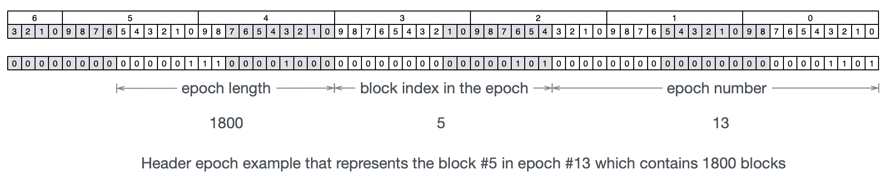
Assume there's a block, which number is 11555 and in epoch 50. The epoch 50 starts from block 11000 and have 1000 blocks. The epoch field for this particular block will then be 1,099,520,939,130,930, which is calculated in the following way:
50 | ((11555 - 11000) << 24) | (1000 << 40)
The genesis epoch number is 0 and the genesis block relative index in the epoch is also 0. So the genesis block epoch field only depends on the genesis epoch length, which is hardcoded in the consensus specification.
parent_hash (Byte32)
The header hash of the parent block. The genesis block parent_hash is hardcoded in the consensus specification.
transaction_root (Byte32)
This is the commitment to all the transactions in the block.
It is a hash on two Merkle Tree roots
ckbhash(T || W)
The function ckbhash is the default digest algorithm in CKB, see Appendix.
T is the root of a CKB Merkle Tree, which items are the transaction hashes of all the transactions in the block.
W is also the root of a CKB Merkle Tree, but the items are the transaction witness hashes of all the transactions in the block.

See Appendix for the references of CKB Merkle Tree and two different transaction hashes.
proposals_hash (Byte32)
Field proposals_hash is the hash on proposals in the block body.
It is all zeros when proposals is empty, or ckbhash on all the bytes concatenated together.
proposals_hash = 0 when proposals are empty, otherwise
proposals_hash = ckb_hash(P1 || P2 || ... || Pn)
where Pi is the i-th ProposalShortId in proposals
uncles_hash (Byte32)
Field uncles_hash is the hash on uncles in the block body.
It is all zeros when uncles is empty, or ckbhash on all the uncle header hashes concatenated together.
uncles_hash = 0 when uncles is empty, otherwise
uncles_hash = ckb_hash(U1 || U2 || ... || Un)
where Ui is the header_hash of the i-th uncle in uncles
Recall that header hash is the hash of the whole serialized header.
header_hash := ckb_hash(molecule_serialize(header))
dao (Byte32)
The dao field compacts 4 64-bits unsigned integers in little-endian.
C_i, bytes 0 to 7AR_i, bytes 8 to 15S_i, bytes 16 to 23U_i, bytes 24 to 31
See RFC Deposit and Withdraw in Nervos DAO.
Transactions
The field block.transactions is the ordered list of transactions in the block. The first transaction must be the cellbase. See the transaction informational RFC.
Uncles
The field block.uncles is the ordered list of uncle blocks.
A block B1 is considered to be the uncle of another block B2 if all the following conditions are met:
- They are in the same epoch, sharing the same difficulty;
- B2 block number is larger than B1;
- B1's parent is either B2's ancestor or an uncle embedded in B2 or any of B2's ancestors.
- B2 is the first block in its chain to refer to B1.
The chain stores only the uncle block header and proposal IDs. The header ensures the block is covered by PoW and can pass the consensus rules on uncle blocks. Proposal IDs are there because a block can commit transactions proposed in an uncle.
Proposals
Transaction proposal ID is the first 10 bytes of the Transaction Hash.
Unlike Bitcoin, CKB requires to propose the transaction proposal IDs before committing the transaction into the chain.
A transaction is said proposed in block B if its proposal ID appears in B's or B's uncles' proposals field. A transaction is commit if it is included in the block transactions field.
Two protocol parameters close and far define the closest and farthest on-chain distance between a transaction's proposal and commitment.
A non-cellbase transaction commit in block which number is c must have been proposed in block with number p, where
close <= c - p <= far
In CKB Lina the mainnet, close is 2 and far is 10. Thus
2 <= c - p <= 10
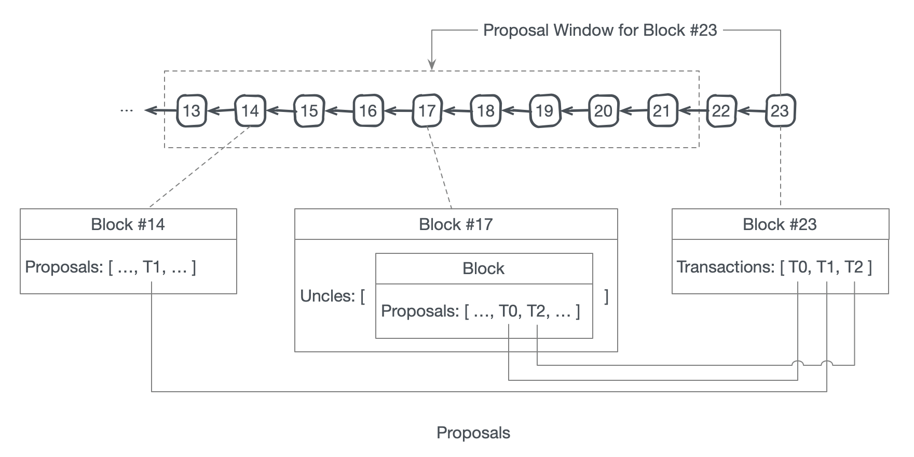
Appendix
Molecule
Molecule is a serialization framework.
The molecule schema used in CKB can be found in util/types/schemas
ckbhash
CKB uses blake2b as the default hash algorithm with following configurations:
- output digest size: 32
- personalization: ckb-default-hash
Python 3 Example and test vectors:
import hashlib
import unittest
def ckbhash():
return hashlib.blake2b(digest_size=32, person=b'ckb-default-hash')
class TestCKBBlake2b(unittest.TestCase):
def test_empty_message(self):
hasher = ckbhash()
hasher.update(b'')
self.assertEqual('44f4c69744d5f8c55d642062949dcae49bc4e7ef43d388c5a12f42b5633d163e', hasher.hexdigest())
if __name__ == '__main__':
unittest.main()
CKB Merkle Tree
CKB Merkle Tree is a CBMT using following merge function:
ckbhash(left || right)
- ckbhash is the hash function.
||denotes binary concatenation.
Transaction Hash
The transaction is serialized via Molecule in CKB. Its schema is:
table Transaction {
raw: RawTransaction,
witnesses: BytesVec,
}
The transaction hash is the ckbhash on the serialized raw.
Transaction Witness Hash
The transaction is serialized via Molecule in CKB.
The transaction witness hash is the ckbhash on the whole serialized transaction.